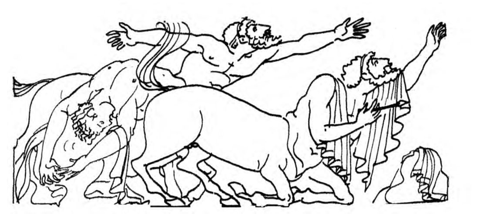

Жалпы психология · Танымдық процестер · 10-дәріс
Қиялжаңа мүмкіндікті алдымен санада жасаймыз
Сәулетші әлі салынбаған үйді көз алдына елестетеді. Бала ертегі кейіпкерін ойдан шығарады. Ғалым болашақ тәжірибенің суретін алдын ала сызады. Үшеуі де бұрын көрген-білгенін қайта өңдеп, бұрын болмаған бейне жасайды. Мұның бәрі — қиялдың жемісі. Бұл білім базасы қиялдың не екенін, мида қалай туатынын, денемізге қалай әсер ететінін, қандай түрлері барын және жаңа бейне қандай тәсілдермен жасалатынын бір әңгімеге біріктіреді. Терминдер дәріс слайдтары мен Бабаевтың қазақша оқулығы бойынша берілген, ал тапсырмалар мен тәжірибелерді өзіңіз орындап көресіз.
Құрметті студенттер!
Қиял туралы сөз қозғалса, көбіміз ертегіні, қиял-ғажайып фильмді немесе бос арманды еске аламыз. Күнделікті тілде «қиял» дегеніміз көбіне шындыққа жанаспайтын нәрсе. Ал психологияда қиял — кез келген жаңа істің басы. Адам қолымен жасалған дүниенің бәрі — үй де, көлік те, кітап та, күй де — алдымен біреудің қиялында туған.
Білім базасы төрт бөлімнен тұрады. Алдымен қиялдың не екенін, оның қабылдау, ес және ойлаумен байланысын, қызметтерін және ғалымдардың оны қалай түсіндіргенін қарастырамыз. Екінші бөлімде қиялдың ми негізіне, денеге әсеріне және жаңа бейне жасаудың бес тәсіліне тоқталамыз. Үшінші бөлім қиял түрлеріне арналған: пассивті қиял, активті қиял және арман. Соңғы бөлімде қиял мен шығармашылықтың байланысын, әр адамның қиялындағы ерекшелікті, қиялдың дамуын, оны зерттеу әдістерін және психологтың жұмысында қиялды қалай пайдаланатынын талдаймыз.
Тараулар бір-бірімен байланысқан: әр тарау алдыңғы тарауда туған сұрақтан басталып, келесі тарауға көпір салып аяқталады. Сондықтан ретімен оқыған дұрыс. Ал керек ұғымды жоғарыдағы іздеу жолағы немесе терминдер сөздігі арқылы таба аласыз.
Әр тараудың соңында негізгі түйіндер, өзін-өзі тексеру сұрақтары және жағдаяттық есептер берілген.
Бастамас бұрын
Көзіңізді жұмып, өзіңіз ешқашан көрмеген жануарды елестетіп көріңіз. Оның бөліктерінің бәрі таныс жануарлардан алынғанын байқайсыз ба? 1-тарау осы жұмбақтан басталады. Бастау үшін 1-тарауға өтіңіз.
Мазмұны
I БӨЛІМҚиял деген не?Қиялдың анықтамасы, басқа танымдық процестермен байланысы, қызметтері мен теориялары
- 01Қиял деген не?Ешқашан көрмеген жануарды көз алдыңызға елестетіп көріңізші. Ол қаншалықты ғажап болса да, әр бөлігін бұрын бір жерден к…
- 02Қиял және басқа танымдық процестер. Қиялдың қызметтеріҚиялдың шикізаты — көргеніміз бен есте қалғаны, ал проблемалық жағдайда ол ойлаумен қатар жұмыс істейді. Сонда олардың ш…
- 03Қиялды зерттеудің теориялық бағыттарыҚиялдың не екенін және адамға не беретінін білдік. Енді тереңірек сұрақ қоямыз: адам бұрынғы тәжірибесінен жаңа бейнені …
II БӨЛІМҚиялдың негізі мен механизмдеріҚиялдың ми негізі, ағзаға әсері және жаңа бейне жасау тәсілдері
- 04Қиялдың физиологиялық негізі3-тарауда әртүрлі ғылыми мектептер бір сұраққа жауап іздегенін көрдік: адам тәжірибеден жаңа бейнені қалай жасайды? Псих…
- 05Қиял және ағзаАлдыңғы тарауда қиялдың тетіктері ми қабығымен шектелмейтінін, мидың терең бөлімдеріне де жалғасатынын көрдік. Енді соны…
- 06Жаңа бейне қалай жасалады?3-тарауда бір сұрақ қойдық: адам тәжірибеден жаңа бейнені қалай жасайды? 4-тарауда оған мидың тілімен жауап бердік: ескі…
III БӨЛІМҚиял түрлеріПассивті және активті қиял, арман
- 07Қиял түрлерінің жіктелуі. Пассивті қиялБір адам терезеге қарап, жазғы демалысты елестетіп отыр. Екіншісі курстық жобасының сызбасын ойша құрастырып отыр. Үшінш…
- 08Активті қиял және арманКітап оқығанда көз алдымызда басқа заманның көріністері ашылады. Жазушы ешкім көрмеген кейіпкерді ойлап табады. Студент …
IV БӨЛІМҚиял, шығармашылық және тұлғаШығармашылық процесс, қиялдың жеке ерекшеліктері, дамуы және зерттеу әдістері
- 09Қиял және шығармашылықКүй, өлең, жаңа құрал, ғылыми жаңалық — бәрі алдымен біреудің басында бейне болып туады. Бұл тарауда бірнеше сұраққа жау…
- 10Қиялдың жеке ерекшеліктері және дамуыЕкі адамға бір тапсырма берсек, екі түрлі бейне аламыз. Біреудің қиялы жарқын әрі кең, екіншісінікі бұлыңғыр әрі тар. Бі…
- 11Қиялды зерттеу әдістеріҚиялды тікелей көру мүмкін емес. Психолог оны адамның сөзінен және қолынан шыққан дүниеден ғана тани алады. Бұл тарауда …
- 12Қиял психологтың жұмысындаҚиял адамды қорқытады да, тыныштандырады да. Кейде ол бір ғана жолды көрсетіп, адамды тұйыққа тірейді, кейде жаңа шешім …
Дереккөздер
- 10-дәріс слайдтары«Қиял: физиологиялық механизмі, түрлері және жасалу жолдары». Негізгі терминдер осы слайдтардан алынды.
- Бабаев С. Б.Жалпы психология (жантану негіздері). 14-дәрісбаян «Қиял», 160–172-беттер. Слайдта жоқ қазақша терминдер осы кітап бойынша берілді.
- Немов Р. С., Романова Е. С.Общая психология. I бөлім, 12-тарау «Воображение».
- Маклаков А. Г.Общая психология. 11-тарау «Воображение», 283–297-беттер.
- Крысько В. Г.Общая психология в схемах и комментариях. 2.19–2.21 «Сущность, функции и виды воображения».
I бөлім · Қиял деген не?
Қиял деген не?
Ешқашан көрмеген жануарды көз алдыңызға елестетіп көріңізші. Ол қаншалықты ғажап болса да, әр бөлігін бұрын бір жерден көргеніңізді байқайсыз. Ал тұтас бейне бұрын болған жоқ. Бұл бейне қайдан келді? Тараудың өзегі — осы сұрақ.
- Дәріс слайдтары, 3
- Бабаев, 14-дәрісбаян, 1-бөлім
- Немов, 12.1
- Маклаков, 11.1
- Крысько, 2.19
Бірінші курс студенті Аружан ешкім көрмеген жануарды елестетті: басы бүркіттікі, денесі арғымақтыкі, құйрығы түлкінікі, ал жотасында екі үлкен қанаты бар. Мұндай жануар табиғатта жоқ, Аружан оны ешқашан көрген емес. Бірақ бейнені бөлшектеп қарасақ, қызық нәрсені байқаймыз: әр бөлігі бұрыннан таныс. Бүркітті ол тауда көрген, арғымақты ауылда мінген, түлкіні мультфильмнен білетін. Жаңа нәрсе тек біреу ғана: осы бөліктердің бір денеге бірігуі.
Сонымен қиял жоқтан бар жасамайды. Ол бұрын көрген, естіген, сезген нәрселерімізден материал алады да, оны бөлшектеп, басқаша қиыстырады. Сөйтіп өмірде болмаған бейне пайда болады.
«Қиялшыл» дегеніміз мақтау ма, сөгіс пе?
Күнделікті тілде «қиял» сөзі көбіне жақсы мағынада айтылмайды. «Қиялға берілме», «бос қиял» деп айтамыз. Сабақта терезеге қарап отырған оқушыға мұғалім «ойың қайда кетті?» деп ескертеді, ал үйде анасы оны «қиялшыл бала» дейді. Тұрмыста біз шындыққа сай келмейтін, іске аспайтын нәрсенің бәрін қиял немесе фантазия деп атай саламыз.
Ғылымда бұл сөздің мағынасы басқа. Психология үшін қиял — кез келген шығармашылық істің негізі. Ол өнерде де, ғылымда да, техникада да, мәдени өмірдің барлық саласында көрінеді. Айналамызға қарайықшы. Табиғаттың өзі берген нәрседен басқасының бәрі — үй, көпір, домбыра, кітап, телефон, тіпті кәдімгі қасық — алдымен біреудің ойында бейне болып туған. Сондықтан адам қолынан шыққан өнер мен мәдениеттің бәрі дерлік қиялдың және қиялға негізделген шығармашылықтың жемісі деуге болады (Бабаев).
Философтар адамды әр кезде әртүрлі атаған: «тік жүретін адам», «ойлайтын адам», «әрекет ететін адам», «жасаушы адам». Оны «армандайтын адам» немесе «қиялы бар адам» деп атау да қате болмас еді (Немов). Себебі адам тек көз алдындағы дүниеде ғана емес, ойдағы дүниеде де өмір сүре алады: армандайды, болашақты болжайды, жоспар құрады, жаңа нәрсені алдымен ойша жасап, сосын оны шындыққа айналдырады.
Демек «қиял» сөзінің екі мағынасы бар екен. Күнделікті мағынасында ол шындықтан алыс, пайдасыз нәрсе. Ғылыми мағынасында ол адам психикасының ең бағалы қабілеттерінің бірі. Бұл екеуі бір-біріне қайшы емес. Бос арман да, ұлы жаңалық та бір процестен туады. Айырмасы — қиялдың неге бағытталғанында және оны адамның қаншалықты басқаратынында. Бұл айырманы қиял түрлеріне арналған 7-тарауда және 8-тарауда толық ашамыз.
Анықтама: тәжірибе, қайта өңдеу, жаңа бейне
Енді ғылыми анықтамаға келейік. Дәріс слайдында қиялдың анықтамасы мен оның қысқа формуласы берілген.
Қиял (фантазия)
Бұрынғы қабылдаулар мен тәжірибеге сүйеніп, мида жаңа бейнелер, идеялар немесе жобалар жасау процесі (дәріс слайды).
тәжірибе + қайта өңдеу = жаңа бейне
Формуланың үш бөлігін бір-бірлеп қарайық. Тәжірибе — қиялдың материалы. Біз көрген, естіген, ұстаған, оқыған нәрселердің бәрі есте із қалдырады. Қайта өңдеу — қиялдың жұмысы. Ол бұрынғы бейнелерді бөлшектейді, үлкейтеді не кішірейтеді, бір-біріне қосады, кейбір белгісін баса көрсетеді. Жаңа бейне — қиялдың нәтижесі. Ол бұрынғы тәжірибеден өзгеше, бірақ одан мүлде қол үзіп кетпеген.
Слайдта күнделікті өмірден үш мысал бар. Сәулетші әлі салынбаған үйді ойша көреді. Бала ертегі кейіпкерін ойдан шығарады. Ғалым болашақ тәжірибенің моделін құрады. Үшеуінің де материалы бұрынғы тәжірибе. Сәулетші мыңдаған үйді көрген, бала жүздеген ертегі тыңдаған, ғалым талай тәжірибе жасаған. Бірақ үшеуі де сол тәжірибені қайталамай, одан жаңа нәрсе құрастырады.
Бейнеорыс. образ деген сөзге де назар аударайық. Слайдта кейде «образ» деп жазылған, біз «бейне» деп атаймыз. Бейне дегеніміз — заттың немесе құбылыстың санадағы көрінісі. Ал бұрын қабылдаған заттың бейнесі кейін көз алдымызға қайта келсе, оны елесорыс. представление дейміз. Анамыздың жүзін, ауылдағы үйді, «Адай» күйін біз сол сәтте көрмесек те, естімесек те, елестете аламыз. Қиял осы елестермен жұмыс істейді: оларды қайта өңдеп, жаңа елес жасайды.
Аружан сияқты өзіңіз де құрастырып көріңіз. Таныс жануарлардың бөліктерінен ешкім көрмеген жануар жасаңыз. Соңында жануардың неше бөлігі жаңа екенін санаңыз.
Оқулықтардағы анықтамалар да осы ойды әртүрлі сөзбен айтады. Біріншісі қиялдың материалына назар аударады: қиял елестерді қайта өңдейді.
Қиял
Шындықты бейнелейтін елестерді қайта өңдеп, соның негізінде жаңа елестер жасау процесі (Маклаков).
Крысько да осыған жақын анықтама береді.
Қиял
Бар тәжірибеге сүйеніп, жаңа елестер жасайтын танымдық процесс, яғни шындықты өзгертіп бейнелеу (Крысько).
Анықтаманың соңғы бөлігіне назар аударайық. Түйсік пен қабылдау шындықты сол күйінде бейнелейді, ес оны сақтап, қайта жаңғыртады. Ал қиял оны өзгертіп, жаңаша құрастырады.
Келесі анықтама қиялды көршілес екі процестен бөліп көрсетеді.
Қиял
Бейне туғызып, оны өзгерту процесі. Бұл бейне адамның дәл қазір көріп-сезіп тұрған нәрсесіне де, есінде сақталған нәрсеге де толық сәйкес келмейді (Немов).
«Толық сәйкес келмейді» деген сөз мұнда әдейі тұр. Қиялдың туындысы ешқашан шындықтың дәл көшірмесі емес. Ол дәл қазір көз алдымызда тұрған нәрсенің тура бейнесі де емес, естегі бейненің өзі де емес. Бірақ ол шындықпен мүлде байланыссыз да емес. С. Л. Рубинштейн қиялды бейнелі түрде бұрынғы тәжірибеден самғау деп сипаттаған. Немов бұған тағы бір сөз қосады: қиял қазіргі тәжірибеден де, яғни адамның дәл қазір істеп не көріп отырған нәрсесінен де самғайды.
Соңғы анықтама басқа қырынан келеді: ол қиялдың не жасайтынына емес, не үшін керек екеніне назар аударады.
Қиял
Алдағы проблемалық жағдай әлі анық болмағанда істің соңғы нәтижесін күні бұрын болжап, соған қарай әрекет бағдарламасын құруға көмектесетін психикалық процесс (Бабаев).
Бұл анықтаманың мағынасын бір мысалмен ашайық. Дәурен ауылдан қалаға оқуға келді. Алдында бір жыл бар: жаңа қала, жаңа адамдар, жаңа пәндер. Не болатынын ешкім дәл айтып бере алмайды, жағдай анық емес. Бірақ Дәурен түнде жатақханада жатып, алдағы жылды көз алдына елестетеді. Қай үйірмеге жазылатынын, кітапханаға қашан баратынын, демалыста не істейтінін ойлайды. Сөйтіп болашақтың бейнесін жасап, соған қарап әрекет жоспарын құрып жатыр. Жоғарыдағы анықтама дәл осыны айтады.
| Дереккөз | Анықтаманың өзегі | Нені баса айтады? |
|---|---|---|
| Дәріс слайды | Тәжірибеге сүйеніп, жаңа бейне, идея, жоба жасау. | Формуланы: тәжірибе + қайта өңдеу = жаңа бейне. |
| Маклаков | Елестерді қайта өңдеп, жаңа елестер жасау. | Қиялдың материалын: ол шындықтан алынған елестермен жұмыс істейді. |
| Крысько | Бар тәжірибе негізінде жаңа елестер жасайтын танымдық процесс. | Шындықты өзгертіп бейнелеуді. |
| Немов | Қабылдауға да, еске де толық сәйкес келмейтін бейнелерді туғызу және өзгерту. | Қиялдың қабылдау мен естен айырмасын. |
| Бабаев | Жағдай анық болмағанда нәтижені алдын ала болжап, әрекет бағдарламасын құру. | Қиялдың не үшін керек екенін, оның болашаққа бағытталғанын. |
Анықтамалар әртүрлі болғанымен, олардың үш ортақ тұсы бар. Біріншіден, қиялдың материалы — бұрынғы тәжірибе. Екіншіден, қиял сол материалды өзгертеді. Үшіншіден, нәтижесінде бұрын болмаған бейне шығады. Бұл үшеуін төмендегі схемадан қараңыз.
Есте сақталған бейне мен қиялдағы бейне
Қиял да, ес те елестермен жұмыс істейді. Екеуі де көз алдымызда жоқ нәрсені санаға қайта алып келеді. Сонда олардың айырмасы неде? Ес бейнелері — өткен тәжірибенің қайта жаңғыруы. Естің басты міндеті — сол тәжірибені мүмкіндігінше өзгертпей сақтау. Ал қиял бейнені міндетті түрде өзгертеді. Сол себепті шығармашылықтың бірде-бірі қиялсыз болмайды.
Бір мысал. Мейіржан ауылдағы әжесінің үйін есіне алды: кіре берістегі ағаш есік, төрдегі сандық, пештің жанындағы ескі кілем. Ол үйді дәл қалай болса, солай көргісі келеді. Бұл — ес. Енді ол сол үйді жөндегісі келеді. Есікті кеңейтіп, төбеге жарық терезе салып, пешті жаңасына ауыстырғанын көз алдына елестетеді. Бұл — қиял. Материал біреу: әжесінің үйі. Бірақ міндеті екі түрлі.
Адам бұрынғы тәжірибесін сол күйінде қайта жаңғыртқысы келсе — бұл ес. Ал сол елестерден жаңа тіркес не жаңа елес құраса — бұл қиял (Маклаков). Яғни шекара материалда емес, психикалық әрекеттің міндетінде жатыр.
Есте жаңа бөлшектің пайда болуы — жаман белгі (Немов). Мейіржан әжесінің үйінде болмаған нәрсені «есіне алса», есі оны алдап тұр. Есте жаңа бөлшек неғұрлым көп болса, ес соғұрлым нашар жұмыс істейді. Қиялда керісінше. Онда жаңа, тосын, ерекше бөлшек неғұрлым көп болса, қиял соғұрлым бай саналады.
Бірақ бұл шекара кейде бұлдырап кетеді: ең қарапайым есте түсірудің өзінде де қиялдың үлесі бар (Маклаков). Өткен оқиғаны есімізге алғанда, біз оның барлық ұсақ-түйегін қалпына келтіре алмаймыз. Сонда да оқиға үзік-үзік кадр болып емес, тұтас, үздіксіз көрінеді. Себебі жетпей тұрған бөлшекті қиял толтырады. Мысалы, бес жыл бұрынғы тойды есіңізге алыңызшы. Қонақтардың киімі, дастарханның түсі, кімнің қай жерде отырғаны — бұлардың бәрін дәл есіңізде сақтадыңыз ба? Әлде кейбірін санаңыз өзі «бояп» берді ме?
Төмендегі жағдаяттарда адам көз алдында жоқ нәрсені елестетіп отыр. Ол есіне алып отыр ма, әлде қиялдап отыр ма? Шешпес бұрын өзіңізге бір сұрақ қойыңыз: адам бұрынғы тәжірибені сол күйінде қайталағысы келе ме, әлде оны өзгертіп отыр ма?
Іс басталмай тұрып нәтижені көру
Шебер ұста киіз үйдің уығын иместен бұрын, оның қандай иілісі болатынын көз алдына келтіреді. Тігінші матаны пішпес бұрын көйлектің дайын түрін көреді. Аспаз ет асудан бұрын дастарханға қойылатын табақтың қалай безендірілетінін ойлап қояды. Адам ісін бастамай тұрып-ақ, болашақ еңбегінің нәтижесін алдын ала көре алады. Жануар туа біткен тәсілмен әрекет етеді, ал адам нәтижені алдын ала көріп барып іске кіріседі. Адам еңбегінің басты айырмасы осында.
Өрмекші тор тоқығанда тоқымашыға, ара балауыздан ұя салғанда құрылысшыға ұқсайды. Бірақ ең нашар маман да ең шебер арадан бір нәрсесімен озады: ол алдын ала белгілеген жоспар бойынша әрекет етеді (Маклаков). Кез келген еңбек алдымен жоспар жасауды, содан кейін ғана оны іске асыруды талап етеді. Ал жоспар — болашақ нәтиженің санадағы бейнесі.
Психологияда қиял еңбек үстінде пайда болған деген пікір қалыптасқан (Маклаков). Адамның қолында жетілмеген құрал болды делік. Ол сол құралға қарап отырып, өзіне керек басқа бір құралды көз алдына елестете алды. Мысалы, ол былай ойлауы мүмкін: «Тас балта ағашты нашар шабады, жүзі жұқа әрі ұзын болса ғой». Адамзат тарихы дамыған сайын қиял тек еңбекте ғана емес, арман мен фантазияда да көріне бастады. Сөйтіп ғылымға, техникаға, өнерге керек қиялдың күрделі түрлері туды.
Нәтижені алдын ала көрудің тағы бір пайдасы бар. Істің нәтижесін алдын ала көрген адамның еңбекке ынтасы артады, мақсатқа жетуге жігері қосылады. Дипломын қолына алып, ата-анасының қуанғанын көз алдына елестеткен студент түнгі дайындыққа оңай отырады. Мұны 5-тарауда қиялдың ағзаға әсерімен, ал 8-тарауда арманмен байланыстырамыз.
«Қорыққанға қос көрінеді»
Қиял әрдайым көмекші бола бермейді, кейде кері әсер етеді. Адам алда күтілетін жағымсыз жағдайды, қауіп-қатерді, бақытсыздықты көз алдына елестетеді. Сол елес оны қатты күйзеліске түсіреді. Нәтижесінде адам шын оқиғаға сай келмейтін, шектен тыс, орынсыз әрекет жасап қояды.
Мұның ауыр мысалы да бар. Кенеттен өрт шыққанда кейбір адамдар көрініп тұрған көмекті шыдап күтудің орнына көп қабатты үйдің жоғарғы қабаттарынан өзін тастап, мертігіп қалған (Бабаев). Оларды тек от емес, қиялдағы от та қорқытты. Алдағы қауіптің бейнесі нақты қауіптен үлкен болып көрінді. Қиялдың осы зиянын халық бір ауыз сөзбен дәл айтқан: «Қорыққанға қос көрінеді».
Күнделікті өмірде де осыны жиі байқаймыз. Әлия емтиханға кірерден бір түн бұрын жатып, билетті шығара алмай тұрғанын, мұғалімнің қабағын түйгенін, бүкіл топтың алдында ұялғанын көз алдына елестетті. Таңертең ол шаршап, қолы дірілдеп келді. Ал емтихан күткеніндей қорқынышты болмай шықты. Оның күшін шын қиындық емес, қиялдағы қиындық алды.
Демек қиялдың болжайтын күші екі жақты. Ол болашақты жоспарлауға көмектеседі, бірақ болашақтың қорқынышты бейнесін де жасай алады. Қиялдың денеге, жүрекке, тамырға қалай әсер ететінін және оны қалай пайдалы бағытқа бұруға болатынын 5-тарауда толық көреміз.
Қиял ойлаудан бір адым алда
Қиялдың болашақты болжай алуы оның ойлаумен тығыз байланысын көрсетеді. Қиял бүгінгі өмірден «арқан бойы алда» жүріп, болашақта күтілетін кейбір оқиғаларды күні бұрын танытады. Ойлау сияқты қиял да проблемалық жағдайда туады. Оны адамның қажеті туғызады, ал қандай болатыны қоғамның қай сатыда тұрғанына байланысты. Мысалы, ежелгі адамдар әлемнің қалай жаратылғанын түсіндіру қажет болғанда, діни бейнелер туды. Ал бүгінгі күні адамдар осы сұраққа жауап іздегенде, ғарыштан келген бөгде планеталықтардың фантастикалық бейнелерін пайдаланады. Қажеттілік бір, бірақ қиялдың материалы заманына қарай өзгереді.
Сонда да қиял ойлаудан ерекшеленеді. Ойлау дүниені ұғым арқылы, жалпылама әрі жанама таниды. Ал қиял жарқын, нақты бейнелер арқылы жұмыс істейді. Мұны өнерден жақсы көреміз. Жазушы, суретші өз ойын басқаларға дерексіз ұғымдармен емес, нақты бейнемен түсіндіруге тырысады. Айталық, Крыловтың «Қарға мен түлкі» мысалын оқығанда, біз «мақтауға алданба» деген ойды түлкінің айласы мен қарғаның аңқаулығы арқылы түсінеміз. Ертегіде, мақал-мәтелде, кез келген көркем шығармада біз бейненің артында жатқан негізгі ойды іздейміз.
Кейде қиял ойлаудың орнын басады. Жағдайдың бастапқы деректері анық болмаса, оларды дәл талдау мүмкін болмаса, қатаң заңдылыққа сүйенетін ойлауды қолдану қиын. Сондай кезде қиял ойлаудың бір «орынбасары» болып қызмет етеді (Бабаев). Ойлау мен қиялдың шекарасын 2-тарауда толық қарастырамыз.
Ой мен қиялдың тығыз байланысын атап, орыс педагогы К. Д. Ушинский былай деген екен: «Мықты, кемелденген қиял — ақылдылықтың нышаны» (Бабаев). Бұл сөздің мәнісі мынада: бай қиял ақылдың қарсыласы емес, оның серігі.
Қиялдың күшін неден білеміз?
Бұрын айтқанымыздай, ең ғажайып бейненің өзі таныс бөлшектерден құралады. Машина да, үй де алдымен адамның ойында белгілі материалдардан жиналады. Осыдан маңызды қорытынды шығады: білімі мол, көп көрген, зерделі әрі сезімтал адамның қиялы да бай. Ол ғажайып, қызық бейнелерді оңай табады, өйткені құрастыратын материалы көп. Сондықтан қиялды дамытудың бір жолы — көп көру, көп оқу, көп нәрсені өз қолымен істеп көру.
Сонда шығармашылық қиялдың күші мен деңгейін немен өлшейміз? Бұл сұраққа Бабаев С. Л. Рубинштейннің пікірі арқылы жауап береді. Рубинштейн шығармашылық қиялдың екі белгісін атайды.
- Мағыналы болуы керек. Қиялдан туған нәрсе шындықтың заңына, істің мақсатына қайшы келмеуі тиіс. Аязда жылу беретін мұз пеш — мағынасыз; шөлде ауадағы ылғалдан су жинайтын құрылғы — мағыналы.
- Жаңа болуы керек. Қиялдың жемісі өзі шыққан материалды қайталамай, одан өзгеше болуы тиіс. Бұрынғыны көшіру — жаңалық емес.
Бабаев осы екі талапқа сай келмеген қиялды «фантастика» дейді: ол қызық болуы мүмкін, бірақ іс жүзінде пайдасы жоқ. Біз мұндай қиялды белгісіне қарай екіге бөліп атаймыз. Мағынасы бар, бірақ жаңалығы жоқ идея — бұрынғыны қайталау. Жаңа, бірақ мағынасыз идея — бос фантазия. Шын шығармашылық қиял екі белгі қатар келгенде ғана туады.
Төмендегі интерактивте студенттер ұсынған идеяларды Рубинштейннің екі белгісі бойынша бағалаңыз. Әр идеяға екі сұрақ қойыңыз: оның мағынасы бар ма? Ол жаңа ма?
Қиялсыз ғалым да, мұғалім де жоқ
Қиялдың маңызы орасан зор. Ол жазушыға кейіпкердің бейнесін жасау үшін, суретшіге болашақ картинаның сюжетін табу үшін ғана керек емес. Бабаев қиялдың ғалымға, мұғалімге, студентке қажеттігін мысалмен көрсетеді.
- Ғылымда. Қиялы жоқ ғалым құбылыстың себебі туралы болжам, яғни гипотеза жасай алмайды. Болжам дегеніміз — әлі дәлелденбеген, бірақ ойша құрастырылған жауап.
- Ұстаздың жұмысында. Мұғалім сабақтың барысын, шәкірттердің оқуға қалай қарайтынын алдын ала қиялында талдап шықпай, сабаққа дайындала алмайды. Сабақ жоспары — болашақ сабақтың бейнесі.
- Оқуда. Оқу процесінің өзі қиялсыз шектеулі болар еді. Тарих, география, астрономия және басқа пәндер тек қиял қанатымен игеріледі. Абылай ханның заманын, Антарктиданың мұзын, Күн жүйесінің құрылысын ешбір студент өз көзімен көрген жоқ. Бірақ сипаттама мен суретке қарап, оларды елестете алады.
Адам механикалық, бір қалыпты еңбектен алыстап, шығармашылық іске жақындаған сайын, қиялдың маңызы да арта түседі (Маклаков). Конвейерде бір бұранданы күніне мың рет бұрайтын жұмысшыға қиял аз керек. Ал жаңа көлік жобалайтын инженерге ол күн сайын керек.
Қиялдың адам өміріндегі тағы екі қыры бар (Маклаков). Біріншісі — сезіммен байланысы. Қалаған нәрсені елестету адамға жағымды сезім сыйлайды. Кейде бақытты болашақ туралы арман адамды ауыр күйден алып шығады: адам қазіргі жағдайдан сәл алыстап, болған оқиғаны сабырмен талдайды, оның болашақ үшін мәнін қайта бағалайды. Екіншісі — еріктік әрекетпен байланысы. Еріктік әрекеттің бәрі алдымен ойша жасалады — бұл туралы жоғарыда ара мен шебердің мысалында айттық. Бұл екі қырға 2-тарауда, қиялдың қызметтерін талдағанда, ораламыз.
Болашақ психолог үшін қиялдың тағы бір маңызы бар. Слайдта бұл үш бағытқа бөлінген: психотерапиялық жұмыс, проблеманы шешу, мотивация мен мақсат. Үрей мен фобиямен жұмыста психолог клиентке «қауіпсіз орынды» елестетуді ұсынады, оған жағдайға басқа қырынан қарауға көмектеседі, «арманнан әрекетке» көпір салады. Мұның бәрі қиялға сүйенеді. Бұл тақырыпқа 5-тарауда қайта ораламыз.
Негізгі түйіндер
- Күнделікті тілде «қиял» — шындыққа сай келмейтін, пайдасыз нәрсе. Психологияда қиял — кез келген шығармашылық істің негізі; адам қолымен жасалған мәдениеттің бәрі дерлік — қиялдың жемісі.
- Слайд бойынша қиял — бұрынғы қабылдаулар мен тәжірибеге сүйеніп, жаңа бейне, идея, жоба жасау процесі. Формуласы: тәжірибе + қайта өңдеу = жаңа бейне.
- Маклаков бойынша, қиял — елестерді қайта өңдеп, жаңа елестер жасау; Крысько бойынша — шындықты өзгертіп бейнелеу; Немов бойынша — қабылдауға да, еске де толық сәйкес келмейтін бейне жасау; Бабаев бойынша — анық емес жағдайда нәтижені болжап, әрекет бағдарламасын құруға көмектесетін процесс.
- Ес тәжірибені мүмкіндігінше өзгертпей сақтайды, қиял оны өзгертеді. Шекара материалда емес, әрекеттің міндетінде: қайталау — ес, жаңа тіркес жасау — қиял.
- Қиял арқылы адам ісін бастамай тұрып нәтижесін көреді. Бұл адам еңбегін жануарлардың туа біткен тәсілінен ажыратады және еңбекке ынта береді.
- Қиялдың кері әсері де бар: қауіптің бейнесі адамды күйзелтіп, орынсыз әрекетке итермелейді. «Қорыққанға қос көрінеді».
- Қиял ойлау сияқты проблемалық жағдайда туады, бірақ ұғыммен емес, жарқын бейнемен жұмыс істейді; деректер анық болмағанда ойлаудың «орынбасары» бола алады.
- Рубинштейннің екі белгісі: шығармашылық қиялдың туындысы мағыналы және жаңа болуы керек.
Өзін-өзі тексеру
«Қиял» сөзінің күнделікті мағынасы мен ғылыми мағынасы қалай ажыратылады?
Күнделікті тілде шындыққа сай келмейтін, іске аспайтын, пайдасыз нәрсенің бәрін қиял не фантазия деп атаймыз. Психологияда қиял — кез келген шығармашылық іс-әрекеттің негізі. Ол өнерде, ғылымда, техникада, мәдени өмірдің барлық саласында көрінеді. Адам қолынан шыққан өнер мен мәдениеттің бәрі дерлік — қиялдың жемісі.
Слайдтағы «тәжірибе + қайта өңдеу = жаңа бейне» формуласын мысалмен түсіндіріңіз.
Тәжірибе — қиялдың материалы, қайта өңдеу — оның жұмысы, жаңа бейне — нәтижесі. Мысалы, сфинкс бейнесінің материалы — адамның басы мен арыстанның денесі, бұларды адамдар бұрын көрген. Қиял оларды бір денеге біріктірді. Нәтижесінде табиғатта жоқ жаңа бейне пайда болды. Бейненің бірде-бір бөлігі жаңа емес, жаңалық тек олардың тіркесінде.
Есте сақталған бейне мен қиялдағы бейненің айырмасы неде?
Ес өткен тәжірибені мүмкіндігінше өзгертпей сақтайды, ал қиял бейнені міндетті түрде өзгертеді. Маклаков бойынша айырма материалда емес, әрекеттің міндетінде: елесті сол күйінде қайталасақ — ес, одан жаңа тіркес жасасақ — қиял. Немов бойынша есте жаңа бөлшек — кемшілік, ал қиялда — байлық. Бірақ Маклаков ең қарапайым есте түсірудің өзінде қиял жетпей тұрған бөлшектерді толтыратынын ескертеді.
Неге нашар маман шебер арадан озады?
Ара ұяны туа біткен тәсілмен салады, ал адам алдын ала белгілеген жоспар бойынша әрекет етеді. Жоспар — болашақ нәтиженің санадағы бейнесі, оны қиял жасайды. Нәтижені алдын ала көру адам еңбегін жануарлардың туа біткен әрекетінен ажыратады. Сондықтан психологияда қиял еңбек үстінде пайда болған деп есептеледі.
«Қорыққанға қос көрінеді» мақалы қиялдың қай қырын сипаттайды?
Қиялдың кері әсерін. Адам алдағы қауіпті не бақытсыздықты көз алдына елестетіп, қатты күйзеліске түседі де, шын жағдайға сай келмейтін, шектен тыс әрекет жасайды. Бабаевтың мысалында өрт кезінде кейбір адамдар көмекті күтпей, жоғарғы қабаттан секіріп мертіккен. Қиялдағы қауіп нақты қауіптен үлкен көрінген.
Рубинштейн шығармашылық қиялдың қандай екі белгісін атайды?
Біріншіден, қиялдан туған нәрсе мағыналы болуы керек: шындықтың заңына, істің мақсатына қайшы келмеуі тиіс. Екіншіден, ол өзі шыққан материалды қайталамай, жаңа әрі өзгеше болуы керек. Бабаев осы екі талапқа сай келмеген қиялды «фантастика» дейді: қызық болуы мүмкін, бірақ іс жүзінде пайдасы жоқ.
Неге тәжірибесі мол адамның қиялы бай болады?
Себебі қиял жоқтан бар жасамайды: ол бұрын көрген, білген нәрселеріміздің бөлшектерінен жаңа бейне құрастырады. Материал көп болса, одан құрастыруға болатын тіркес те көп. Сондықтан білімі мол, көп көрген, зерделі әрі сезімтал адамның қиялы ғажайып бейнелер жасауға бейім.
Сонымен қиял тәжірибеден материал алады, оны өзгертеді және жаңа бейне жасайды. Бірақ тәжірибені бізге қабылдау береді, ес оны сақтайды, ал ойлау одан заңдылық шығарады. Сонда қиял осы үш процестің қайсысымен шекаралас, қайсысына қандай көмек береді? Адам өмірінде ол нақты қандай қызмет атқарады? Осы сұрақтарға 2-тарауда жауап іздейміз.
I бөлім · Қиял деген не?
Қиял және басқа танымдық процестер. Қиялдың қызметтері
Қиялдың шикізаты — көргеніміз бен есте қалғаны, ал проблемалық жағдайда ол ойлаумен қатар жұмыс істейді. Сонда олардың шекарасы қайда? Бұл тарауда қиялды көршілерімен бір-бірден салыстырамыз. Қиял қабылдауға, зейін мен еске, ойлау мен сөйлеуге қалай көмектеседі? Ес пен қиял қай жерде түйіседі? Осыларды көрген соң, қиялдың адам өміріндегі қызметтерін жүйелейміз.
- Дәріс слайдтары, 14
- Бабаев, 14-дәрісбаян, 1-бөлім
- Немов, 12.1–12.3
- Маклаков, 11.1
- Крысько, 2.20
Қараша айының кеші. Санжар аялдамада автобус күтіп тұр. Көше шамы әлсіз, оның үстіне тұман да түскен. Алыстан біреу келе жатыр. Оның бетін көру мүмкін емес, тек қара сұлбасы көрінеді: ұзын бойы, сәл еңкіш жүрісі, иығындағы спорт сөмкесі. Санжар бірден «Ерлан ғой» деп ойлады да, қолын көтерді. Шынында да Ерлан болып шықты.
Санжар досының бетін көрген жоқ. Көзіне жеткені тек бірнеше бұлдыр белгі. Ал толық бейнені оның санасы өзі «салып» берді: досының жүзін, күртешесін, күлкісін. Мұнда қабылдау да, ес те, тіпті ойлау да бар. Бірақ солардың бәрін бір тұтас бейнеге жинап, жетпей тұрған бөлшекті толтырған — қиял. Психикада бірде-бір процесс оқшау жұмыс істемейді. Ал қиялда бұл ерекше байқалады: ол басқа процестердің бәріне араласады.
Алдыңғы тарауда қиялдың материалы — тәжірибе, ал оның басты белгісі — жаңалық екенін көрдік. Енді қиялды көршілерінен ажыратып, олармен байланысын ашамыз. Әуелі жалпы картаға қараймыз.
Қабылдау, ес, ойлау және қиял: жалпы карта
Дәріс слайдында қиялдың үш көршісі бір кестеге жинақталған. Әр процестің өз міндеті бар, ал қиял солардың әрқайсысымен өзінше байланысады.
| Процесс | Негізгі міндеті | Қиялмен байланысы | Қиялдан айырмасы |
|---|---|---|---|
| Қабылдау | Дәл қазір сезім мүшесіне әсер етіп тұрған нақты нысанды бейнелейді. | Қиял қабылдаудан материал алады. | Қабылдау бейнесі осы сәтке, осы орынға байланған, ал қиял бейнесі уақыт пен кеңістікке тәуелді емес. |
| Ес | Өткен тәжірибені сақтайды және қайта жаңғыртады. | Қиял естелікті қайта өңдейді. | Есте жаңа бөлшек — кемшілік, қиялда — байлық. |
| Ойлау | Заңдылық пен ұғымды логикалық жолмен ашады. | Қиял бейне мен болжамға сүйенеді; деректер анық болмағанда ойлаудың орнын басады. | Ойлаудың нәтижесі — ой, идея; қиялдың нәтижесі — бейне. |
Слайдта осы кестенің астына бір сөйлем жазылған. Тараудың өзегі осы сөйлем болсын: қабылдау мен ес барды көрсетеді, ал қиял әлі болмаған мүмкіндіктің бейнесін жасайды. Қиял әлі жоқ нәрсені, кейде тіпті ешқашан болмайтын нәрсені де көз алдымызға әкеледі.
Бұл картаға Немовтың бір ойын қосайық. Қиялдың көршілерімен туыстығын ол үш дәлелмен көрсетеді. Біріншіден, қиял қабылдау, ес және ойлаудың аралығында тұр. Екіншіден, оның ішінде басқа процестердің бөлшектері бар. Үшіншіден, бәрін бейнемен жұмыс біріктіреді. Бірақ қиялды солардың біріне теңеп қоюға болмайды. Ол — өз алдына жеке психикалық процесс.
Қабылдау: қиял көзге көрінгенді толықтырады
Бір қарағанда қабылдау мен қиялдың айырмасы анық. Қабылдау бейнесі сезім мүшесіне тікелей әсер ететін заттан туады. Ал қиял бейнесі туу үшін сезім мүшесіне дәл қазір ештеңе әсер етпеуі де мүмкін. Немов бұл айырманы жеті белгі бойынша сипаттайды. Солардың ең маңыздыларын өз мысалымызбен ашайық.
- Неден туады? Аялдамада тұрған Санжардың көзіне жеткен сұлба — қабылдау. Ал ол түнде жатақханада жатып, ертеңгі кездесуді көз алдына келтірсе, бұл бейне сыртқы заттан емес, оның санасының ішінен туады.
- Уақыт пен кеңістік. Қабылдау әрдайым «қазір» және «осында» болады. Қиял адамды өткенге де, болашаққа да апарады. Ол бейнесін әлемнің кез келген нүктесіне, тіпті адам ешқашан бара алмайтын жерге орналастыра алады. Қабылдаудың уақыты мен кеңістігі шектеулі, ал қиялдікі шексіз.
- Бағдар. Қабылдау адамға айналасында бағдар алуға көмектеседі. Қиял, керісінше, кейде бағдардан адастырады. Бір-екі минут қиялға беріліп кеткен жүргізуші бағдаршамның жасыл түске ауысқанын байқамай қалады.
- Зейіннің бағыты. Қабылдағанда зейін сыртқа, дүниеге бағытталады. Қиялдағанда ол ішке, санадағы бейнеге бұрылады.
Сонда бұл екі процесс бір-біріне қарама-қайшы ма? Жоқ, қиял қабылдауға да қатысады (Немов). Тәжірибесі мол адам бір затты қабылдағанда, ол туралы толық ақпарат жиналып болғанша күтіп отырмайды. Алғашқы бірнеше белгі бойынша ол заттың болжамды бейнесін қиялында құрастырып қояды. Сосын сол бейнені шындықпен салыстырып тексереді. Санжар дәл осылай істеді: бірнеше бұлдыр белгіден «Ерлан» деген бейнені құрастырып, сосын досы жақындағанда оны тексерді.
Мұндай тәсілдің пайдасы зор. Қиял қабылдауды тездетеді, оны үнемді етеді. Алдын ала құрылған бейнені тексеру толық ақпаратты жинаудан әлдеқайда жылдам. Адамға затты тану үшін ол туралы бәрін білу қажет емес, ішкі үлгімен салыстыруға бірнеше белгі жетеді. Бірақ бұл тәсілдің бір қаупі де бар: бейне қате болуы мүмкін. Тұманда досымызға ұқсас бейтаныс адамға қол бұлғап, ұялып қалған кезіміз болған шығар.
Зейін мен ес: қиял үлгі береді
Зейін де қиялсыз жұмыс істемейді (Немов). Еріксіз зейін кенеттен естілген дыбысқа өзі бұрылады. Ал ерікті зейінді бір затқа бағыттау үшін адам алдымен сол затты көз алдына елестетуі керек. Әйтпесе ол нені іздейтінін білмес еді. Жоғалған кілтті іздеген Әлия бөлмеге кірмей тұрып-ақ кілт бауын елестетеді: қызыл ілмегі бар, екі кілт пен кішкентай домбыра брелогы. Енді оның көзі бөлмедегі мыңдаған заттың ішінен дәл соны іздейді.
Ал еспен қиялдың байланысы бұдан да тығыз (Немов). Екеуінің айырмасын 1-тарауда көрдік: ес тәжірибені мүмкіндігінше өзгертпей сақтайды, ал қиял оны өзгертеді. Бірақ олар бір-біріне көмектеседі де. Есте сақтауға да, еске түсіруге де, тануға да қиял өзінше қатысады.
- Есте сақтағанда. Көзбен елестетуге келетін материалды адам көбіне әдейі көз алдына келтіріп барып жаттайды. Тарих сабағында Аңырақай шайқасын оқыған студент оны сөзбен ғана емес, көз алдына келген көрініспен де есінде сақтайды.
- Еске түсіргенде. Бір нәрсені есіне алу үшін адам алдымен оның үлгісін санасында ұстауы керек. Сол үлгіні қиял жасайды. Үлгі болмаса, адам дұрыс еске түсірдім бе, әлде қателестім бе, оны айыра алмас еді. Емтиханда формуланы еске түсірген студент оның оқулық бетінде қалай тұрғанын көз алдына келтіреді де, ойына келген нұсқаны сол бейнемен салыстырады.
- Танығанда. Тану — көз алдыңдағы затты бұрын белгілі нәрсемен салыстыру. Ол үшін санада күтілетін бейне алдын ала дайын тұруы керек. Он жылдан кейін түлектер кездесуіне бара жатқан адам сыныптастарының қазір қандай болғанын көз алдына келтіреді. Сондықтан залға кіргенде оларды бірден таниды.
Демек ес пен қиял бір-біріне қызмет етеді. Ес қиялға материал береді, ал қиял еске де, зейінге де үлгі береді. Слайдтағы «қиял естелікті қайта өңдейді» деген сөз осы байланыстың бір жағын айтады: қиялдың шикізаты — естегі із.
Елес: ес пен қиялдың түйіскен жері
Ес пен қиялдың шекарасын анықтауға бір ұғым көмектеседі. Ол — елес. Бұл ұғымды 1-тарауда қысқаша атадық: елес — бұрын көрген заттың санада қайта жаңғырған бейнесі. Зат қазір көз алдыңда жоқ, бірақ біз оны «көреміз».
XVIII–XIX ғасырлардағы психологияда қазір біз «қиял» деп жүрген процесті «елес» деп атаған (Немов). С. Л. Рубинштейн де өз заманындағы көп ғалым сияқты «қиял» терминінің орнына «елес» ұғымын жиі қолданған. Оның анықтамасы бойынша, елес — қабылдаудың сезімдік бейнелерін қайта жаңғырту процесі. Рубинштейн бір елестің үш түрлі тағдыры болуы мүмкін екенін көрсетеді.
- Есте сақталған бейнені өзгертпей, дәл қалпында жаңғыртса, елес ес процесіне жатады. Мейіржан әжесінің үйін дәл болған қалпында көреді.
- Есте сақталған бейнеден өзгеше болса, оған жаңа бөлшектер қосылса, елесті қиялға жатқызған дұрыс. Мейіржан сол үйді жөнделген күйінде көреді.
- Бұрын қабылданған материалға мүлде байланыссыз пайда болса, ол «таза» қиялдың туындысы болады. Мейіржан ешқашан көрмеген үйді, мысалы, бұлттың үстінде қалқып жүрген шыны үйді көреді.
Сонымен елес ес пен қиялдың арасындағы көпір іспетті. Бір шетінде — дәл көшірме, екінші шетінде — тың бейне. Ал олардың арасында сансыз аралық күй бар. Рубинштейн елестің тағы бір қасиетін атайды: ол жеке қабылдау бейнесінен ұғымға, ойлау жұмыс істейтін жалпыланған бейнеге апаратын баспалдақ. Елесте заттың ең маңызды белгілері алдыңғы орынға шығады, ал ол белгілердің мағынасын сөз бен ұғым береді. Сондықтан елес ойлаумен де тікелей байланысты. Ойлауға осы баспалдақ арқылы өтеміз.
Төмендегі интерактивте бір елесті таңдап, жүгірткіні жылжытыңыз. Елеске жаңа бөлшек қосылған сайын, ол естен қиялға қарай қалай ауысатынын бақылаңыз.
Ойлау: қиял ойлаудың «орынбасары»
Ойлау мен қиялдың байланысы ерекше тығыз. Екеуі де проблемалық жағдайда туады (Бабаев). Мақсат бар, бірақ оған жететін дайын жол жоқ. Бұл жағдайдан шығудың екі жолы бар. Ойлау деректерді талдап, заңдылық іздейді, ұғымдармен жұмыс істейді. Қиял жағдайдың соңғы нәтижесін бейне түрінде көз алдына келтіреді.
Қай жол қашан басым түседі? Бабаевтың жауабы нақты: бәрі деректердің қаншалықты анық екеніне байланысты. Жағдайдың бастапқы деректері белгілі болса, ойлау заңдылық бойынша жұмыс істейді. Ал деректер анық болмаса, мазмұны өте күмәнді болса, оларды дәл талдау мүмкін емес. Мұндайда қатаң заңдылықтарға сүйенетін ойлауды қолдану қиын. Сонда қиял ойлаудың «орынбасарына» айналады.
Бір мысал. Студенттер тобы демалыста Іле Алатауына жорыққа шығуды жоспарлап отыр. Егер оларда жолдың толық картасы, ауа райы болжамы, тәжірибелі жетекшінің кеңесі болса, олар бәрін ойлау арқылы есептей алады: қанша сағат жүреді, қай жерде түнейді, қанша су алады. Ал олар бұл жерге бірінші рет барса, картасы да, жетекшісі де болмаса ше? Онда олар болуы мүмкін жағдайларды көз алдына елестете бастайды: жаңбыр жауса не істейміз, біреудің аяғы тайып кетсе ше? Деректердің орнын бейне басады.
Ойлау мен қиялдың айырмасы үш белгіден көрінеді (Немов).
- Мақсат. Ойлау алдын ала қойылған танымдық мақсатқа жетуді көздейді. Қиялдың алдына мұндай арнайы міндет әдетте қойылмайды.
- Тәсіл. Қиялдың бейне жасайтын тәсілдері ойлаудың тәсілдерінен өзгеше. Бұл тәсілдерді 6-тарауда көреміз.
- Нәтиже. Қиялдың нәтижесі — бейне. Ойлаудың нәтижесі, тіпті бейнелі ойлаудың өзінде де, бейне емес, бейненің ішіндегі ой, идея.
Ең қиын шекара көрнекі-бейнелі ойлауорыс. наглядно-образное мышление маңында жатыр. Бұл ойлау түрі мәселені затпен емес, заттың бейнесімен ойша әрекет ету арқылы шешеді. Оның нәтижесі де қиял сияқты бейне болып көрінеді. Немов екеуін мақсатқа қарап ажыратуды ұсынады. Адам бейнелермен жай ғана ойнап, оларды ешбір міндетке байланыстырмай қиыстыра берсе, бұл — қиял. Ал бейнелермен саналы түрде, белгілі бір міндетті шешу үшін әрекет етсе, бұл — көрнекі-бейнелі ойлау.
Мысалы, Дана жаңа пәтерге көшті. Ол бөлмеде тұрып, диванды терезенің жанына, кітап сөресін есіктің оң жағына қойғанын көз алдына келтіреді. Сосын «жоқ, онда есік ашылмай қалады» деп, бәрін ойша қайта орналастырады. Мұнда нақты міндет бар, сондықтан бұл — көрнекі-бейнелі ойлау. Ал түнде ұйықтар алдында Дана сол бөлменің төбесінде жұлдыздар жанып, диванның қайықтай тербеліп жүргенін елестетсе, бұл — қиял.
Ойлау мен қиялдың тағы бір ортақ жері бар (Немов). Кейбір ғалымдар қиял бейнеде ғана емес, ұғымда да болады дейді. Әр абстрактылы ұғымның жалпы мазмұны бар. Мысалы, «әділдік» деген сөзді естігенде біз бір затты емес, оның мазмұнын ойша елестетеміз. Бейнемен жұмыс істейтін қиялдан айырмасы — мұндай қиял идея түрінде көрінеді. Ал жоғарыда ойлаудың нәтижесі идея деп айттық. Сондықтан ойлау мен қиялдың шекарасы бұл жерде тіпті бұлыңғыр. Осы абстрактылы қиялды мойындасақ, қиял сөзді-логикалық ойлаумен де байланысады.
Сөйлеу: айтарды алдымен көреміз
Сөйлеу де қиялсыз жүрмейді (Немов). Адам бір нәрсе жазар не айтар алдында, оны алдымен санасында бейне түрінде көреді, сосын ғана сөзге айналдырады. Баяндама жазар алдында студент оның жоспарын, басы мен соңын алдымен көз алдына келтіреді. Сондықтан ауызша да, жазбаша да сөйлеу қиялсыз мүмкін емес.
Қабылдаудан сөйлеуге дейінгі байланыстарды Немов былай қорытады: қиял араласқанда басқа танымдық процестер жылдамдайды, күш пен уақытты үнемдейді. Енді қабылдауды, есті, ойлауды және қиялды бір-бірінен ажыратып көріңіз.
Қиял адам өмірінде не үшін керек?
Қиялдың көршілерімен байланысын көрдік. Енді сұрақты басқаша қояйық: қиял адамға не береді? Психологтар бұл сұраққа қиялдың қызметтерінорыс. функции воображения атап жауап береді.
Алдымен бір қызық бақылау (Крысько). Сезім мүшелеріне ешбір тітіркендіргіш әсер етпей тұрса да, адамның миы жұмысын тоқтатпайды. Ол ойлайды, жоспар құрады, өмірде ұқсасы жоқ жаңа бейнелер мен көріністерді көз алдына келтіреді. Адамдар тіпті бос арманға да жиі беріледі. Себебі сана әрекетсіз тұра алмайды. Дәл осы сәтте қиял іске кіріседі. Крысько оның бес қызметін атайды.
- Шындықты бейнелер арқылы көрсету. Қиял шындықты бейне түрінде береді, ал адам сол бейнелерді түрлі міндеттерді шешуге пайдаланады. Бұл қызмет ойлаумен біте қайнасып жатыр. Химия сабағында молекуланың құрылысын көз алдына келтірген студент оның қасиеттерін түсіне бастайды.
- Эмоциялық күйді реттеу. Қиял арқылы адам көптеген қажеттілігін ішінара болса да қанағаттандыра алады, олар туғызған шиеленісті басады. Үйін сағынған студент ауылдағы кешкі шайды көз алдына келтіріп, біраз жұбаныш табады. Крысько атап өткендей, бұл қызметті әсіресе психоанализ зерттеген. Бұл бағытпен 3-тарауда танысамыз.
- Басқа психикалық процестерді басқару. Қиял ерікке, зейінге, еске, сөйлеуге, сезімге әсер етеді. Адам әдейі жасаған бейне арқылы зейінін керек нәрсеге аударады, есін, қабылдауын, сөзін басқарады. Қиял арқылы адам ағзасының күйін де реттеп, оны алдағы іске дайындайды. Осылай адам тыныс алу ырғағын, тамыр соғысын, қан қысымын, тіпті дене қызуын өзгерте алатыны белгілі. Емтихан алдында студент тып-тыныш көлді көз алдына келтіріп, жүрегінің дүрсілін басады. Аутогендік жаттығу осыған негізделген. Оны 5-тарауда толық қарастырамыз.
- Әрекеттің ішкі жоспарын құру. Адам әрекетті ойша, бейнелермен жұмыс істеп орындай алады. Шахматшы фигураны қозғамас бұрын бірнеше жүрісті ойша жасап көреді. Бұл қызмет жоғарыдағы көрнекі-бейнелі ойлауға өте жақын: Дананың жиһазды ойша орналастыруы да әрекеттің ішкі жоспары.
- Іс-әрекетті жоспарлау және бағдарламалау. Қиял арқылы адам белгілі бір бағдарлама құрады, оның дұрыс-бұрысын бағалайды, қалай орындалып жатқанын бақылайды. Курстық жұмыс жазатын студент оның тарауларын, мерзімін, қажетті әдебиетін алдын ала көз алдына келтіреді. Алдыңғы қызметтен айырмасы мынада: ішкі жоспар — бір әрекетті ойша жасап көру, ал бағдарламалау — ұзақ істің бүкіл жолын, мерзімін, қалай тексерілетінін алдын ала құру.
Қиялдың тағы үш байланысы бар (Маклаков). Біріншісі — сезіммен. Қалаған нәрсені елестету жағымды сезім туғызады, ал бақытты болашақ туралы арман адамды ауыр күйден алып шығуы мүмкін. Мұндай арман адамды бүгінгі қиындықтан сәл алыстатады. Сонда ол болып жатқанды сабырмен ойланып, оның болашақ үшін қаншалықты маңызды екенін қайта бағалай алады. Сондықтан қиял мінез-құлқымызды реттеуге көп көмектеседі. Екіншісі — еріктік әрекетпен. Кез келген еңбекте қиял бар, өйткені бір нәрсе жасамас бұрын, нені жасайтынымызды елестетуіміз керек. Үшіншісі — ағзамен. Қиял бездердің жұмысына, ішкі ағзалардың қызметіне, зат алмасуға әсер етеді. Дәмді тамақты елестетсеңіз, сілекейіңіз шұбырады. Стадионның жүгіру жолағымен жүгіріп келе жатқаныңызды елестетсеңіз, аспаптар бұлшықетіңіздің әлсіз жиырылғанын тіркейді. Бұл байланысты 5-тарауда толық ашамыз.
Енді бір топ студенттің бір күніне қараңыз. Таңнан кешке дейін олардың қиялы бірнеше рет іске қосылды. Әр жағдайда қиял қай қызметті атқарғанын табыңыз.
Негізгі түйіндер
- Слайд бойынша: қабылдау қазіргі нақты нысанды бейнелейді, ал қиял одан материал алады; ес өткен тәжірибені сақтайды, ал қиял оны қайта өңдейді; ойлау заңдылық пен ұғымды ашады, ал қиял бейне мен болжамға сүйенеді.
- Қабылдау мен ес барды көрсетеді, ал қиял әлі болмаған мүмкіндіктің бейнесін жасайды.
- Қиял басқа танымдық процестердің ортасында тұр, бірақ олардың біріне теңелмейтін жеке процесс (Немов). Бәрін біріктіретін нәрсе — бейнемен жұмыс істеуі.
- Қиял қабылдауды тездетеді: алғашқы белгілер бойынша болжамды бейне жасалады да, кейін тексеріледі. Ол ерікті зейінге бағыт, еске үлгі береді, сөйлеуге де қатысады: адам айтарын алдымен бейне түрінде көреді.
- Елес — сезімдік бейненің қайта жаңғыруы. Ол дәл көшірме болса — ес, жаңа бөлшек қосылса — қиял, бұрынғы материалға байланыссыз туса — «таза» қиял (Рубинштейн, Немов бойынша).
- Ойлау мен қиял екеуі де проблемалық жағдайда туады. Деректер анық болмағанда қиял ойлаудың «орынбасары» болады (Бабаев). Немов оларды мақсат, тәсіл және нәтиже бойынша ажыратады.
- Крысько бойынша қиялдың бес қызметі: шындықты бейнелер арқылы көрсету, эмоциялық күйді реттеу, басқа психикалық процестерді басқару, әрекеттің ішкі жоспарын құру, іс-әрекетті жоспарлау және бағдарламалау.
Өзін-өзі тексеру
Слайдтағы кесте бойынша қиял қабылдаумен, еспен және ойлаумен қалай байланысады?
Қабылдау дәл қазіргі нақты нысанды бейнелейді, ал қиял одан материал алады. Ес өткен тәжірибені сақтайды және жаңғыртады, ал қиял сол естелікті қайта өңдейді. Ойлау заңдылық пен ұғымды логикалық ашады, ал қиял бейне мен болжамға сүйенеді. Слайдтың қорытындысы: қабылдау мен ес барды көрсетеді, ал қиял әлі болмаған мүмкіндіктің бейнесін жасайды.
Қиял қабылдауға қалай көмектеседі?
Немов бойынша тәжірибелі адам затты қабылдағанда толық ақпаратты күтпейді. Алғашқы белгілер бойынша қиялында заттың болжамды бейнесін құрастырады да, сосын оны шындықпен салыстырып тексереді. Бұл қабылдауды тездетеді, үнемді етеді. Адамға затты тану үшін ол туралы бәрін білу қажет емес, ішкі үлгімен салыстыруға бірнеше белгі жетеді.
Ерікті зейінге және еске түсіруге қиял неге керек?
Ерікті зейінді бір затқа бағыттау үшін адам алдымен сол затты көз алдына елестетуі керек, әйтпесе ол нені іздейтінін білмес еді. Еске түсіргенде де адамның санасында еске алынатын нәрсенің үлгісі болуы керек: онсыз ол дұрыс еске түсірді ме, жоқ па, айыра алмайды. Ал танығанда көз алдындағы затты санада алдын ала дайын тұрған күтілетін бейнемен салыстырады. Бұл үлгілерді қиял жасайды.
Рубинштейн бойынша елес қай кезде еске, қай кезде қиялға жатады?
Елес есте сақталған бейнені өзгертпей, дәл қалпында жаңғыртса, ол еске жатады. Егер ол естегі бейнеден өзгеше болса, оған жаңа бөлшектер қосылса, қиялға жатады. Ал бұрын қабылданған материалға мүлде байланыссыз пайда болса, «таза» қиялдың туындысы болады. Рубинштейн елесті жеке қабылдау бейнесінен ұғымға апаратын баспалдақ деп те санайды.
Бабаев неге қиялды ойлаудың «орынбасары» дейді?
Ойлау да, қиял да проблемалық жағдайда туады. Деректер анық болса, ойлау оларды заңдылық бойынша талдайды. Бірақ бастапқы деректер анық болмаса, мазмұны күмәнді болса, оларды дәл талдау мүмкін емес, ал қатаң заңдылыққа сүйенетін ойлауды қолдану қиын. Мұндайда қиял жағдайдың соңғы нәтижесін бейне түрінде көрсетіп, ойлаудың орнын басады.
Көрнекі-бейнелі ойлау мен қиялды қалай ажыратамыз?
Екеуі де бейнелермен жұмыс істейді. Немов оларды мақсатқа қарап ажыратуды ұсынады. Адам бейнелерді ешбір міндетке байланыстырмай қиыстырса — бұл қиял. Ал бейнелермен белгілі бір міндетті шешу үшін саналы түрде әрекет етсе — бұл көрнекі-бейнелі ойлау. Сонымен қатар ойлаудың нәтижесі — бейненің ішіндегі ой, ал қиялдың нәтижесі — бейненің өзі.
Крысько атаған қиялдың бес қызметін мысалмен атаңыз.
Бірінші — шындықты бейнелер арқылы көрсету: молекуланы көз алдына келтіріп, қасиетін түсіну. Екінші — эмоциялық күйді реттеу: үйді сағынғанда ауылдағы кешкі шайды елестетіп жұбану. Үшінші — басқа психикалық процестерді басқару: керек бейнені жасап, зейінді соған аудару. Төртінші — әрекеттің ішкі жоспарын құру: шахматшының жүрісті ойша жасап көруі. Бесінші — іс-әрекетті жоспарлау және бағдарламалау: курстық жұмыстың тарауы мен мерзімін алдын ала көз алдына келтіру.
Сонымен қиял барлық танымдық процестерге араласады және адам өмірінде көп қызмет атқарады. Бірақ бір сұрақ әлі ашық қалды: адам бұрынғы тәжірибесінен жаңа бейнені неге және қалай жасайды? Бейнелердің бастауы бейсанада ма, баланың ойынында ма, әлде адамның еңбегі мен мәдениетінде ме? Бұл сұраққа әртүрлі ғылыми мектептер әртүрлі жауап берді. Олармен 3-тарауда танысамыз.
I бөлім · Қиял деген не?
Қиялды зерттеудің теориялық бағыттары
Қиялдың не екенін және адамға не беретінін білдік. Енді тереңірек сұрақ қоямыз: адам бұрынғы тәжірибесінен жаңа бейнені неге және қалай жасайды? Бұл сұраққа әр ғылыми мектеп өзінше жауап берді. Біреулері жауапты бейсанадан, біреулері баланың ойынынан, енді біреулері адамның еңбегі мен мәдениетінен іздеді. Бұл тарауда шетелдік, кеңестік және қазақстандық психологиядағы негізгі көзқарастармен танысамыз. Соңында олардың бәрін бір сұрақтың төңірегіне жинаймыз.
- Дәріс слайдтары, 4–7
- Немов, 12.1, 12.2, 12.4, 12.7
- Маклаков, 11.5; 12.5
- Бабаев, 2- және 14-дәрісбаяндар, әдебиеттер тізімі
- Крысько, 2.20
Ауладағы бес жасар Алихан бір таяқты аяғының арасына қысып алды да, «шү, жануарым!» деп құйғытып жүгіре жөнелді. Ол қазір таяқпен ойнап жүрген жоқ: ол тұлпарға мініп, жауға шауып барады. Мұны көрген әжесі күлді, ал әкесі «бала ғой» деп қолын бір сілтеді.
Психолог мұны көргенде бірден бірнеше сұрақ қояды. Бала неге дәл таяқты атқа айналдырды? Бұл бейне қайдан келді: оның ішкі тілегінен бе, әлде көрген-білгенінен бе? Мұндай ойын баланың ақылына не береді? Ол есейгенде осы қиялы қайда кетеді? Бір ғана көрініске әр ғылыми мектеп әртүрлі түсініктеме береді. Біреуі баланың жасырын тілегін көреді, екіншісі оның ақылының даму сатысын, үшіншісі ересектердің еңбегі мен мәдениетінен алған үлгісін көреді.
Үш бағыт, бір сұрақ
Дәріс слайдында қиялды зерттеген ғылыми мектептер үш топқа бөлінген. Слайдтың тақырыбы да маңызды ойды айтады: қиял құбылысын әр ғылыми мектеп өзіндік әдіснамамен түсіндірді. Әдіснамаорыс. методология дегеніміз — ғалымның зерттеуге қай жағынан келетіні, нені негізгі деп санайтыны. Бір құбылысқа әртүрлі әдіснамамен қарасаң, әртүрлі нәрсені көресің.
| Бағыт | Негізгі тәсілі | Қиялдың қай қырын ашты? |
|---|---|---|
| Шетелдік психология | Психоанализ, символдық даму және дивергентті ойлау. | Қиялдың бейсаналық, танымдық және шығармашылық қырларын түсіндірді. |
| Кеңестік психология | Мәдени-тарихи және іс-әрекеттік тәсіл. | Қиялды жоғары психикалық функция деп қарады: ол тәжірибе мен іс-әрекетте қалыптасады. |
| Қазақстандық психология | Ұлттық ғылыми тіл, оқыту және жас ерекшелік психологиясы. | Қиял ұғымын қазақ тілінде жүйелеп, оның оқу мен шығармашылықтағы дамуын зерттеді. |
Слайдтың соңында үш бағытты біріктіретін сұрақ жазылған: адам тәжірибеден жаңа бейнені қалай жасайды? Әр ғалымның еңбегімен танысқанда, оның осы сұраққа қалай жауап беретінін, жаңа бейненің бастауын қайдан іздейтінін бақылаңыз. Бізге ғалымдардың өмірбаяны мен кітаптарының тізімі емес, осы сұраққа берген жауабы керек.
Фрейд: қиял — жасырын тілектің тілі
Зигмунд Фрейд
Австриялық психолог, психоанализдің негізін қалаушы (Бабаев). Слайдта оның қиялға қатысты екі еңбегі аталады: «Түс көруді жору» (1900) және «Ақын және фантазия» (1908). Фрейд қиялды бейсаналық тілектер мен ішкі қайшылықтардың символдық көрінісі деп түсіндірді.
Қарапайым тілмен айтсақ, Фрейд психиканың екі негізгі қабатын ажыратады. Үстіңгісі — сана, біз байқайтын ойлар мен сезімдер. Астыңғысы — бейсанаорыс. бессознательное, адам өзі білмейтін тілектер мен құштарлықтар. Бабаевтың түсіндіруінше, Фрейдтің ілімінде адам табиғатындағы жасырын күштер мен оны шектейтін қоғамның арасында мәңгілік тартыс жүреді. Қоғамның тыйымы күшті тілекті санадан ығыстырады. Бірақ ол тілек жоғалып кетпейді: айналма жолмен сыртқа шығады. Бабаев оның бірнеше жолын атайды: түс көру, жаңылыс сөйлеу мен жазу, керек, бірақ ұнамсыз нәрсені ұмытып қалу, ойланбай айтылған әзіл.
Осыдан Фрейдтің қиялға көзқарасы шығады. Қиял — сол жасырын тілектердің бейнелі тілі. Шындықта қолы жетпеген нәрсеге адам түсінде, арманында, қиялында жартылай болса да қол жеткізеді. Немов психоанализдің түс теориясын да осылай сипаттайды: түсте бейсанадағы қанағаттанбаған тілектер оянады да, түстің мазмұны арқылы ішінара қанағаттанады. Ал Фрейдтің өзі түсті тағы бір қырынан бағалаған: түсті жору арқылы бейсананың мазмұнына жол ашуға болады деп сенген.
Мысалы, ауылынан алыста оқып жүрген студент түсінде анасының дастарханы басында отырады. Психоанализдің тілімен айтсақ, өңінде басылмаған сағыныш түсінде аздап басылады. Бұл мысалдағы түс жасырын емес, анық тілекті көрсетеді. Фрейдтің ойынша, көп жағдайда тілек бүркемеленген түрде, символ арқылы көрінеді. Оны ашу үшін түсті арнайы жору қажет.
Фрейдтің бұл ойы қиялдың бір қызметін ерекше айқындады. 2-тарауда Крысько атаған қызметті еске алыңыз: қиял эмоциялық күйді реттейді, адамның қажеттілігін ішінара қанағаттандырып, шиеленісті басады. Крысько бұл қызметті әсіресе психоанализ бағыты зерттегенін айтады. Фрейдтің ықпалы өнерге де жеткен (Немов). Сюрреалист суретшілер бейсанадан туған бейнені салуға тырысты. Бұл бағыт Фрейдтің психоанализі мен оның түстегі символдарды жоруының тікелей әсерімен қалыптасты.
Бірақ Фрейдтің түсіндірмесі сынға да ұшырады. Немовтың жазуынша, қазіргі психологтар адам түс арқылы қанағаттанбаған қажеттілігін ішінара қанағаттандыра алады деген ойға негізінен келіседі. Бірақ олар Фрейдтің түс жору тәсіліне қарсы. Фрейд түстің бүкіл мазмұнын іс жүзінде бір ғана инстинктке, жыныстық құштарлыққа әкеліп тіреді. Оның үстіне түсті жорудың өзі негізсіз, қалауынша жасалды: Немов оны ортағасырлық мистикаға теңейді. Бабаев та Фрейдтің ілімін сынайды: оның пікірінше, бұл бағыт адамның жанын саналы әрекетке қарсы қойылған иррационал, тылсым күштермен түсіндіруге тырысты.
Түсті басқаша түсіндіретін жаңа теория да бар. Ол — соңғы онжылдықтарда пайда болған когнитивтік теория (Немов). Оның негізгі ойы мынау: ұйықтап жатқанда да ми жұмысын тоқтатпайды. Күндіз адам ақпаратты қабылдап үлгереді, бірақ оны өңдеп үлгермейді. Ұйқы кезінде бұл өңдеу жалғасады, ал түс соның көрінісі болады. Сондықтан таңертең адамның басына кешкіден гөрі құнды жаңа идеялар келуі мүмкін. Түс туралы толық әңгімені пассивті қиялға арналған 7-тарауда жалғастырамыз.
Юнг: белсенді қиял және ұжымдық бейсана
Карл Густав Юнг
Слайдта оның «Психологиялық типтер» (1921) еңбегі және белсенді қиял әдісі аталады.
Юнг та бейсананы зерттеді, ал қиялды соған жол ашатын құрал етті. Слайдтың сипаттамасы бойынша, ол белсенді қиялорыс. активное воображение (метод К. Г. Юнга) әдісі арқылы архетиптерорыс. архетипы мен ұжымдық бейсананыңорыс. коллективное бессознательное мазмұнын зерттеуге болатынын көрсетті.
Пиаже: таяқ қалай атқа айналады?
Жан Пиаже
Швейцариялық психолог, баланың ақыл-ойының дамуын зерттеген ғалым (Маклаков, Бабаев). Слайдта оның «Баладағы символдың қалыптасуы» (1945) еңбегі аталады. Слайдтың сипаттамасы бойынша, Пиаже символдық ойын мен қиялдың баланың танымдық дамуындағы қызметін ашты.
Тарау басындағы Алиханға қайта оралайық. Ол таяқты атқа айналдырды. Пиаже мұндай ойынды символдық ойынорыс. символическая игра деп атайды. Мұнда бір зат басқа бір заттың орнына жүреді, яғни оның символына айналады. Таяқ — ат, қорап — үй, жапырақ — ақша, қуыршақ — бала. Мұндай ойын бала үшін бос ермек емес. Маклаковтың жазуынша, бала ойын үстінде бұрын қабылдаған әсерлерін қайта өңдейді, таныс заттарды қиялында өзгертеді: орындық үңгірге не ұшаққа, қорапша машинаға айналады. Бала бұл бейнені жай армандап қоймайды, бірден ойынына, яғни өз әрекетіне енгізеді.
Пиаженің жалпы ұстанымы қандай? Ол баланың ақыл-ойы қалай қалыптасатынын бақылаудан бастады (Бабаев). Бала интеллектінің қалай дамитынын білсек, ересек адамның интеллектінің табиғатын да түсінеміз деп пайымдады. Сөйтіп Пиаже генетикалық әдісті психикалық құбылыстарды танудың басты ұстанымы етті. Бұл әдіс құбылыстың қалай пайда болып, қалай дамитынына қарап зерттейді. Бірақ Бабаев Пиаженің бір олқылығын көрсетеді: интеллект бір сатыдан екінші сатыға өткенде оқудың маңызы жете бағаланбады, ал адамның қалыптасуындағы қоғамдық-тарихи жағдай ескерілмеді. Бұл сынның мәнісін кеңестік психологтардың көзқарасымен танысқанда түсінеміз.
Баланың қиялы ойын арқылы дамиды. Немовтың жазуынша, үш пен бес жастың аралығында баланың қиялы тез дамиды. Төрт-бес жастағы балалардың бай, сан алуан қиялы бәрімізге таныс: олар көп сурет салады, ойдан шығарады, қиялдайды. Мектепке дейінгі шақта қиял ойын үстінде белсенді дамиды, өйткені бұл жастағы бала уақытының көбін ойынмен өткізеді. Баладағы қиялдың дамуын 10-тарауда толық қарастырамыз.
Гилфорд: бір сұраққа көп жауап
Джой Пол Гилфорд
Маклаковтың жазуынша, шығармашылық ойлаудың не екенін түсіндіруге алғаш талпынғандардың бірі. Слайдта оның «Интеллект құрылымы» (1967) еңбегі аталады. Гилфорд креативтілік пен қиялды дивергентті ойлаумен байланыстырды.
Слайдтағы «дивергентті ойлау» деген атауды түсіну үшін оны конвергентті ойлаумен салыстырайық. Кейбір сұрақтың бір ғана дұрыс жауабы болады: «Қазақстанның астанасы қай қала?» Мұндай сұраққа жауап іздегенде ой бір нүктеге жиналады. Бұл — конвергентті ойлауорыс. конвергентное мышление · ағыл. convergent thinking. Ал кейбір сұрақтың дұрыс жауабы көп: «Кесені тағы неге қолдануға болады?» Мұнда ой бір нүктеден жан-жаққа тарайды. Бұл — дивергентті ойлауорыс. дивергентное мышление · ағыл. divergent thinking.
Гилфорд шығармашылық пен қиялды дәл осы дивергентті ойлаумен байланыстырды. Бір сұраққа көп жауап табу аз: ол жауаптар бір-біріне ұқсамай, әртүрлі салаға жатуы да маңызды. Кесені ыдыс ретінде он түрлі жолмен қолдансақ, бұл бір ғана бағыт. Ал оны гүл егетін құмыра, қарындаш салатын сауыт, сусынның өлшемі, тіпті ұрмалы аспап етіп көрсек, ойымыз әртүрлі бағытқа тарап жатыр.
Маклаков ойлау тарауында (12.5) Гилфордтың тұжырымын келтіреді: шығармашылық ойлаудың қаншалықты дамығанын ойда төрт белгінің басым болуы көрсетеді.
- Бірегейлікорыс. оригинальность: идеяның ерекше, тосын болуы. Шығармашылыққа қабілетті адам кез келген жерде өз шешімін табуға ұмтылады.
- Семантикалық икемділікорыс. семантическая гибкость: затқа жаңа қырынан қарап, оны жаңаша пайдаланудың жолын табу.
- Бейнелі бейімделгіш икемділікорыс. образная адаптивная гибкость: затты басқаша қабылдап, оның жасырын қырын көру.
- Семантикалық өздігінен икемділікорыс. семантическая спонтанная гибкость: белгісіз жағдайда, тіпті жаңа ойға ешбір тірек жоқ кезде де сан алуан идея туғызу.
Кеседен ұрмалы аспап жасау — бірегейлік пен семантикалық икемділіктің мысалы. Енді өзіңіз байқап көріңіз: бір затты таңдап, оны тағы неге қолдануға болатынын уақыт біткенше жазыңыз. Соңында жауаптың санын да, неше түрлі бағытқа тарағанын да есептейміз.
Шетелдік психологияның тағы бір ескі көзқарасын атап өтейік. Француз психологы Т. Рибо кез келген бейне, үлкен болсын, кіші болсын, шындыққа айналмас бұрын ойда түзілген жаңа байланыстар мен қатынастар негізінде қиял түрінде пайда болады деп жазған (Бабаев). Бірақ Рибо шығармашылықты үйретуге болмайды деп есептеген. Маклаков пен Бабаевтың келтіруінше, ол «ойлап табу әдістері» деген бос сөз, әйтпесе өнертапқыштарды да механиктер мен сағатшылар сияқты дайындап шығарар едік деп кесіп айтқан. Бұл көзқарас ұзақ уақыт үстем болды, кейін шығармашылықты дамытуға болады деген пікір алға шықты. Бұл даудың жалғасын 9-тарауда көреміз.
Кеңестік психология: қиял еңбек пен мәдениетте туады
Кеңестік психологтар қиялға басқа жағынан келді. Олар үшін қиял бейсананың тереңінен шыққан жасырын күш те, баланың ақылы өздігінен өтетін саты да емес. Слайдта бұл бағыттың тәсілі екі сөзбен берілген: мәдени-тарихи және іс-әрекеттік. Олар қиялды жоғары психикалық функцияорыс. высшая психическая функция деп қарады: ол адамның тәжірибесі мен іс-әрекетінде қалыптасады.
Лев Семенович Выготский
Кеңес психологы, мәдени-тарихи теорияның авторы (Немов). Слайдта оның «Балалық шақтағы қиял мен шығармашылық» еңбегі аталады. Выготский қиялдың шындықпен, эмоциямен және логикалық ойлаумен байланысын мәдени-тарихи көзқараспен талдады.
Выготскийдің мәдени-тарихи теориясы бойынша, жоғары психикалық функциялар дамыған сайын екі жағынан өзгереді. Немов осы ойды қиялдың дамуына қолданады. Біріншіден, олар еріксізден ерікті болады. Еріксіз қиял кездейсоқ, өздігінен пайда болады, ол адамның еркіне бағынбайды. Ерікті қиялды адамның санасы мен еркі басқарады. Екіншіден, олар сыртқы жанамалауданорыс. опосредствование ішкі жанамалауға өтеді. Жанамалау дегеніміз — бір нәрсе арқылы жүру: алдымен сырттағы зат не адам арқылы, кейін өз ішкі ойы арқылы. Сыртқы жанамаланған қиялды айналадағы заттар мен адамдар қоздырады. Ішкі жанамаланған қиял адамның өз ішкі процестеріне тәуелді.
Бұл өзгерісті балалардың жасынан байқауға болады (Немов). Кішкентай баланың қиялы еріксіз әрі сыртқы жанамаланған: оны көз алдындағы зат не үлкендердің әрекеті қоздырады. Алихан таяқты көргендіктен ғана ат ойынын бастады. Кіші мектеп оқушысы бірдеңе ойлап шығарғанда, оны үлгімен салыстырады, мұғалімі мен ата-анасының мақтауын күтеді. Ал жасөспірім мен жоғары сынып оқушысы көбіне өзі үшін қиялдайды: оның басты өлшемі — шығарған нәрсесінен өзі ләззат ала ма, жоқ па. Выготскийдің сөзімен айтсақ, қиял ішкі жанамаланған сипат алады. Шығармашылықпен айналысатын ересек адамның қиялы — толыққанды жоғары психикалық функция.
Енді 1-тараудағы бір ойды еске алайық: қиял шындықтан алынған материалдан құралады, сондықтан тәжірибесі бай адамның қиялы да бай (Бабаев). Осы тұста Пиажеге айтылған сынның мәнісі ашылады. Қиялдың материалы — тәжірибе, ал тәжірибені адам оқу мен мәдениеттен алады. Олай болса, қиялдың дамуын оқудан да, қоғамнан да бөліп қарауға болмайды.
Сергей Леонидович Рубинштейн
Кеңес психологы. Слайдта оның «Жалпы психология негіздері» (1940) еңбегі аталады. Рубинштейн қиялдың адамның практикалық іс-әрекеті барысында қалыптасатынын негіздеді.
Бұл ғалымның қиял туралы бірнеше ойымен алдыңғы тарауларда таныстық. Қиял дегеніміз — бұрынғы тәжірибеден самғау (Немов келтіреді, 1-тарау). Елес естегі бейнені қайталаса — ес, жаңа бөлшек қосылса — қиял, бұрынғы материалға мүлде байланыссыз туса — «таза» қиял (2-тарау). Шығармашылық қиялдың туындысы мағыналы әрі жаңа болуы керек (Бабаев, 1-тарау).
Рубинштейн тағы бір жіктеу ұсынды: нақты қиялорыс. конкретное воображение және абстрактылы қиялорыс. абстрактное воображение. Нақты қиялдың бейнесі ұсақ бөлшекке толы, бірақ онда жалпылау жоқ: ол көбіне жеке бір затты бейнелейді (Немов). Мұндай қиялды негізінен балалар қолданады, кейде шындықты дәл көшіруді басты міндет санайтын ересектер де. Абстрактылы қиялдың бейнесі жалпыланған, үлгіге келтірілген. Ол ұғымдармен, сызбалармен, символдармен жұмыс істейді, нысанның ең басты, мәнді жағын ғана алады. Мұны көбіне шығармашылық қабілеті бар, сөздік-логикалық ойлауды меңгерген ересектер қолданады. Бабаев та бұл бөлуді келтіреді. Оны активті қиялға арналған 8-тарауда толық талдаймыз.
Борис Михайлович Теплов
Кеңес психологы. Слайдта оның қабілет, музыка және көркем шығармашылық психологиясына арналған еңбектері аталады. Теплов көркем және музыкалық қабілеттердің психологиялық және типологиялық ерекшеліктерін зерттеді.
Тепловтың зерттеулері бізді қиял мен қабілеттің байланысына әкеледі. Күйші болу үшін саусақтың епті болуы ғана жетпейді. Домбыраны қолға алмай тұрып, күйді ішкі құлақпен «естіп», оның келесі иірімін алдын ала сезу керек. Мұндай ішкі «есту» — есту елесі, ал оны еркін өзгертіп, жаңа иірім табу — қиялдың ісі. Қиял мен қабілеттің байланысын 10-тарауда қарастырамыз.
Артур Владимирович Петровский
Кеңес психологы. Слайдта оның «Жалпы психология» оқулықтары, тұлға мен ұжым теориялары аталады. Петровский қиялдың тұлғаның дамуындағы, әлеуметтенудегі және ұжымдық шығармашылықтағы орнын жүйеледі.
Петровскийдің еңбектері қиялға кеңірек, жеке адамнан ұжымға дейін қарауға үйретеді. Қиял тек жеке адамның ішкі әлемінде ғана жүрмейді. Студенттер тобы бірге жоба ойлап тапқанда, театр ұжымы бірге қойылым дайындағанда, бір адамның идеясын екіншісі іліп әкетіп, дамытып жібереді. Бабаев та қиялдың жеке адам қиялы немесе ұжымдық қиял түрінде көрінетінін атап өтеді. Оның әдебиеттер тізімінде Петровскийдің «Личность. Деятельность. Коллектив» кітабы да бар. Қиял мен тұлғаның байланысына IV бөлімде ораламыз.
Қазақстандық психология: қиялды қазақша сөйлету
Слайдта қазақстандық психологияның қиялға қатысты зерттеулері үш бағытпен сипатталады: оқыту, жас ерекшелігі және ұлттық терминология. Мұның себебі түсінікті: қиялды зерттеу үшін алдымен ол туралы қазақ тілінде сөйлей білу керек. «Воображение» сөзін «қиял» деп, «представление» сөзін «елес» деп, «пассивное» мен «активное» сөздерін «енжар» мен «белсенді» деп атау — ғылыми тілді жасаудың өзі бір үлкен еңбек.
Төлеген Тәжібаев
Педагогикалық және жас ерекшелік психологиясына арналған еңбектердің авторы. Слайдтың сипаттамасы бойынша, ол оқушылардың қабылдауын, есін және қиялын оқу процесінде зерттеудің әдістемелік негіздерін дамытуға үлес қосты. Бабаев өз оқулығының әдебиеттер тізімінде Т. Тәжібаевтың «Жалпы психология» кітабын келтіреді.
Құбығұл Жарықбаев
Педагогика ғылымдарының докторы, профессор. Слайдта оның «Қазақ психологиясының тарихы» (1996) және «Жантану негіздері» (2005) еңбектері аталады: ол жалпы психология мен танымдық процестердің қазақ тіліндегі ғылыми терминологиясын жүйеледі. Мұны Бабаевтың кітабынан да көруге болады: оның әдебиеттер тізімінде Ә. Әбдірахманов пен Қ. Жарықбаевтың «Психологиялық орысша-қазақша сөздігі» және Жарықбаевтың «Психология» кітабы бар. Ал Бабаевтың «Жалпы психология» оқулығына пікір жазғандардың бірі — Жарықбаевтың өзі.
Мәжит Мұқанов
Слайдта оның «Ақыл-ой өрісі» және жас ерекшелік, педагогикалық психологияға арналған еңбектері аталады. Слайдтың сипаттамасы бойынша, ол ойлаудың, қиялдың және жас ерекшелігінің арасындағы байланысты эксперимент арқылы зерттеді. Бабаев өз оқулығының әдебиеттер тізімінде Ә. Алдамұратов пен М. Мұқановтың «Психология пәнінен лабораториялық-практикалық сабақтар» деген еңбегін атайды.
Слайдтағы төртінші топ — қазіргі қазақстандық зерттеулер. Олар креативтілік пен шығармашылық ойлауды дамыту әдістемелерімен айналысады, студенттердің кәсіби дамуы мен шығармашылық қиялын білім беру жағдайында қарастырады. Яғни бұл бағыттың нысаны — дәл сіз сияқты студенттер.
Бұл бағыттың тағы бір жемісі — біз пайдаланып отырған қазақша оқулықтың өзі. Бабаевтың «Жалпы психология» дәрісбаяндарына жазған пікірінде Жарықбаев оны қазақ тілінде алғаш рет жазылған осындай оқу құралы деп бағалайды. Бабаев қиялды түсіндіргенде, орыс оқулықтарындағы мысалдарды жай аудармайды, қазақтың өз материалын алады. Жезтырнақ пен жалғыз көзді дәу оған агглютинацияның мысалы, Алпамыс пен Ер Төстік — гиперболаның мысалы, ою-өрнек — схематизацияның мысалы. Көз елесіне Абайдың келбетін, есту елесіне «Адай» күйін, иіс елесіне жусанның иісін келтіреді. Бабаевтың әдебиеттер тізімінде Ж. Аймауытовтың «Психология» оқу құралы мен 1926 жылы Мәскеуде шыққан «Жан жүйесі және өнер таңдау» кітабы да бар. Демек, қазақ тіліндегі психология ғылымының тамыры әріде жатыр.
Бір құбылыс — әртүрлі түсініктеме
Енді тараудың басындағы сұраққа қайта оралайық. Ғалымдардың жауабын қатар қойсақ, олардың бір-біріне қайшы емес, керісінше бірін-бірі толықтыратыны көрінеді.
| Ғалым | Жаңа бейненің бастауы | Қиялдың ең маңызды қыры |
|---|---|---|
| Фрейд | Санадан ығыстырылған жасырын тілек. | Қажеттілікті ішінара қанағаттандырып, эмоцияны реттеу. |
| Юнг | Ұжымдық бейсана, архетиптер. | Бейсананың мазмұнын зерттеуге жол ашу. |
| Пиаже | Баланың символдық ойыны. | Ақыл-ойдың дамуына қызмет ету: бір затты басқа зат арқылы көрсетуге үйрену. |
| Гилфорд | Дивергентті ойлау, бір сұраққа көп жауап іздеу. | Креативтілік, шығармашылық. |
| Выготский | Шындықтан алынған тәжірибе және мәдениет. | Еріксізден ерікті, жоғары психикалық функцияға дейін даму. |
| Рубинштейн | Адамның практикалық іс-әрекеті. | Бұрынғы тәжірибеден самғау; мағыналы әрі жаңа бейне. |
Төмендегі интерактивте бір құбылысты таңдап, оған әр ғалымның көзімен қарап көріңіз. Әр түсініктеме құбылыстың бір қырын ашады, бірақ толық суретті тек бәрі бірге береді.
Енді ғалымдар мен олардың негізгі идеяларын сәйкестендіріп көріңіз.
Негізгі түйіндер
- Слайд бойынша қиялды зерттеудің үш бағыты бар: шетелдік, кеңестік және қазақстандық психология. Оларды бір сұрақ біріктіреді: адам тәжірибеден жаңа бейнені қалай жасайды?
- Фрейд қиялды бейсаналық тілектер мен ішкі қайшылықтардың символдық көрінісі деп түсіндірді. Түс пен арман қанағаттанбаған қажеттілікті ішінара қанағаттандырады. Немов Фрейдтің түс жору тәсілін сынайды.
- Слайд бойынша Юнгтің белсенді қиял әдісі архетиптер мен ұжымдық бейсананың мазмұнын зерттеуге арналған. Бұл әдісті Бабаевтағы «белсенді», яғни активті қиялмен шатастыруға болмайды.
- Пиаже символдық ойынның баланың танымдық дамуындағы мәнін ашты. Бабаев оның оқу мен қоғамның маңызын ескермегенін сынайды.
- Гилфорд креативтілікті дивергентті ойлаумен байланыстырды: бір сұраққа көп әрі әртүрлі жауап табу. Шығармашылық ойлаудың төрт белгісі (Маклаков бойынша): бірегейлік, семантикалық икемділік, бейнелі бейімделгіш икемділік, семантикалық өздігінен икемділік.
- Кеңестік психология қиялды жоғары психикалық функция деп қарады: ол тәжірибе мен іс-әрекетте қалыптасады. Выготский бойынша қиял еріксізден ерікті, сыртқы жанамаланғаннан ішкі жанамаланғанға қарай дамиды.
- Рубинштейн қиялды бұрынғы тәжірибеден самғау деп сипаттады, нақты және абстрактылы қиялды ажыратты, шығармашылық қиялдың екі белгісін атады.
- Қазақстандық психология қиял ұғымын қазақ тілінде жүйеледі, оның оқу үстінде және жасқа қарай қалай дамитынын зерттеді. Бабаевтың оқулығы бұл ұғымдарды қазақтың өз мысалдарымен түсіндіреді.
Өзін-өзі тексеру
Слайд бойынша қиялды зерттеудің үш бағыты қандай және оларды қандай сұрақ біріктіреді?
Шетелдік психология психоанализ, символдық даму және дивергентті ойлау арқылы қиялдың бейсаналық, танымдық және шығармашылық қырларын түсіндірді. Кеңестік психология мәдени-тарихи және іс-әрекеттік тәсілмен келді: қиялды тәжірибе мен іс-әрекетте қалыптасатын жоғары психикалық функция деп қарады. Қазақстандық психология қиял ұғымын қазақ тілінде жүйелеп, оның оқу мен шығармашылықтағы дамуын зерттеді. Үшеуін біріктіретін сұрақ: адам тәжірибеден жаңа бейнені қалай жасайды?
Фрейд қиялды қалай түсіндіреді және оны неге сынайды?
Фрейд бойынша қиял, түс, арман — санадан ығыстырылған бейсаналық тілектердің символдық көрінісі. Олар арқылы адам шындықта қанағаттанбаған қажеттілігін ішінара қанағаттандырады. Немовтың жазуынша, қазіргі психологтар осы ойға негізінен келіседі, бірақ Фрейдтің түсті жору тәсіліне қарсы: ол түстің мазмұнын бір ғана жыныстық инстинктке әкеліп тіреді, ал жорудың өзі негізсіз, қалауынша жасалды, мистикаға жақын болды. Бабаев та бұл ілімнің адам жанын саналы әрекетке қарсы қойылған тылсым күштермен түсіндіруін сынайды.
Юнгтің белсенді қиялы мен Бабаевтағы белсенді қиялдың айырмасы неде?
Бабаевтағы белсенді қиял — қиялдың бір түрі, слайдта ол активті қиял деп аталады. Онда адам бейнені өз еркімен, саналы мақсатпен жасайды: қайта жаңғыртушы, шығармашылық, болжамдық қиял. Юнгтің белсенді қиялы — қиялдың түрі емес, әдіс. Слайд бойынша ол арқылы архетиптер мен ұжымдық бейсананың мазмұнын зерттеуге болады.
Символдық ойын дегеніміз не және Пиаже оған неге мән берді?
Символдық ойында бір зат басқа заттың орнына жүреді: таяқ — ат, қорап — үй. Бала көз алдында жоқ нәрсені басқа зат арқылы көрсетуді үйренеді. Слайд бойынша Пиаже символдық ойын мен қиялдың баланың танымдық дамуындағы қызметін ашты.
Дивергентті ойлау конвергентті ойлаудан немен ерекшеленеді?
Конвергентті ойлау бір ғана дұрыс жауапты іздейді, ой бір нүктеге жиналады. Дивергентті ойлау бір сұраққа көп әрі әртүрлі жауап іздейді, ой жан-жаққа тарайды. Гилфорд креативтілік пен қиялды дивергентті ойлаумен байланыстырды. Ол атаған шығармашылық ойлаудың төрт белгісінің бірі — семантикалық икемділік, яғни затқа жаңа қырынан қарап, оны жаңаша пайдалану.
Выготский бойынша қиял қалай дамиды?
Немовтың сипаттауынша, Выготскийдің мәдени-тарихи теориясы бойынша жоғары психикалық функциялар еріксізден ерікті болады және сыртқы жанамалаудан ішкі жанамалауға өтеді. Кішкентай баланың қиялы еріксіз әрі сыртқы жанамаланған: оны көз алдындағы заттар мен адамдар қоздырады. Жасөспірімдік шақтан бастап қиял ішкі жанамаланған сипат алады: адам өзі үшін, өз қанағатына қарай қиялдайды. Шығармашылықпен айналысатын ересектің қиялы — толыққанды жоғары психикалық функция.
Қазақстандық психологияның қиялды зерттеудегі үлесі неде?
Слайд бойынша, қазақстандық психологтар қиял ұғымын қазақ тілінде жүйеледі, оның оқу мен шығармашылықтағы дамуын зерттеді. Т. Тәжібаев оқушылардың қабылдауын, есін және қиялын оқу процесінде зерттеудің әдістемелік негіздерін дамытты. Қ. Жарықбаев жалпы психологияның қазақ тіліндегі терминологиясын жүйеледі; оның психологиялық орысша-қазақша сөздігі мен «Психология» кітабын Бабаев әдебиеттер тізімінде келтіреді. М. Мұқанов ойлау, қиял және жас ерекшелігі арасындағы байланысты эксперимент арқылы зерттеді. Қазіргі зерттеулер студенттердің шығармашылық қиялын дамыту жолдарын қарастырады.
Ғылыми мектептер жаңа бейненің бастауын әр жерден іздеді. Бірақ олардың көбі бір нәрсеге келіседі: қиялдың материалы — бұрынғы тәжірибе. Ал ол із қайда сақталады? Бұрынғы бейнелер қалай бөлшектеніп, жаңаша бірігеді? Бұл сұраққа психоанализ де, символдық даму теориясы да толық жауап бермейді. Оған миды зерттеген физиологтар жауап іздеді. II бөлімді осы сұрақпен ашамыз: 4-тарауда қиялдың физиологиялық негізін, И. П. Павловтың ілімін және мидағы жүйке байланыстарының қайта құрылуын қарастырамыз.
II бөлім · Қиялдың негізі мен механизмдері
Қиялдың физиологиялық негізі
3-тарауда әртүрлі ғылыми мектептер бір сұраққа жауап іздегенін көрдік: адам тәжірибеден жаңа бейнені қалай жасайды? Психологтар оған әр қырынан жауап берді. Енді осы сұраққа мидың ішінен қарап көрейік. Қиял бос жерден тумайды: оның материалы — мида қалған іздер. Бұл тарауда сол іздердің қалай оянатынын, ескі байланыстардың қалай ыдырап, жаңаша қосылатынын көреміз. Сөздің, ми сынарларының және мидың терең бөлімдерінің қиялға қатысын да сөз етеміз.
- Дәріс слайдтары, 9-слайд
- Бабаев, 14-дәріс, 2-бөлім
- Маклаков, 11.1–11.2
- Крысько, 2.19
- Немов, 12.1–12.2
Көзіңізді жұмып, бір сәтке мынаны елестетіп көріңізші: көк түсті түйе қар үстімен сырғанап келеді, өркешінің үстінде домбыра тұр. Мұндай түйені өмірде ешкім көрген жоқ. Бірақ сіз оны бірден көз алдыңызға келтірдіңіз. Ал енді ойланып көріңіз: осы бейненің бір бөлшегі болса да жаңа ма? Түйені хайуанаттар бағынан не теледидардан көргенсіз. Көк түсті аспаннан, қарды қыстан білесіз. Домбыраны тойда да, үйде де талай рет көрдіңіз, мүмкін, қолыңызға да ұстаған шығарсыз. Бөлшектердің бәрі ескі, тек олардың қосылуы жаңа.
Дәл осы жерден қиялдың ең басты жұмбағы басталады. Мидың ішінде бұл бөлшектер қайда сақталған? Олар бір-бірінен қалай ажырайды? Бұрын ешқашан қатар келмеген нәрселер бір бейнеге қалай қосылады? Бұл тарау осы сұрақтарға жауап береді. Ал келесі екі тарауда осы тақырыпты әрі қарай жалғаймыз: қиялдың денеге әсерін (5-тарау) және жаңа бейне жасаудың бес тәсілін (6-тарау).
Алдымен бір негізгі ойды бекітіп алайық. Түйсік, қабылдау, ес, ойлау сияқты, қиял да — ми қабығының жұмысы (Бабаев). Дәріс слайдында бұл ой қысқа айтылған: қиял — мидың жоғары жүйке қызметінің өнімі.
Ақпарат іздері: ми нені сақтайды?
Әр күні біз мыңдаған әсер аламыз. Көшеде кездескен адамның жүзі, базардағы қауынның иісі, автобустағы әннің әуені — бәрі сезім мүшелері арқылы миға жетеді. Олар із-түзсіз жоғалып кетпейді: әр әсер мида өз ізін қалдырады. Дәріс слайдында мұны ақпарат іздеріорыс. следы информации немесе энграммаларорыс. энграммы деп атайды.
Іздің не екенін бір мысалмен түсіндірейік. Сіз бала кезіңізде ауылда әжеңіздің үйінде жаздай болдыңыз делік. Сол жазы көргеніңіз, естігеніңіз, иіскегеніңіз жүйке жүйесінде бір-біріне байланған із болып қалды: тандырдың жылуы, жусанның иісі, сиырдың мөңірегені, әжеңіздің дауысы. Он жыл өткен соң қаладағы базарда кенет жусанның иісі келсе, сол іздердің бәрі бірге оянады. Көз алдыңызға ауыл, тандыр, әжеңіздің жүзі келеді. Себебі бұл іздер бір кезде қатар пайда болып, бір-бірімен байланысып қалған.
Мидағы осындай байланыстарды Крысько уақытша байланыстарорыс. временные связи деп атайды. Оның пікірінше, бұрынғы тәжірибеде түзілген уақытша байланыстар қиялдың тұрақты «базасы», яғни қоймасы. Қиялда біз жоқтан бар жасамаймыз. Сол қоймадағы ескі байланыстарды жаңаша құрастырамыз.
Ес пен қиял бір қоймадан материал алады. Бірақ олар оны әртүрлі пайдаланады. Ес іздерді мүмкіндігінше өзгертпей қайта жаңғыртады: кешегі сабақты, анаңыздың телефон нөмірін, мектептің ауласын. Қиялда кез келген бейне өзгеріске түседі (Бабаев). Сондықтан ес өткенді сақтайды, ал қиял өткеннің бөлшектерінен әлі болмаған нәрсені құрайды. Маклаковтың ажыратуы да осындай: егер адам бұрынғы тәжірибесіндегі заттарды, оқиғаларды қайта елестетуді мақсат етсе, бұл — ес. Ал сол елестерді жаңаша қиыстыру үшін жаңғыртса, бұл — қиял.
Іздерден жаңа бейнеге: төрт қадам
Іздер сақталды делік. Олардан жаңа бейне қалай шығады? Дәріс слайдында бұл жол төрт қадаммен көрсетілген.
- Ақпарат іздері. Энграммалар, яғни бұрынғы әсерлердің іздері, қайта жанданады.
- Байланыстардың ыдырауы. Бұрын бірге жүрген іздердің арасындағы байланыс үзіледі, ескі жүйелер қайта құрылады.
- Жаңа комбинациялар. Босаған бөлшектердің арасында жаңа жүйке байланыстары түзіледі.
- Жаңа бейне. Нәтижесінде жаңа идея немесе жоба пайда болады.
Оқулықтарда осы жол бір сөйлемге сыйғызылған. Бабаев пен Маклаковтағы анықтама бірдей, тек Маклаков оны «осылай деп саналады» деп сақтықпен айтады.
Қиялдың физиологиялық негізі
Жүйке байланыстарының іске қосылуы, бұзылуы, қайта түзілуі және жаңа жүйелерге бірігуі (Бабаев; Маклаков).
Бұл анықтамадағы төрт әрекетті слайдтағы төрт қадаммен салыстырып көрейік. «Іске қосылу» — іздердің оянуы. «Бұзылу» — ескі байланыстардың ыдырауы. «Қайта түзілу» мен «жаңа жүйелерге бірігу» — жаңа комбинациялар. Ал соңғы нәтиже — жаңа бейне. Демек, слайд пен оқулықтар бір нәрсені екі түрлі сөзбен айтып тұр.
| Слайдтағы қадам | Бабаев пен Маклаковта | Көк түйе мысалында |
|---|---|---|
| Ақпарат іздері қайта жанданады | Жүйке байланыстарының іске қосылуы | Түйенің, аспанның, қардың, домбыраның бейнелері оянады. |
| Байланыстар ыдырайды | Байланыстардың бұзылуы | Көк түс аспаннан, домбыра тойдан бөлініп шығады. Түйе өз шөлінен ажырайды. |
| Жаңа комбинациялар түзіледі | Қайта түзілу, жаңа жүйелерге бірігу | Көк түс түйеге «жабысады», түйе қарға «көшеді», домбыра өркешке «қонады». |
| Жаңа бейне пайда болады | Бұрынғы тәжірибеден өзгеше, бірақ одан мүлде ажырамаған бейне | Қар үстімен сырғанаған, өркешінде домбырасы бар көк түйе. |
Анықтаманың соңғы бөлігіне ерекше назар аударыңыз. Осы төрт қадамның арқасында бұрынғы тәжірибеден өзгеше, бірақ одан мүлде ажырап кетпеген жаңа бейнелер пайда болады (Бабаев; Маклаков). Бұл сөйлемде қиялдың басты ерекшелігі жатыр. Бейне жаңа, өйткені мұндай комбинация бұрын болмаған. Бірақ ол тәжірибеден ажырамаған, өйткені оның әр бөлшегі сол тәжірибеден алынған. Ертегідегі ең таңғажайып айдаһардың өзі де біз білетін жыланның, кесірткенің, құстың бөлшектерінен құралады.
Енді осы төрт қадамды өзіңіз жасап көріңіз. Төменде естегі үш бейне тұр, әрқайсысы бірнеше белгіден құралған. Алдымен оларды «оятыңыз», сосын байланыстарын үзіңіз. Босаған белгілерден жаңа бейне құрастырыңыз.
Ми қабығында не болады?
«Байланыс ыдырайды», «жаңа байланыс түзіледі» деген сөздердің артында мидағы нақты процестер тұр. Крысько оларды тізіп береді. Оның айтуынша, қиялдың физиологиялық негізі — қалдық (із) процестеріорыс. остаточные (следовые) процессы. Олар түрлі анализаторлардың ми қабығындағы бөлімдерінде жүреді. Бұл процестер мыналар: қозу мен тежелу, иррадиация мен концентрация, оң және теріс индукция, анализ бен синтез (талдау мен біріктіру).
Бұл терминдер сізге физиологиядан таныс болуы мүмкін. Қиялға қатысты мағынасын қарапайым тілмен түсіндірейік.
- Қозу мен тежелу. Жүйке жасушалары бірде белсенді болады, бірде басылады. Қиялда кейбір іздер қозып, бейнеге кіреді, ал кейбірі тежеліп, шетте қалады. Шартты түрде айтсақ, көк түйені елестеткенде түйенің қоңыр түсі тежеліп, оның орнына көк түс қозады.
- Иррадиация мен концентрация. Қозу бір орталықтан көршілес аймақтарға жайылады, сосын қайтадан бір жерге жиналады. Шартты түрде айтсақ, жайылған қозу бұрын бөлек жатқан іздерді бір-біріне жақындатады, сол себепті бір естелік екіншісін оятуы мүмкін.
- Оң және теріс индукция. Бір аймақтағы қозу көрші аймақты тежеуі мүмкін (теріс индукция), ал бір аймақтағы тежелу көрші аймақтағы қозуды күшейтуі мүмкін (оң индукция). Қиялда мұны былай елестетуге болады: бейненің бір бөлігі айқындалса, екіншісі көмескі тартады.
- Анализ бен синтез. Ми келген әсерді бөлшектерге бөледі (талдау) және бөлшектерді қайта қосады (біріктіру). Қиялда бұл екеуін былай байқауға болады: алдымен бейне бөлшектенеді, сосын бөлшектер жаңаша қосылады. Мұны 6-тарауда психология тілімен толық талдаймыз. Мұндағы «біріктіру» — жалпы ми жұмысындағы синтез. Оны 6-тараудағы агглютинация (біріктіру) механизмімен шатастырмаңыз: агглютинация — қиялда жаңа бейне жасаудың бес тәсілінің бірі ғана.
Осы процестердің арқасында ескі уақытша байланыстар жаңаша тіркеседі. Мұндай тіркестер нақты қабылдау кезінде болмаған (Крысько). Мұны сурет салумен салыстыруға болады. Суретшінің палитрасында бояулар дайын тұр. Ол жаңа бояу ойлап таппайды, бар бояулармен-ақ бұрын ешкім салмаған сурет салады.
Дәріс слайдында Павловтың атымен байланысты бір ой келтірілген: бұрынғы қозу орталықтары қайта жанданып, өзара жаңа байланыстар түзеді. Мұндағы қозу орталығыорыс. очаг возбуждения — бір кезде қандай да бір әсерден қозған ми аймағы. Түйені алғаш көргенде бір орталық қозды, домбыраның үнін естігенде басқа орталық қозды. Қиялда екеуі бір мезгілде қайта жанданады да, бұрын болмаған байланысқа түседі.
Екінші сигнал жүйесі: сөз бейнені басқарады
Енді бір маңызды сұрақ қояйық. Жаңа байланыстар ретсіз, кездейсоқ түзіле ме? Түсімізде солай болатын да шығар. Бірақ ояу кезімізде біз қиялды өзіміз қалаған арнаға бұра аламыз. Оқытушы «болашақ үйіңізді елестетіңіз» десе, қиялыңыз ғарыш кемесін емес, үйді құрайды. Қиялды не бағыттайды?
Дәріс слайдында бұған жауап бар: екінші сигнал жүйесі — сөз бен ой — елестетуді ұйымдастырады. Бұл терминді түсіну үшін екі сигнал жүйесін салыстырайық. Бірінші сигнал жүйесі тікелей әсерлерге жауап береді: көз көрген түске, құлақ естіген дыбысқа, тіл сезген дәмге. Ал екінші сигнал жүйесіорыс. вторая сигнальная система сөзге жауап береді. «Лимон» деген сөз лимонның өзі емес, бірақ ол лимон туралы іздерді оята алады.
Сөз қиялға екі жолмен әсер етеді. Біріншіден, ол іздерді шақырады. «Алпамыс батыр» жырын тыңдап отырсыз делік. Батырды ешқашан көрген жоқсыз, бірақ жыршының әр сөзі есіңіздегі алып адамның, тұлпардың, сауыттың іздерін оятып, оларды бір бейнеге жинайды. Екіншіден, сөз жаңа байланыстың бағытын белгілейді. «Қанатты», «алып», «көк» деген сөздер іздердің қалай қосылатынын көрсетіп тұрады. Кітап оқығанда, картаға қарағанда, сызба бойынша бір затты елестеткенде дәл осы жүйе жұмыс істейді. Мұндай қиялды 8-тарауда қайта жаңғыртушы қиял деп атаймыз.
Сонымен, қиялдың материалы — сезім арқылы келген іздер, ал оның тізгіні — сөз бен ой. Бұл қиялдың ойлаумен неге тығыз байланысты екенін де түсіндіреді (2-тарау).
Оң және сол ми сынарлары
Мидың екі сынары бар: оң және сол. Қиял бейнесі екі сынардың бірлескен жұмысынан туады, бірақ әр сынардың өз үлесі бар (Бабаев).
- Оң ми сынары дүниені қарапайым түрге келтіріп, оның тұтастығы мен үйлесімін аңғартады. Әсемдікті сезіну осыдан туады: жайлаудағы тау мен көлге қарап «қандай әдемі!» деп тамсанамыз.
- Сол ми сынары келген ақпаратты реттейді және оны сөзбен өрнектейді. Көз алдыңыздағы бейнені досыңызға айтып беру үшін оны сөзге айналдыру керек.
Бұдан маңызды қорытынды шығады: бейне мен ой ажырамас бірлікте (Бабаев). Бір сынар бейнені тұтас көрсе, екіншісі оны сөзбен реттейді. Демек, қиял екі сынар бірге жұмыс істегенде ғана толық ашылады. Бабаев осы ойды суретші Гойяның сөзімен бекітеді: ақылдан ажыраған фантазия құбыжық тудырады, ал ақылға сүйенген фантазия — өнердің атасы, ғажайыптардың бұлағы.
Гойяның сөзін өмірмен салыстырып көріңіз. Түнде жалғыз үйде қалған бала әр сыбдырдан қорқып, бұрыштағы ілулі шапанды құбыжық деп ойлайды. Бұл — ақылдың тізгінінен шығып кеткен қиял. Ал сол бала күндіз әжесінің ертегісін тыңдап, кейін оның кейіпкерлерін суретке салады. Мұнда да қиял бар, бірақ оны ой мен сөз бағыттап отыр.
Төмендегі ойында Бабаевтың сипаттамасы бойынша әр әрекетке қай ми сынары көбірек қатысатынын анықтаңыз.
Мидың терең бөлімдері және сезім
Осы уақытқа дейін біз ми қабығы туралы айттық. Бірақ қиялдың ми қабығымен ғана түсіндірілмейтін бірнеше ерекшелігі бар. Біріншіден, ол өте күрделі: оған іздер де, сөз де, екі сынар да қатысатынын көрдік. Екіншіден, оның нәтижесін алдын ала болжау қиын. Бір сөзді естіген екі адам екі түрлі бейне елестетеді. Бір адамның өзі де бүгін бір нәрсені, ертең мүлде басқа нәрсені елестетеді. Үшіншіден, қиял сезіммен тығыз байланысқан. Қорқынышты оқиғаны елестетсек, жүрегіміз дүрсілдейді. Ал қуанышты кездесуді елестетсек, жүзімізге күлкі үйіріледі.
Осы үш белгіге сүйеніп, ғалымдар бір болжам жасайды (Бабаев; Маклаков): қиялды жасайтын тетіктер тек ми қабығында ғана емес, мидың терең бөлімдерінде де орналасуы мүмкін. Екеуі де сақ сөйлейді: Маклаков бұл белгілер «болжауға негіз береді» дейді, Бабаев «пайымдатады» деп жазады. Маклаков сол болжамды нақтылап, терең бөлімдердің ішінен гипоталамус-лимбиялық жүйеніорыс. гипоталамо-лимбическая система бөліп атайды: әсіресе осы жүйенің үлесі зор дейді.
Неге дәл осы жүйе екенін Маклаков толық ашпайды. Бірақ ол бұдан бір маңызды қорытынды шығарады. Қиялға қатысатын ми жүйелерінің өзіндік ерекшелігі бар: олар белгілі бір дәрежеде ағзаның ішкі процестерін және қозғалысты реттеумен де байланысты. Сондықтан қиял ағзадағы процестерге де, қозғалысқа да әсер етеді: бездердің жұмысын, ішкі мүшелердің қызметін, зат алмасуды өзгертеді (Маклаков). Мида туған бейнелер шеткі мүшелердің жұмысын өзгертіп, оларды реттейді (Бабаевта да осы ой бар).
Демек, қиял тек «бастың ішінде» қалмайды. Ол денеге де жетеді. Дәмді тағамды елестетсек, сілекейіміз ағады. Қорқынышты нәрсені елестетсек, терлеп, бозарып кетеміз. Қиялдың ағзаға әсері — бүкіл келесі тараудың тақырыбы (5-тарау).
Ми тыныштықта да тоқтамайды
Тағы бір қызық жайға тоқталайық. Қиял үшін сыртқы әсер міндетті емес. Қараңғы бөлмеде көзіңізді жұмып жатсаңыз да, ешқандай дыбыс естімесеңіз де, миыңыз жұмысын тоқтатпайды. Крысько жазғандай, сезім мүшелеріне ешбір тітіркендіргіш әсер етпесе де, адам ойланады, жоспар құрады, санасында жаңа бейнелер мен суреттер жасайды. Олардың көбінің өмірде баламасы да жоқ. Дәл осындай сәтте қиял іске кіріседі.
Мұны әркім өзінен байқаған. Ұйықтар алдында жатақхананың тып-тыныш бөлмесінде жатырсыз. Бөлмеде ешнәрсе өзгеріп жатқан жоқ. Бірақ көз алдыңыздан ертеңгі емтихан, жазғы демалыс, баяғыда айтылмай қалған сөз өтіп жатады. Сыртқы әлем үнсіз, ал іштегі «кино» тоқтамайды. Крысько адамдардың бос арманға тым жиі берілетінін де осымен түсіндіреді: сана әрекетсіз тұра алмайды.
Тіпті ұйқы кезінде де ми тынбайды. Немов соңғы онжылдықтарда тараған когнитивтік-психологиялық түс теориясын келтіреді. Ол теория бойынша, ояу кезде адам ақпаратты көбіне тек қабылдайды, оны өңдеуге уақыты жетпейді. Күндіз қолға алған маңызды мәселелерін де ұйқыға дейін шешіп үлгермейді. Ұйықтап жатқанда ми бұл жұмысты тоқтатпайды: ақпаратты өңдеуді де, шешілмеген мәселелерді ойлауды да жалғастыра береді. Түс — осы жұмыстың көрінісі. Сондықтан таңертең адамның ойына кешкіден гөрі жаңа, құндырақ идеялар келуі мүмкін. Мысалы, курстық жұмыстың жоспарын құра алмай ұйықтаған студенттің таңертең ойына ұтымды бір шешім келіп қалуы ғажап емес.
Түс көру — ниетсіз пассивті қиялдың бір түрі. Маклаков оны ниетсіз қиялдың ең шеткі көрінісі деп санайды: түсте бейнелер біздің еркімізсіз туады және ең күтпеген, оғаш тіркестерге түседі. Бұл жай тараудағы ойға сәйкес келеді. Ояу кезде сөз бен ой іздердің қалай қосылатынын бағыттап отырады. Ал ұйқыда бұл басқару әлсірейді, сондықтан ескі іздер ретсіз, еркін байланысады. Түсте көргеніңіздің бөлшектері де таныс: бір кезде көрген адам, бала кездегі үй, кешегі әңгіме. Тек олардың қосылысы жаңа. Түс көруді 7-тарауда толық қарастырамыз.
Барлығын бір жерге жинайық
Енді тараудың басындағы көк түйеге қайта оралайық. Оны елестеткен сәтте миыңызда не болды? Сөз («көк түйе») екінші сигнал жүйесі арқылы бағыт берді. Ми қабығында түйенің, аспанның, қардың, домбыраның іздері оянды. Олардың ескі байланыстары ыдырап, қозу мен тежелудің арқасында жаңаша қосылды. Оң сынар бейнені тұтас көрініске жинады, сол сынар оны сөзбен ұғынуға көмектесті. Ал бейне сізге күлкілі не әдемі болып көрінсе, ғалымдардың болжамынша, сол сезімге мидың терең бөлімдері де қатысады.
Төмендегі схемада осы деңгейлердің бәрі бір жерге жиналған. Әр блокты басып, оның түсініктемесін оқыңыз.
Бұл схемадан бір маңызды сабақ шығады: қиялдың да өз заңдылығы бар. Оның материалы бар (іздер), жұмыс тәсілі бар (ыдырау мен жаңа байланыс), басқарушысы бар (сөз бен ой). Сондықтан адамның білімі көп, өмір тәжірибесі кең болса, оның қиялы да бай болады (Бабаев). Қоймада бөлшек неғұрлым көп болса, олардан құралатын комбинация да соғұрлым көп. Студент үшін бұдан шығатын қорытынды қарапайым: қиялды дамытқыңыз келсе, көп оқыңыз, көп көріңіз, көп тыңдаңыз.
Негізгі түйіндер
- Түйсік, қабылдау, ес, ойлау сияқты, қиял да — ми қабығының жұмысы, мидың жоғары жүйке қызметінің өнімі.
- Әр әсер мида ақпарат ізін (энграмма) қалдырады. Бұрынғы тәжірибеде түзілген уақытша байланыстар — қиялдың тұрақты базасы (Крысько).
- Слайд бойынша жол төрт қадамнан тұрады: іздер қайта жанданады → байланыстар ыдырайды → жаңа комбинациялар түзіледі → жаңа бейне пайда болады.
- Бабаев пен Маклаков бойынша, қиялдың физиологиялық негізі — жүйке байланыстарының іске қосылуы, бұзылуы, қайта түзілуі және жаңа жүйелерге бірігуі. Нәтижесінде тәжірибеден өзгеше, бірақ одан ажырамаған бейне туады.
- Ми қабығында бұл қозу мен тежелу, иррадиация мен концентрация, индукция, анализ бен синтез арқылы жүреді (Крысько).
- Екінші сигнал жүйесі, яғни сөз бен ой, елестетуді ұйымдастырады: сөз іздерді шақырады және олардың қалай қосылатынын бағыттайды.
- Бабаев бойынша, оң сынар бейнені тұтас, үйлесімді көрініске келтіреді, ал сол сынар ақпаратты реттеп, сөзбен өрнектейді. Бейне мен ой ажырамайды.
- Қиялдың күрделілігі, болжаусыздығы және сезіммен байланысы оның тетіктері мидың терең бөлімдерінде де жатыр деп болжауға негіз береді (Бабаев; Маклаков: гипоталамус-лимбиялық жүйе). Маклаков бойынша, қиялға қатысатын жүйелер белгілі бір дәрежеде ағзаның ішкі процестері мен қозғалысты реттеумен байланысты, сондықтан қиял денеге әсер етеді.
Өзін-өзі тексеру
Ақпарат іздері (энграммалар) деген не және олардың қиялға қатысы қандай?
Ақпарат іздері — бұрынғы әсерлерден мида қалған іздер. Бір мезгілде алынған әсерлердің іздері өзара байланысып қалады, сондықтан бір із екіншісін оятады. Крысько бойынша, бұрынғы тәжірибеде түзілген уақытша байланыстар қиялдың тұрақты базасы. Қиял жоқтан бар жасамайды: ол осы іздерді қайта жандандырып, оларды жаңаша байланыстырады.
Слайдтағы төрт қадамды атап, әрқайсысын бір сөйлеммен түсіндіріңіз.
Бірінші қадам — ақпарат іздері, яғни энграммалар қайта жанданады. Екінші қадам — байланыстар ыдырайды: бұрынғы жүйелер қайта құрылады. Үшінші қадам — жаңа комбинациялар: жаңа жүйке байланыстары түзіледі. Төртінші қадам — жаңа бейне, идея немесе жоба пайда болады.
Бабаев пен Маклаковтың анықтамасындағы «бұрынғы тәжірибеден өзгеше, бірақ одан мүлде ажырамаған» деген сөзді қалай түсінесіз?
Қиял бейнесі жаңа, өйткені оның бөлшектері бұрын ешқашан осылай қосылмаған. Бірақ ол тәжірибеден ажырамаған, өйткені оның әр бөлшегі бұрын көрген, естіген, сезген нәрседен алынған. Мысалы, көк түйені ешкім көрмеген, бірақ түйені де, көк түсті де бәріміз білеміз. Жаңалық бөлшекте емес, бөлшектердің байланысында.
Ес пен қиял бір іздерге сүйенсе, олардың айырмасы неде?
Ес іздерді мүмкіндігінше өзгертпей қайта жаңғыртады: ол өткенді сақтайды. Қиялда кез келген бейне өзгеріске түседі (Бабаев). Маклаков бойынша, бұрынғы елестерді өзгертпей қайта келтіру мақсат болса, бұл — ес. Ал сол елестерден жаңа тіркес не жаңа елес жасау үшін оларды жаңғыртсақ, бұл — қиял.
Екінші сигнал жүйесі қиялға қалай қатысады?
Екінші сигнал жүйесі тікелей әсерге емес, сөзге жауап береді. Слайд бойынша, сөз бен ой елестетуді ұйымдастырады. Біріншіден, сөз есте сақталған іздерді шақырады: «Алпамыс» жырын тыңдаған адам батырды көрмесе де, оның бейнесін құрайды. Екіншіден, сөз жаңа байланыстың бағытын белгілейді: «қанатты», «алып» деген сөздер іздердің қалай қосылатынын көрсетеді. Сондықтан ояу кезде біз қиялды керекті мақсатқа бұра аламыз.
Бабаев бойынша, оң және сол ми сынарлары қиялға қалай қатысады?
Оң сынар дүние көріністерін қарапайым түрге келтіреді және олардың тұтас, үйлесімді екенін аңғартады. Әдемілікті сезіну де осыдан басталады. Сол сынар келген ақпаратты реттеп, оны сөзбен өрнектейді. Бабаев бұдан бейне мен ойдың ажырамас бірлікте екенін шығарады. Гойяның сөзі де осы туралы: ақылға сүйенген фантазия өнер тудырады, ақылдан ажыраған фантазия құбыжық тудырады.
Неге қиялдың тетіктері мидың терең бөлімдерінде де жатуы мүмкін деп болжайды?
Бабаев пен Маклаков үш белгіге сүйенеді: қиял өте күрделі, оның мазмұнын алдын ала болжау қиын және ол көңіл күйімен тығыз байланысты. Бұл белгілерді тек ми қабығының жұмысымен түсіндіру жеткіліксіз, сондықтан олар терең құрылымдардың да қатысуы мүмкін деп болжайды (Маклаков: «болжауға негіз бар»). Олардың ішінде Маклаков гипоталамус-лимбиялық жүйенің үлесін ерекше атайды. Қиялға қатысатын жүйелер белгілі бір дәрежеде ағзаның ішкі процестерін және қозғалысты реттеумен байланысты, сондықтан қиял денеге де әсер етеді. Бірақ Немов қиялдың мидағы орны мен физиологиялық процестері әлі шешілмеген сұрақ екенін ескертеді.
Сонымен, қиял ми қабығының ішінде ғана қалмайды: ол сезімге, бездерге, бұлшықеттерге жалғасып жатыр. Олай болса, қиялдағы бейне денеге шын әсер ете ала ма? Ойша елестеткен лимоннан сілекей неге ағады? Қорқынышты ой адамды ауруға ұшырата ма, ал жақсы бейне емдей ала ма? Бұл сұрақтарды 5-тарауда қарастырамыз.
II бөлім · Қиялдың негізі мен механизмдері
Қиял және ағза
Алдыңғы тарауда қиялдың тетіктері ми қабығымен шектелмейтінін, мидың терең бөлімдеріне де жалғасатынын көрдік. Енді соның салдарына қараймыз. Ойдағы бейне денені өзгерте ала ма? Бұл тарау — 10-практиканың тақырыбы: қиялдың адам өміріндегі және ағзаны реттеудегі мәні. Мұнда идеомоторлық әрекетпен танысамыз, қиял адамды қалай ауыртып, қалай емдей алатынын көреміз. Соңында бұл білімнің болашақ психологқа неге керек екеніне қысқаша тоқталамыз.
- Бабаев, 14-дәріс, 2-бөлім
- Маклаков, 11.1
- Крысько, 2.20
- Немов, 12.1
Бір тәжірибеден бастайық. Мына сөйлемдерді асықпай, әр сөзін көз алдыңызға елестетіп оқыңыз. Әжеңіз жазда кептірген майлы құртты қолыңызға алыңыз. Ол сарғыштау, сәл бұжыр, саусағыңызға тұзы жұғады. Енді оны аузыңызға салыңыз. Тіліңізге алдымен тұзы, сосын қышқылы тарайды...
Аузыңызға сілекей толды ма? Көп адамда дәл солай болады. Бірақ сіздің алдыңызда ешқандай құрт жоқ. Қышқыл дәмді тек елестеттіңіз, ал сілекей шын ақты. Бұл мысалдың тағы бір қызық жағы бар: сол сілекейді өзіңізге өзіңіз бұйырып ағыза алмайсыз (Бабаев). «Сілекейім ақсын» деп қанша қайталасаңыз да, ештеңе болмайды. Ал құртты елестетсеңіз, ол өзі ағады.
Бұл кішкентай тәжірибе бүкіл тараудың кілті. Қиял тек «бастың ішіндегі кино» емес. Ол денеге жетеді, тіпті біз денеге бұйрық бере алмайтын жерде де әсер етеді.
Неліктен қиял денеге әсер етеді?
Барлық психикалық процестердің ішінде денедегі органикалық процестермен ең тығыз байланысқаны — қиял (Бабаев). Ол сол процестерге әсер етіп, оларды едәуір өзгертеді. Мида туған бейне мидан тыс мүшелердің — бездің, жүректің, бұлшықеттің — жұмысын реттеп отырады.
Мұның себебін 4-тарауда көрдік. Қиялдың тетіктері тек ми қабығында емес, мидың терең бөлімдерінде де орналасқан. Қиялды басқаратын ми жүйелері осындай ерекше болғандықтан, қиял ағзадағы процестер мен қимылды біршама реттей алады (Маклаков). Қиял мына процестерге әсер етеді:
- бездердің жұмысы (сілекей, тер бездері);
- ішкі мүшелердің қызметі;
- ағзадағы зат алмасу;
- бұлшықеттердің қимылы.
Бұл тізімге тыныс ырғағын, тамыр соғысын, қан қысымын, тіпті дене қызуын да қосуға болады: адам оларды қиялдың көмегімен, ерік күшімен өзгерте алады (Крысько).
Күнделікті өмірде мұны жиі байқаймыз, тек мән бермейміз. Қиялыңызға кенет бір нәрсе түсе кетеді де, өзіңізден өзіңіз шошып кетесіз. Терге малынасыз, бірде қызарып, бірде бозарып, дірілдей бастайсыз. Емтихан алдындағы түні «сұрағым қиын түссе ше, үнсіз тұрып қалсам ше» деп ойлаған студенттің алақаны терлеп, жүрегі дүрсілдей бастайды. Аудиторияда әлі ештеңе болған жоқ. Бәрі тек қиялда болып жатыр.
Төмендегі интерактивте бірнеше жағдайды таңдап, қиялдағы бейне денеде қандай өзгеріс тудыратынын қараңыз.
Идеомоторлық әрекет: ойдағы қимыл бұлшықетке жетеді
Енді қиялдың қозғалысқа әсеріне тоқталайық. Адам ішкі мүшелерінің күйін елестетумен қатар, қиял арқылы қолының, аяғының, асқазанының қимылын, тіпті жүрек соғысын да қажетті қалыпқа келтіре алады. Зерттеулер бір ғажап нәрсені дәлелдеген: адам қимылды тек елестетсе де, сол бұлшықеттерде нақты әрекет жасап жатқандағыдай импульстер пайда болады. Мұны идеомоторлық әрекеторыс. идеомоторный акт дейді.
Идеомоторлық әрекет
Қимылды елестеткенде бұлшықетте туатын әрекет: адам қимылды тек ойша жасаса да, сол бұлшықеттерде шын қимылдағыдай импульстер пайда болады (Бабаев).
Оқулықта бұған екі әсерлі мысал бар (Маклаков). Біріншісі: адам өзін жарыс кезінде стадионның жолымен жүгіріп келе жатқандай елестетсе болды, аспаптар жүгіруге қатысатын бұлшықеттердің әрең байқалатын жиырылуын тіркейді. Екіншісі: адам жарыста ауыр штанга көтеріп жатқанын елестетсе, аспаптар газ алмасудың күшейгенін көрсетеді. Таңғаларлығы, дәл осындай өзгеріс адам штанга көтеріп жатқан басқа біреудің жүзіне қарап отырғанда да байқалады.
Мұндай жиырылулар санадан тыс жүреді: адам оларды сезбейді, сырттан қарағанда да көзге түспейді (Немов). Ойдағы қимыл шын қимылдан осы жағынан ерекшеленеді. Шын қимылда дененің бөліктері кеңістікте орын ауыстырады, ал елестеткен қимылда, әдетте, дене бөліктері көзге көрінетіндей орын ауыстырмайды. Бірақ бұлшықеттің «үнсіз» жауабы бәрібір бар: стадион мен штанга мысалындағыдай, оны аспаптар тіркейді.
Мұны өзіңіздің тәжірибеңізбен салыстырыңыз. Кейде бұл жиырылу сәл сыртқа да шығады: футбол жанкүйері теледидардан матч көріп отырып, шабуылшы допты тепкен сәтте аяғын өзі де сәл қимылдатып қалады. Домбырашы концертте басқа күйшіні тыңдап отырып, саусақтарының қалай жыбырлағанын байқамай қалуы мүмкін. Бұл — ойдағы қимылдың бұлшықетке жеткені.
Қиял ауруға ұшыратқанда
Қиял денеге әсер ететін болса, ол адамға зиян да келтіруі мүмкін. Бабаев: «Осындай қиялдың әсерінен адам кейде өзін сырқатқа да ұрындырады», — дейді. Оның мысалдарына тоқталайық.
Медицина студенттері. Медициналық оқу орындарының төменгі курс студенттері дәрісте естіген аурулар туралы ойдан шыға алмай қалады. Олар өздерінде жоқ аурудың белгілерін іздеп, әуре болады. Психология студенттеріне де бұл таныс жағдай. Үрей, депрессия туралы тақырыпты оқығаннан кейін әр белгіні өзіңізден іздеп, «менде де бар сияқты» деп ойлағаныңыз бар ма? Мұндай өзін-өзі қиялмен сендіру адамды қауіпті жағдайға душар етуі мүмкін.
Рефрижератор оқиғасы. Мұны венгр психиатры Иштван Гарди келтірген (Бабаев). Суытқыштар зауытының бір жұмысшысы рефрижератор машинасының қорабында қамалып қалады. Ол суытқыш жүйе іске қосылған деп ойлайды. Таңертең оны тоңып өлген күйінде табады: денесі қатты суынған екен. Оқиғаның себебін тексергенде, рефрижератор суытқыш жүйеге қосылмаған болып шығады. Адам суықтан өлмеген. Ол суытқыштың ішінде тоңып өлетінін елестетіп, соны күтуден өлген.
Бұл оқиға қиялдың күшін ең ащы түрде көрсетеді. Суытқыш жұмыс істеген жоқ. Бірақ адамның ойында ол жұмыс істеп тұрды. Ал ағза шын жағдайға емес, ойдағы бейнеге жауап берді.
Өрт кезіндегі дүрбелең. Кенеттен өрт шыққанда кейбір адамдар көмектің келе жатқанын көріп тұрса да, күтпей, көпқабатты үйдің жоғарғы қабатынан секіріп, мерт болады (Бабаев). Алдағы қауіпті елестету адамды қатты күйзеліске түсіреді де, нақты жағдайға сай емес, шектен тыс әрекетке итермелейді. Халықтың «Қорыққанға қос көрінеді» деген мәтелі қиялдың осы зиянын дәл айтады.
Бір ауыз сөздің салмағы: ятрогения мен дидактогения
Кейде адамды ауруға ұшырататын — оның өз қиялы емес, басқа біреудің айтқан сөзі. Дәлірек айтсақ, сол сөздің адамның қиялында қалай өрістегені. Адам кейде маманның, беделді адамның сөзін дұрыс қабылдамай, ауруға шалдығады.
Мысалы, адам дәрігерге шипа іздеп келеді. Дәрігер ойланбай айта салған бір ауыз сөзбен оның бойында ауыр сырқат туралы күмән тудырады. Сол күмәннің кесірінен кеше ғана өзін сау сезінген адамда сырқат белгілері қозып, ауру өршіп кетеді. Мұны ятрогендік ауруорыс. ятрогения дейді.
Ятрогендік ауру
Дәрігердің абайсыз сөзінен туатын ауру: адам өзінде ауыр сырқат бар деп күдіктенеді, сол күдіктен оның бойында сырқат белгілері пайда болып, өрши бастайды (Бабаев).
Мұндай психологиялық жарақат мектепте де болады. Кейбір ойсыз, педагогикалық мәдениеті кем мұғалімнің оқушыға айтқан ескертулерінен баланы дидактогендік ауруорыс. дидактогения меңдейді.
Дидактогендік ауру
Мұғалімнің ойланбай айтқан ескертулерінен балада пайда болатын психологиялық жарақат: бала мұғалімді көргенде қорқып, қалтырай бастайды, тақтаға шықса, күмілжіп, сөйлей алмайды, оқу жұмысын орындау қабілетінен айырылады (Бабаев).
Бір сыныпты елестетіңіз. Мұғалім тақтада қателескен балаға бүкіл сыныптың көзінше «сенен ештеңе шықпайды» дейді. Бала үйге барып, сол сөзді ойша қайта-қайта естиді. Ертең тақтаға шығар алдында оның көз алдына кешегі ұят келеді, тізесі дірілдейді, білетінін де айта алмайды. Мұғалімнің бір сөзі баланың қиялында үлкен қорқынышқа айналды, ал қорқыныш денеге де, оқуға да тарады.
Енді бұл екі терминді салыстырайық. Атаулары әртүрлі, бірақ тетігі бір. Дәрігер не мұғалім сияқты беделді адам абайсыз сөз айтады. Ол сөз адамның қиялында қорқынышты бейнеге айналады. Ал бейне, құрт мысалындағыдай, денеге жетіп, нақты белгілер тудырады.
Қиял емдегенде: Эмиль Куэ және аутогендік жаттығу
Қиялдың күші зиянға ғана емес, пайдаға да жұмыс істейді. Қиял бейнесін орынды пайдалансақ, денеде жүріп жатқан табиғи процестерді басқарып, дамытуға да болады (Бабаев).
Қиял күшіне сүйенген француз аптекарі Эмиль Куэ емдеудің жаңа әдісін ашқан. Ол әдісті «Саналы сендіру арқылы өзін-өзі басқару мектебі» деп атаған (Бабаев). Әдістің тәртібі мынадай:
- Науқас өзіне ыңғайлы күйде жайғасады: жатады немесе отырады.
- Өзін сырқаты жоқ, сап-сау адамдай сезінуге тырысады.
- Өзін-өзі сендіретін формуланы 20–30 рет қайталайды: «Мен тәуір боламын, мен тәуірмін... Сырқат бәсеңдеді. Сырқат кетті...»
- Мұндай сеанс бірнеше минутқа созылады, күніне 3–4 рет қайталанады. Ең жақсы уақыты — ұйқы алдында, адам сабырға түсіп, денесі босаңсыған кез.
Қазіргі аутогендік жаттығуорыс. аутогенная тренировка осы әдістен өсіп шыққан: оның тамыры — Куэнің жаңалығы (Бабаев). Аутогендік жаттығу — арнайы жаттығулар жүйесі. Адам онда ерік күшімен жеке бұлшықет топтарын босаңсытуды, қан қысымы мен дене қызуын көтеріп-төмендетуді үйренеді. Дене қызуын өзгерту үшін жылуды не суықты елестетеді. Жоғарыда айтылған деректер, яғни тыныс ырғағы мен қан қысымын қиял арқылы өзгертуге болатыны, — аутогендік жаттығудың негізі (Крысько).
Аутогендік жаттығу
Қиял мен өзін-өзі сендіруге сүйенетін өзін-өзі реттеу әдісі: адам ерік күшімен бұлшықеттерін босаңсытуды, денесіндегі кейбір процестерді өзгертуді үйренеді, мысалы, жылуды не суықты елестету арқылы (Бабаев; Крысько). Тамыры — Эмиль Куэнің саналы өзін-өзі сендіру әдісі. Күнделікті тілде оны «аутотренинг» деп те атайды.
Сілекей мысалын қайта еске алыңыз. Сілекейге тікелей бұйрық бере алмаймыз, бірақ құртты елестету арқылы оны ағыза аламыз. Куэ әдісінің логикасы да осы. Адам денесіне «жазыл» деп бұйрық бере алмайды, бірақ денесіне әсер ететін бейнені саналы түрде шақыра алады. Куэнің формуласы да бұйрық емес: адам оны қайталай отырып, өзінің сау екенін көз алдына келтіреді. Қолға «жылын» деп бұйырудың пайдасы жоқ. Ал қолды күн астындағы жылы құмға салғанын елестету — басқа нәрсе.
Төменде Куэнің тәртібіне және аутогендік жаттығудың «жылуды елестету» тәсіліне сүйенген қысқа жаттығу бар. Оны тыныш жерде орындап көріңіз.
Қиял, сезім және мінез-құлық
Қиял тек денені емес, сезімді де қозғайды. Ал сезім арқылы ол адамның мінез-құлқына жетеді. Қиял адамның сезімімен, көңіл күйімен өте тығыз байланысты (Маклаков). Жазғы демалыста ауылға қайтатыныңызды, анаңыздың сізді қақпа алдында күтіп тұрғанын елестетсеңіз, көңіліңіз жадырап сала береді. Ал ертеңгі емтиханды қорқынышпен елестетсеңіз, жүрегіңіз су ете қалады. Сыртқы жағдай өзгерген жоқ, сезімді бейне тудырды.
Кейде қиял адамды ауыр күйден алып шығады. Бақытты болашақ туралы арман адамға қазіргі ауыр жағдайдан бой жазуға мүмкіндік береді. Адам болып жатқан оқиғаға сырттан қарап, оны талдайды, оның болашақ үшін қаншалықты маңызды екенін қайта ойлайды (Маклаков). Демек, қиял ағзадағы процестерді де, адамның белгілі бір мақсатқа бағытталған мінез-құлқын да реттейді.
Бірақ қиялда туған сезім шын өмірдегі сезімге ұқсағанымен, олар бірдей емес. Бұл айырманы Немов үш белгімен береді.
- Қандай қажеттілікке байланысты? Шын сезім адамның дәл қазір қанағаттандырып жатқан не қанағаттандырмақ болған қажеттілігіне байланысты. Ал қиялдағы сезім тек қиялда ғана оянған, шын мәнінде әрекет етпейтін «виртуалды» қажеттілікке байланысты.
- Неден туады? Шын сезім адам қабылдап тұрған нақты жағдайдан туады. Қиялдағы сезім ойдағы жағдайдан туады және ойдағы әрекетке ғана қатысты.
- Нені басқарады? Шын сезім адамның практикалық әрекетін тікелей басқарады. Қиялдағы сезім практикалық әрекетті басқармайды, ол тек адамның ішкі психикалық процестері мен күйлерін басқарады.
Бұл айырма психолог үшін өте маңызды. Ертеңгі сөйлейтін сөзін ойша қайталап, қорқынышын басқан студент әлі ештеңе істеген жоқ. Бірақ оның ішкі күйі өзгерді, ал ертең мінберге шыққанда сол күй оған көмектеседі. Қиял әрекеттің орнын баспайды, бірақ әрекетке дайындайды. Қиялдың реттеуші күші дәл осы ішкі күйге әсер етуінде.
Бір пышақтың екі жүзі
Енді осы тараудағы мысалдарды бір жерге жинайық. Рефрижератордағы жұмысшы, дәрігердің сөзінен ауырған адам, мұғалімнен қорқатын бала, өзін-өзі сендіріп жазылмақ болған науқас, ойша жүгірген спортшы — бәрінің тетігі бір. Бейне мида туады да, денеге жетеді. Айырмасы — бейненің мазмұнында және оны кім басқарып тұрғанында.
Төмендегі ойында жаңа жағдайлар берілген. Әрқайсысында қиялдың әсері адамға пайда әкеле ме, әлде зиян келтіре ме, соны анықтаңыз.
Болашақ психолог үшін маңызы
Бұл тақырып болашақ психологқа тікелей керек. Психолог көбіне адамның қиялымен жұмыс істейді: қорқынышты бейнені тыныштандыратын бейнемен алмастырады, клиентке жағдайға басқа қырынан қарауға, болашағын елестетіп, мақсат қоюға көмектеседі. Сонымен бірге ятрогения мен дидактогения туралы оқығанда «бұл дәрігер мен мұғалімнің ғана мәселесі» деп ойламаңыз. Психологтың абайсыз сөзі де клиенттің қиялында өсіп, зиян келтіруі мүмкін, ал орынды сөз оған күш береді. Қиялмен жұмыстың бағыттарын 12-тарауда толық қарастырамыз.
Төмендегі схемада қиялдың ағзаға және мінез-құлыққа әсері бір жерге жиналған. Әр блокты басып, түсініктемесін оқыңыз.
Негізгі түйіндер
- Барлық психикалық процестердің ішінде денемен ең тығыз байланысқаны — қиял. Мида туған бейне мидан тыс мүшелердің жұмысын өзгертіп, реттеп отырады.
- Себебі — қиялды басқаратын ми жүйелерінің ерекшелігінде: қиялдың тетіктері мидың терең бөлімдерінде де жатыр. Сондықтан қиял бездердің жұмысына, ішкі мүшелердің қызметіне, зат алмасуға және қозғалысқа әсер етеді.
- Сілекейді бұйрықпен ағыза алмаймыз, бірақ қышқыл құртты елестетсек, ол өзі ағады. Қиял арқылы тыныс ырғағын, тамыр соғысын, қан қысымын, дене қызуын да өзгертуге болады.
- Идеомоторлық әрекет — қимылды елестеткенде бұлшықетте туатын әрекет: қимылды тек ойша жасасақ та, бұлшықеттерде шын қимылдағыдай импульстер пайда болады. Олар санадан тыс жүреді, сырттан көзге түспейді.
- Қиял адамды ауруға ұшыратуы мүмкін: медицина студенттерінің өзінен ауру іздеуі, рефрижератор оқиғасы, өрттегі дүрбелең. «Қорыққанға қос көрінеді».
- Ятрогендік ауру дәрігердің абайсыз сөзінен, дидактогендік ауру мұғалімнің ойланбай айтқан ескертуінен туады. Екеуінің тетігі бір: беделді адамның сөзі қиялда қорқынышты бейнеге айналады.
- Аутогендік жаттығудың тамыры — Эмиль Куэнің саналы өзін-өзі сендіру әдісі. Бұл — бұлшықеттерді босаңсытуға, дене қызуын өзгертуге үйрететін жаттығулар жүйесі.
- Қиял сезімді де қозғайды: бақытты болашақ туралы арман адамды ауыр күйден шығара алады. Бірақ қиялдағы сезім іс жүзіндегі әрекетті емес, тек ішкі күйді реттейді.
- Қиялдың денеге әсерін білу психологқа керек: оның сөзі де клиенттің қиялында өсіп, зиян да, пайда да келтіре алады.
Өзін-өзі тексеру
Неге қиял басқа психикалық процестерге қарағанда денемен тығыз байланысты?
Мида туған бейнелер мидан тыс мүшелердің жұмысын өзгертіп, реттейді. Қиялдың тетіктері мидың терең бөлімдерінде де жатқандықтан, ол бездерге, ішкі мүшелерге, зат алмасуға және қозғалысқа әсер етеді.
Сілекей мысалы қиялдың қандай ерекшелігін көрсетеді?
Майлы құрттың қышқыл дәмін елестетсек, сілекей шын ағады. Бірақ сілекейді өзімізге өзіміз бұйырып ағыза алмаймыз. Демек, қиял денеге ерік тікелей жетпейтін жерде де әсер етеді. Бұл ерекшелік Куэ әдісінің негізінде жатыр: адам денесіне бұйрық бермейді, оған әсер ететін бейнені шақырады.
Идеомоторлық әрекет деген не? Мысал келтіріңіз.
Идеомоторлық әрекет — қимылды елестеткенде бұлшықетте туатын әрекет. Адам қимылды тек ойша жасаса да, сол бұлшықеттерде шын қимыл жасап жатқандағыдай импульстер пайда болады. Мысалы, адам стадионда жүгіріп келе жатқанын елестетсе, аспаптар аяқ бұлшықеттерінің әрең байқалатын жиырылуын тіркейді. Штанга көтеруді елестетсе, газ алмасу күшейеді. Бұл жиырылулар санадан тыс жүреді, сырттан көзге түспейді.
Рефрижератор оқиғасы нені дәлелдейді?
Жұмысшы рефрижератор қорабында қамалып қалып, суытқыш іске қосылған деп ойлайды. Таңертең оны тоңып өлген күйінде табады, ал рефрижератор суытқыш жүйеге қосылмаған болып шығады. Адам суықтан емес, тоңып өлетінін елестетіп, соны күтуден өлген. Оқиға қиялдың зиянды күшін дәлелдейді: ағза шын жағдайға емес, ойдағы бейнеге жауап берген.
Ятрогендік және дидактогендік аурудың айырмасы мен ұқсастығы неде?
Ятрогендік ауру дәрігердің абайсыз айтқан сөзінен туады: адамда ауыр сырқат туралы күмән пайда болып, сырқат белгілері қозады. Дидактогендік ауру мұғалімнің ойланбай айтқан ескертулерінен туады: бала мұғалімнен қорқып, қалтырайды, тақтада сөйлей алмайды, оқу жұмысын орындау қабілетінен айырылады. Айырмасы — кімнің сөзі екенінде. Ұқсастығы — тетігінде: беделді адамның сөзі қиялда қорқынышты бейнеге айналып, денеге және мінез-құлыққа әсер етеді.
Эмиль Куэнің әдісі қалай жүргізіледі және оның қазіргі әдістерге қатысы қандай?
Науқас ыңғайлы жайғасып, өзін сырқаты жоқтай сезінуге тырысады да, «Мен тәуір боламын, мен тәуірмін... Сырқат бәсеңдеді. Сырқат кетті...» деген формуланы 20–30 рет қайталайды. Бірнеше минуттық сеанс күніне 3–4 рет қайталанады, ең жақсы уақыты — ұйқы алдындағы босаңсыған күй. Қазіргі аутогендік жаттығудың тамыры — осы әдіс. Аутогендік жаттығу — бұлшықеттерді босаңсытуға, қан қысымы мен дене қызуын ерікті түрде өзгертуге үйрететін жаттығулар жүйесі.
Қиялда туған сезім шын өмірдегі сезімнен немен ерекшеленеді?
Үш айырма бар. Шын сезім адамның дәл қазіргі қажеттілігіне байланысты, ал қиялдағы сезім тек қиялда оянған қажеттілікке байланысты. Шын сезім нақты жағдайдан туады, қиялдағысы ойдағы жағдайдан туады және ойдағы әрекетке ғана қатысты. Шын сезім адамның іс жүзіндегі әрекетін басқарады, ал қиялдағысы тек ішкі психикалық күйлерін басқарады. Сондықтан ойша дайындық әрекеттің орнын баспайды, бірақ ішкі күйді өзгертіп, әрекетке дайындайды.
Сонымен, қиялдағы бейне денеге жетеді: ол сілекей ағызады, бұлшықетті жиырады, кейде адамды ауруға ұшыратады, кейде емдейді. Бірақ осы бейненің өзі қалай құралады? Ертегідегі жезтырнақ, бойымен бұлтты тіреген Алпамыс, карикатурадағы ұзын мұрын, киіз үйдің оюы — бұлардың әрқайсысы тәжірибені белгілі бір тәсілмен өңдеудің нәтижесі. Қиялдың сол бес тәсілін 6-тарауда қарастырамыз.
II бөлім · Қиялдың негізі мен механизмдері
Жаңа бейне қалай жасалады?
3-тарауда бір сұрақ қойдық: адам тәжірибеден жаңа бейнені қалай жасайды? 4-тарауда оған мидың тілімен жауап бердік: ескі іздер ыдырап, жаңаша байланысады. Енді сол сұраққа психологияның тілімен жауап береміз. Ертегідегі жезтырнақ, жырдағы Алпамыс, карикатурадағы ұзын мұрын, киіз үйдің оюы қалай туған? Бұл тарауда қиялдың бес негізгі механизмін талдаймыз: агглютинация, гиперболизация, акценттеу, схематизация және типизация. Соңында слайдтағы «Бір нысан — бес өзгеріс» тапсырмасын өзіңіз орындайсыз.
- Дәріс слайдтары, 10–13, 18-слайдтар
- Маклаков, 11.3
- Бабаев, 14-дәріс, 4-бөлім
- Крысько, 2.19
- Немов, 12.1
Қазақ ертегілерін еске түсіріңізші. Жезтырнақтың денесі — әйелдікі, ал тырнағы — жыртқыш құстікі. Жалғыз көзді дәудің бойы таудай, ал көзі маңдайының ортасында біреу ғана. Су перісі — жартылай адам, жартылай балық. Мұндай мақұлықтарды ешкім көрген жоқ. Бірақ олар ұрпақтан ұрпаққа ертегімен жетіп, әр баланың көз алдында тірі бейнеге айналады.
Адамның қиялы бұрын көрмеген, білмеген заттар мен құбылыстарды сипаттауға шебер. Бірақ әлемде жоқ сол ғажайып нәрсе де күнде көріп жүрген заттарымыздың бөлшектерінен құралады. Машина болсын, үй болсын, адам кез келген жаңа нәрсені алдымен бұрыннан таныс бөлшектер мен материалдардан өз ойында құрайды (Бабаев).
Фантастикалық роман оқыған адам мұны байқаған болар: ойдан шығарылған кейіпкерлер, өзге планеталықтар, құбыжықтар, өмірде жоқ аңдар — бәрі бізге таныс бір нәрсеге ұқсайды, біреуі толық, біреуі ішінара. Яғни жазушының қиялы оларды шынайы дүниеден алып, өзгерткен.
Олай болса, сұрақ мынаған тіреледі: таныс бөлшектерді қалай өзгертеміз? Қиялдың тәсілдері бар ма, әлде бәрі кездейсоқ па?
Екі кезең: бөлшектеу және біріктіру
Тәсілдері бар. Бейнелер сырттай қарағанда оңай, еркін, кенеттен пайда болатын сияқты көрінеді. Бірақ қиялдың да өз заңы, өз тәсілі бар. Ой алдымен таныс елесті бөлшектерге бөледі, сосын сол бөлшектерді жаңаша құрастырады. Бабаев мұны қиялдың аналитикалық-синтетикалық сипаты дейді.
Бұл жол екі кезеңнен тұрады (Маклаков).
- Талдау (бөлшектеу). Сырттан алған әсерімізді не бұрынғы елестерімізді бөлшектерге бөлеміз. Бұл кезеңде абстракциялауорыс. абстрагирование жүреді: біз нысанды айналасынан бөліп алып елестетеміз, сосын оның бөліктерін де бір-бірінен ажыратамыз. Мысалы, түйенің өркешін түйенің өзінен бөлек ойлай аламыз.
- Біріктіру (синтез). Бөліп алған бөлшектерімізбен екі нәрсе істей аламыз: оларды жаңаша құрастырамыз немесе оларға мүлде жаңа мағына береміз. Біріктірудің түрлері өте көп (Маклаков). Бабаев та бұл кезеңді «біріктіру» дейді.
Бұл екі кезең 4-тараудағы физиологиялық сызбаға дәл келеді. Мида байланыстардың ыдырауы психологиядағы бөлшектеуге, ал жаңа комбинациялардың түзілуі біріктіруге сәйкес. Бір процесті екі тілмен айтып тұрмыз: бірі — ми туралы, бірі — сана туралы.
Енді тәжірибені қайта өңдеудің негізгі тәсілдеріне көшейік. Дәріс слайдында олардың бесеуі механизм деп аталады. Слайдтағы формула бойынша: тәжірибе — қайта өңдеу — жаңа бейне. Механизмдердің көбі біріктіру кезеңінде жүреді, бірақ бұл шекара қатаң емес: Бабаев, мысалы, акценттеуді талдау кезінде қолданылатын тәсіл дейді.
Агглютинация: үйлеспейтінді бір бейнеге қосу
Бірінші механизмнің атауы «жабыстыру» деген мағынаны береді (Бабаев). Слайдта агглютинация «біріктіру» деп те аталады. Бірақ оны жоғарыда айтқан екінші кезеңмен, яғни жалпы біріктіру (синтез) әрекетімен шатастырмаңыз: агглютинация — сол біріктірудің ең қарапайым түрі ғана (Маклаков).
Агглютинация
Бөлек қасиеттер мен зат бөліктерін бір бейнеге қосу. Нәтижесінде өмірде дәл сол күйінде кездеспейтін жаңа бейне пайда болады (слайд). Маклаков бойынша — бір нысанның бөлігін не қасиетін екінші нысанға қосу; Бабаев бойынша — бірнеше заттың бөлшектерінің бір бейнеде қосылуы.
Мұндай бейнелер әр халықтың аңызында бар: сфинкс — адам мен арыстан, Пегас — тұлпар мен қанат (слайд), ассириялықтардың адам-бұқасы, гректердің кентавры (Крысько), Солтүстік Америка үндістерінің суретіндегі қанатты адам, ежелгі мысырдың аң басты, құйрықты құдайы (Маклаков).

Тарау басында еске алған су перісі, жалғыз көзді дәу, жезтырнақ та осылай туған: қиял оларды адамның денесі мен аңның, құстың мүшелерінен құрастырған (Бабаев).
Агглютинация қалай туады? Маклаков мұның екі жолын көрсетеді. Кейде көз алданады: адам көргенін жете талдай алмай, екі нәрсені бір мақұлық деп қабылдайды. Кентавр бейнесі осылай туған болуы мүмкін: алыстан, күңгірт жерде шауып келе жатқан атты адамды көрген жұрт оны беймәлім бір жануар деп ойлаған. Кейде адам екі нәрсені әдейі, белгілі бір ойды көрсету үшін қосады. Қанатты адам осындай: ол ауада жылдам әрі жеңіл ұшу туралы арманды білдіреді, сол ой көзге көрінетін бейнеге айналған. Бір механизмнің екі түрлі тамыры бар екенін байқаңыз: бірі — көздің алдануы, бірі — ойдың мақсаты.
Өнер мен техникадағы агглютинация. Өнерде бұл тәсілдің ең әйгілі мысалы — Леонардо да Винчидің жас суретшілерге берген кеңесі (Маклаков). Ойдан шығарылған жануарды, айталық, жыланды табиғи етіп көрсеткің келсе, оның басын бақташы иттің не аңшы иттің басынан ал. Оған мысықтың көзін, үкінің құлағын, тазының мұрнын, арыстанның қасын, кәрі әтештің самайын, су тасбақасының мойнын қос. Ұлы суретшінің кеңесі — агглютинацияның нақ өзі: әр бөлшек табиғатта бар, тек олардың қосындысы жаңа.
Техникада да бұл тәсіл жиі кездеседі: трамвай, троллейбус, аэромашина, гидроұшақ, танк-амфибия (Бабаев), автомобиль-амфибия, ауа жастығындағы кеме (Маклаков), бүгінгі сағат-телефон, яғни уақыт пен байланыстың қосылуы (слайд). Өзіңіз де ойланып көріңіз: шамы бар қалам, камерасы бар телефон, дыбыс шығаратын ойыншық — бәрі осылай туған.
Төмендегі интерактивте Леонардоның кеңесі бойынша өз жануарыңызды құрастырыңыз. Әр бөлікке бір жануарды таңдаңыз.
Жаңа мәнмәтінге қосу
Агглютинацияның тағы бір түрі бар: бұрыннан таныс бейнелерді жаңа мәнмәтінге қосуорыс. включение в новый контекст (Маклаков). Мұнда бейненің бөліктері өзгермейді. Бірақ олардың арасында жаңа байланыс пайда болып, бүкіл көрініс жаңа мағына алады.
Бір мысал алайық. Домбыра — бәрімізге таныс аспап. Ал енді оны ғарыш станциясының ішінде, салмақсыздықта қалқып жүрген күйде елестетіңіз. Ғарышкер оны ұстап, туған даласын сағынып күй тартып отыр. Домбыраның өзі өзгерген жоқ, ғарыш станциясы да таныс сурет. Бірақ екеуі бір көрініске түскенде жаңа мағына туды: туған жерді сағыну, ұлттық мәдениеттің ғарышқа жетуі.
Мұндайда адамның алдында әдетте белгілі бір ой немесе мақсат тұрады (Маклаков). Әр бөлшек тұтас көрініске үйлестіріледі, сондықтан мұнда ештеңе кездейсоқ болмайды: процесті адам басынан аяғына дейін өзі басқарады. Тек түсте сана бейнені басқара алмайды.
Гиперболизация: үлкейту не кішірейту
Гиперболизация
Нысанның қасиетін, көлемін не санын шамадан тыс үлкейту немесе кішірейту (слайд). Бабаевта үлкейтуді гипербола, кішірейтуді литота дейді.
Бұл механизм бізге ертегі мен жырдан жақсы таныс (Бабаев). Слайдтағы мысалдар: алып денелі дәу, мың жыл жасаған кейіпкер, бармақтай ұл. Жауды жеңетін, «бойымен бұлтты тіреген», тасқын күшті алыптар осылай туған: Алпамыс, Ер Төстік, Шора батыр. Алыптар мен ергежейлілер де осы тәсілдің жемісі (Крысько).
Тәжірибені қиялға айналдырудың ең көп тараған жолдарының бірі — осы. Нысанның өзін де, оның жеке бөліктерін де үлкейтуге не кішірейтуге болады. Әдебиеттегі талай кейіпкер осылай жасалған (Маклаков).
Гиперболизация тек көлемге қатысты емес екенін байқаңыз. Слайдтағы «мың жыл жасаған кейіпкер» — уақыттың гиперболасы. «Жүз кісінің күші бар» деген батыр — күштің гиперболасы. Ал «қас пен көздің арасында» деген тіркес — уақытты кішірейту, яғни литота.
Акценттеу: белгіні баса көрсету
Акценттеу
Бейнедегі белгілі бір бөлшекті әдейі айқындап, назарды соған шоғырландыру (слайд). Жасалып жатқан бейнедегі бір бөлшектің әдеттен тыс түрде көзге түсуі: бейненің мәнді қыры баса көрсетіліп, басқа бөліктерінен ерекшеленіп тұрады (Бабаев).
Слайд мысалдары: карикатура, шарж, кейіпкердің мінезін ерекше беру. Әзіл-сықақ суретшілері бұл тәсілді жиі пайдаланады (Бабаев). Олар адамның кейбір белгілерін шындыққа сай сақтап, қалғанын өз ойына қарай өзгертеді. Мысалы, мақтаншақ, бос сөзді адам шұбалаңқы тілімен, ал ашқарақ адам мес қарнымен танылады.
Газеттегі не әлеуметтік желідегі шаржды елестетіңіз. Суретші белгілі әншінің бетін салады. Көзі, мұрны, шашы танымал, бірақ аузы бетінің жартысын алып тұр. Неге? Өйткені ол әнші. Суретші адамның ең мәнді белгісін тауып, соны үлкейтті. Біз шаржға қарап, адамды бірден танимыз.
Крысько тізіміндегі екі тәсіл акценттеу мен гиперболизацияның шекарасында тұр. Біріншісі — бір қасиетті ойша күшейтіп, бүкіл бейненің өзегіне айналдыру. Мысалы, түлкінің айлакерлігі, қоянның қорқақтығы. Қазақ ертегілерінде түлкі неге әрдайым айлакер, ал қоян неге қорқақ? Өйткені халық бұл аңдардың бір белгісін бөліп алып, бейнені соның төңірегіне құрған. Екіншісі — бір қасиетті ойша әлсірету. Әлсірету шегіне жеткенде бастапқы бейнеге мүлде қарама-қарсы бейне туады. Мұндай бейнелер де халық эпосы мен ертегілерінде кездеседі (Крысько). Бір белгі бейненің өзегіне айналса, бұл — акценттеуге жақын. Ал сол қасиет шамадан тыс үлкейтілсе, слайдтағы анықтама бойынша гиперболизация болады. Сондықтан «айлакер түлкіні» екі механизмнің кез келгенімен түсіндіруге болады.
Схематизация: ортақ белгіні ықшамдау
Схематизация
Бейнелердің айырмашылықтарын азайтып, ортақ ұқсастықтарын қарапайым схемаға келтіру (слайд). Қиял бейнесіне негіз болған елестер бірігіп, айырмашылықтары көмескіленеді, ал ұқсас жақтары алға шығады (Бабаев).
Бұл механизм бізді өнер мен ертегіден күнделікті өмірге алып келеді. Слайдтағы мысалдар: карта, белгі, сызба. Аялдамадағы қала автобустарының бағыт сызбасын еске алыңыз. Онда көшелердің шын иірімдері жоқ, аялдамалардың арақашықтығы да шын емес. Түрлі түсті түзу сызықтар мен дөңгелектер ғана қалған. Бірақ дәл осы ықшамдықтың арқасында қай автобусқа отырып, қай аялдамада түсу керегін бірден түсінеміз. Жолдағы белгілер де солай: «жаяу жүргінші» белгісіндегі адамның жынысы, жасы, киімі жоқ. Кез келген адамға ортақ ең қарапайым сұлба ғана қалған.
Схематизацияның тамаша қазақ мысалы — ұлттық ою-өрнек. Оюлар айналадағы табиғаттың бедеріне ұқсатып салынған. Бабаевтың жазуынша, кез келген қазақ ою-өрнекке қарап, бұйымның қай жүздікі, қай рудікі екенін ажырата алады. Ал айырмашылығы неде деп сұрасаңыз, жауап таба алмай қиналады. Себебі ою-өрнек әр қазақтың санасында жалпы схема болып орныққан.
Тағы бір мысал: «қошқар мүйіз» оюы. Оның атауы-ақ қайдан шыққанын айтып тұр. Бірақ оюда қошқардың басы да, мүйізінің бұдыры да жоқ. Мүйіздің ең басты белгісі — иірімі ғана қалған. Нақты мүйіз қарапайым, бәріне ортақ таңбаға айналған.
Схематизация қашан туады? Маклаков үш жағдайды атайды.
- Нысанды толық емес, үстірт қабылдағанда. Мұнда елес кездейсоқ ықшамдалады. Кейде онда басты белгілер емес, көзге кездейсоқ түскен шет-жағадағы бөлшек сақталып қалады. Сөйтіп шындықты бұрмалайтын бейне туады. Бұл балаларда жиі кездеседі (Маклаков). Мысалы, бала үйді асығыс бір көріп өтсе, суретте қабырғасы мен есігін емес, көзіне кездейсоқ түскен мұржаның түтінін ғана анық салуы мүмкін.
- Нысанды толық қабылдап, кейін маңызы аз бөлшектерді ұмытқанда. Ұсақ белгілер ұмытылып, ең маңыздылары ғана қалады. Елес бір затқа ғана тән болудан қалып, жалпы сұлбаға айналады. Бала кезде жазды өткізген ауылыңызды есіңізге түсіріңіз. Әр үйдің қақпасының түсі ұмытылған, бірақ «өзеннің жағасындағы, тау етегіндегі ауыл» деген жалпы бейне қалған.
- Маңызы аз жақтарды әдейі елемегенде. Адам өзі маңызды деп санайтын белгілерге ғана назар аударып, елесті әдейі қарапайым схемаға келтіреді. Карта, белгі, сызба осылай жасалады.
Типизация: жинақталған тип жасау
Типизация
Көптеген адам мен құбылыстың маңызды жиынтық қасиеттерінен типтік бейне жасау (слайд). Бір-біріне ұқсас бірқатар нысандарда байқалған белгілерді жалпылау арқылы жаңа бейне жасау (Крысько).
Слайдтағы мысал: дәуірдің типтік кейіпкері. Крысько орыс әдебиетінен Онегин, Печорин, Обломов, Самгин, Корчагин сияқты кейіпкерлерді атайды: авторлар оларға сол дәуірдегі, сол ортадағы көп адамға тән белгілерді берген. Қазақ әдебиетінен де мысал табу қиын емес. Абайдың «Болыс болдым, мінеки» өлеңіндегі болыс та — нақты бір адам емес, сол заманның көп болысына тән белгілерден жиналған тип. Жазушы бір адамды суреттеп отырған жоқ. Ол көп адамды бақылап, олардың ортақ әрі маңызды қасиеттерін бір кейіпкерге жинайды. Сондықтан оқырман сол кейіпкерден өз заманының көп адамын таниды.
Мұны өмірден мысалмен түсіндірейік. «Сессия батыры» деген бейнені елестетіңізші. Ол сабаққа кешігеді, шпаргалка жазады, сессия алдында түнімен оқиды, бірақ қалайда емтиханнан өтеді. Мұндай нақты бір адам болмауы мүмкін. Бірақ әр топта осы белгілердің бірнешеуі бар студент кездеседі. Типтік бейне солардан құралған.
Типтік бейненің бір маңызды ерекшелігі бар. Маклаков оны акценттеу туралы айта отырып ашады: көркем бейне шындықты типтендіріп көрсетеді. Ол әрдайым кең жалпылайды, бірақ сол жалпылауды нақты бір бейнеге сыйғызады. Онегин — жалпы тип, бірақ ол бәрібір нақты бір адам: өз аты, өз тағдыры бар. Типтік бейне жасағанда автор белгілерді жай ғана қосып не алып тастап отырмайды. Бұл — күрделі шығармашылық іс, онда автордың өз болмысы да көрінеді (Маклаков).
Енді схематизация мен типизацияны салыстырайық. Слайдта айтылғандай, екі механизм де ортақ белгілерді жинақтайды, бірақ нәтижесі әртүрлі. Схематизация нақты бөлшектерден арылып, құрғақ сұлбаға келеді: автобус бағыттарының сызбасы, жол белгісі. Ал типизация ортақ белгілерді жинап, оларды керісінше тірі, нақты кейіпкерге айналдырады: аты, мінезі, тағдыры бар бейнеге. Бірінде жалпылау құрғақ сұлбаға айналады, екіншісінде тірі кейіпкерге айналады.
| Механизм | Не істейді? | Мысалдар |
|---|---|---|
| Агглютинация (бөлшектерді қосу) | Әр заттың бөлшектерін не қасиеттерін бір бейнеге қосады. | Сфинкс, Пегас, кентавр; жезтырнақ, су перісі, жалғыз көзді дәу; троллейбус, танк-амфибия, сағат-телефон. |
| Гиперболизация (үлкейту не кішірейту) | Нысанның көлемін, қасиетін, санын шамадан тыс өзгертеді. Бабаевта: гипербола мен литота. | Алып денелі дәу, бармақтай ұл, мың жыл жасаған кейіпкер; Алпамыс, Ер Төстік, Шора батыр. |
| Акценттеу (белгіні баса көрсету) | Бір бөлшекті әдейі айқындап, назарды соған жинайды. | Карикатура, шарж; мақтаншақтың шұбалаңқы тілі, ашқарақтың мес қарны; кейіпкер мінезін ерекше беру. |
| Схематизация | Айырмашылықтарды азайтып, ортақ ұқсастықты қарапайым схемаға келтіреді. | Карта, белгі, сызба; ұлттық ою-өрнек. |
| Типизация | Көп адам мен құбылыстың маңызды ортақ қасиеттерінен типтік бейне жасайды. | Дәуірдің типтік кейіпкері; Онегин, Обломов, Корчагин; Абайдың «Болыс болдым, мінеки» өлеңіндегі болыс. |
Бес механизмді бір-бірінен ажырата аласыз ба? Төмендегі ойында әр мысалдың қай механизммен жасалғанын анықтаңыз.
Практикалық тапсырма: «Бір нысан — бес өзгеріс»
Бес механизмді білу бір бөлек, оларды қолдана білу бір бөлек. Дәріс слайдында (18-слайд) мынадай тапсырма берілген. Бір нысан таңдаңыз, мысалы, қаламды. Оны қиялдың бес механизмі арқылы жаңаша бейнелеңіз. Слайдтағы үлгі:
- Агглютинация: қалам + шам.
- Гиперболизация: үй көлеміндей қалам.
- Акценттеу: ұшы өте үлкен қалам.
- Схематизация: қаламның белгісі.
- Типизация: «ғалым қаламы» бейнесі.
Төмендегі интерактивте бұл тапсырманы өзіңіз орындайсыз. Нысанды таңдап, әр механизмді кезекпен қолданыңыз. Әр қадамда нысанның суреті өзгереді. Сіз өз нұсқаңызды да жаза аласыз. Соңында бес өзгерістің жиынтығы шығады.
Механизмдерді білудің пайдасы
Бұл механизмдерді не үшін білеміз? Ғылымда шығармашылықтың заңдылығы жоқ, оны үйрету мүмкін емес деген пікір көп уақыт үстем болды (Бабаев оны Рибоның сөзімен келтіреді). Бірақ біз көрдік: жезтырнақ та, троллейбус та, автобус сызбасы да, әдебиеттегі кейіпкер де белгілі бір тәсілмен жасалған. Тәсілдің аты бар екен, оны үйренуге де болады.
Студент үшін бұл үш жерде пайдалы. Біріншіден, курстық жұмысқа не жобаға тың идея керек болса, нысанға бес механизмді кезек-кезек қолданып көріңіз: оны немен қосуға болады, нені үлкейтуге, нені баса көрсетуге, нені ықшамдауға? Екіншіден, жарнаманы, карикатураны, ертегіні көргенде оның қай механизммен жасалғанын байқай білсеңіз, сыни ойлауыңыз шыңдалады. Үшіншіден, болашақ психологқа бұл бала суретін түсінуге көмектеседі. Бала бірдеңені неге соншалық үлкен салды, неге бір бөлшекті ғана айқындады? Жауаптың бір ұшы осы механизмдерде жатуы мүмкін.
Бір ескертуді де ұмытпайық. Адамның білімі неғұрлым мол, өмір тәжірибесі кең болса, оның қиялы соғұрлым ғажайып бейнелер жасайды (Бабаев). Бес механизм — құрал ғана. Ал олар өңдейтін материал — сіздің тәжірибеңіз. Тәжірибе тар болса, ең жақсы механизм де жаңа бейне бере алмайды.
Негізгі түйіндер
- Қиял бейнелері жоқтан пайда болмайды. Олар біз күнде көріп жүрген заттардың бөлшектерінен құралады (Бабаев, Маклаков).
- Бейне жасау екі кезеңнен өтеді: талдау (бөлшектеу; оның барысында абстракциялау жүреді) және біріктіру (синтез). Бабаев мұны қиялдың аналитикалық-синтетикалық сипаты дейді. Бұл кезеңдер мидағы байланыстардың ыдырауы мен жаңаша қосылуына сәйкес келеді.
- Агглютинация — әр заттың бөлшектерін бір бейнеге қосу: сфинкс, кентавр, жезтырнақ, троллейбус. Ол біріктіру (синтез) кезеңінің ең қарапайым түрі. Маклаков бойынша, ол көз алданғанда да, саналы мақсатпен де туады. Оның бір түрі — жаңа мәнмәтінге қосу.
- Гиперболизация — нысанның көлемін, қасиетін не санын шамадан тыс үлкейту не кішірейту. Бабаевта гипербола мен литота: Алпамыс, Ер Төстік, Шора батыр.
- Акценттеу — бір белгіні әдейі баса көрсету: карикатура, шарж, ашқарақтың мес қарны.
- Схематизация — айырмашылықтарды азайтып, ортақ ұқсастықты қарапайым схемаға келтіру: карта, белгі, ою-өрнек. Маклаков оның үш жағдайын атайды: үстірт қабылдау, маңызсыз бөлшектерді ұмыту, оларды әдейі елемеу.
- Типизация — көп адам мен құбылыстың маңызды ортақ қасиеттерінен типтік бейне жасау. Бұл механикалық қосу емес, күрделі шығармашылық процесс (Маклаков).
- Механизмдердің атауы мен жіктелуі оқулықтарда әртүрлі, бірақ мазмұны бір-біріне сәйкес. Механизмдерді үйренуге болады, бірақ олардың материалы — адамның тәжірибесі.
Өзін-өзі тексеру
Маклаков бойынша, қиял бейнесі қандай екі кезеңнен өтеді?
Бірінші кезең — талдау. Біз әсерімізді не елесімізді бөлшектерге бөлеміз: нысанды айналасынан, оның бөліктерін бір-бірінен ажыратамыз. Осы кезеңде абстракциялау жүреді. Екінші кезең — біріктіру, яғни синтез. Бөліп алған бөлшектерді жаңаша құрастырамыз немесе оларға жаңа мағына береміз. Бабаев мұны қиялдың аналитикалық-синтетикалық сипаты дейді.
Агглютинация деген не? Оның екі түрлі тамыры туралы Маклаков не айтады?
Агглютинация — бөлек қасиеттер мен зат бөліктерін бір бейнеге қосу: кентавр, сфинкс, жезтырнақ, троллейбус. Маклаков оның екі жолын көрсетеді. Бірінде көз алданады: адам көргенін жете талдай алмай, екі нәрсені бір мақұлық деп қабылдайды. Кентавр бейнесі күңгірт жерде атты адамды беймәлім жануар деп ойлаудан шыққан болуы мүмкін. Екіншісінде адам екі нәрсені әдейі, белгілі бір ойды көрсету үшін біріктіреді: қанатты адам жылдам әрі жеңіл ұшу туралы арманды білдіреді.
Жаңа мәнмәтінге қосу агглютинацияның басқа түрлерінен немен ерекшеленеді?
Мұнда бейненің бөліктері өзгермейді: таныс бейнені жаңа ортаға қоямыз. Олардың арасында жаңа байланыс пайда болып, бүкіл көрініс жаңа мағына алады. Маклаков бойынша, мұндайда адамның алдында әдетте белгілі бір ой не мақсат тұрады. Әр бөлшек тұтас көрініске үйлестіріледі, сондықтан процесті адам толық басқарады. Тек түсте бұл мүмкін емес.
Гиперболизация мен акценттеудің айырмасы неде? Бабаев олардың байланысын қалай түсіндіреді?
Акценттеу бейненің бір бөлшегін әдейі айқындап, назарды соған жинайды: шаржда ауыз не мұрын үлкейеді, ал қалғаны шындыққа сай қалады. Гиперболизация бүкіл нысанның көлемін, қасиетін не санын шамадан тыс үлкейтеді не кішірейтеді: алып денелі дәу, бармақтай ұл. Бабаев бойынша, акценттеу жеке бөлшекке емес, бүкіл нысанға қолданылса, гипербола (үлкейту) не литота (кішірейту) тәсіліне ұласады.
Бабаевтың ою-өрнек мысалы схематизацияны қалай түсіндіреді?
Оюлар айналадағы табиғаттың бедеріне ұқсатып салынған. Кез келген қазақ ою-өрнекке қарап, бұйымның қай жүздікі, қай рудікі екенін ажырата алады. Бірақ айырмашылығы неде деп сұрасаңыз, жауап таба алмайды. Себебі ою-өрнек әр қазақтың санасында жалпы схема болып орныққан. Схематизацияда дәл осылай айырмашылықтар көмескіленіп, ұқсастықтар алға шығады.
Маклаков схематизацияның қандай үш жағдайын атайды?
Біріншісі — нысанды толық емес, үстірт қабылдау. Онда елес кездейсоқ ықшамдалады, кейде көзге кездейсоқ түскен шет-жағадағы бөлшек сақталып, шындықты бұрмалайтын бейне туады. Бұл балаларда жиі кездеседі. Екіншісі — нысанды толық қабылдап, кейін маңызы аз бөлшектерді ұмыту. Онда ең маңызды белгілер ғана қалып, елес жалпы сұлбаға айналады. Үшіншісі — маңызы аз жақтардан әдейі бас тартып, елесті саналы түрде схемаға келтіру.
Схематизация мен типизацияның ұқсастығы мен айырмасы неде?
Слайд бойынша, екі механизм де ортақ белгілерді жинақтайды, бірақ нәтижесі әртүрлі. Схематизация айырмашылықтарды азайтып, ортақ ұқсастықты қарапайым сұлбаға келтіреді: карта, жол белгісі. Типизация көп адам мен құбылыстың маңызды ортақ қасиеттерінен нақты, тірі типтік бейне жасайды: дәуірдің типтік кейіпкері. Маклаков бойынша, мұндай көркем бейне кең жалпылау береді, бірақ оны нақты бейнеде көрсетеді.
Сонымен, бір мақсатпен, саналы түрде қолданғанда бес механизм жаңа бейне жасаудың құралына айналады. Бірақ қиял әрдайым біздің бұйрығымызды күте бермейді. Сабақта отырып, кенет жазғы демалысты армандап кетеміз. Түнде түс көреміз, оны біз таңдамаймыз. Мүлгіп отырғанда көз алдымызға бейнелер өздігінен келеді. Мұндай қиялда да агглютинация мен гиперболизация бар, бірақ оларды ерік басқармайды. Қиялдың қандай түрлері бар және бейнелер өздігінен келетін пассивті қиял қалай жұмыс істейді? Бұл — 7-тараудың тақырыбы.
III бөлім · Қиял түрлері
Қиял түрлерінің жіктелуі. Пассивті қиял
Бір адам терезеге қарап, жазғы демалысты елестетіп отыр. Екіншісі курстық жобасының сызбасын ойша құрастырып отыр. Үшіншісі ұйықтап жатыр, түсіне ғажайып бір мақұлық кірді. Үшеуінде де қиял жұмыс істеп тұр, бірақ үш түрлі. Бұл тарауда қиялды түрлерге қалай бөлетінімізді көреміз: адам бейнені әдейі шақыра ма, әлде ол өзі келе ме? Маклаковтың сызбасын қазақшалап, әр блогын басып көретін етіп бердік. Сосын пассивті қиялдың екі тармағына тоқталамыз. Біріншісі — адам өзі берілетін бос арман. Екіншісі — адамның еркіне бағынбайтын мүлгу, түс, галлюцинация.
- Слайдтар 15–16
- Маклаков, 11.2 (11.1-сурет)
- Немов, 12.2
- Бабаев, 14-дәріс, 3-бөлім
- Крысько, 2.21
Өткен 6-тарауда қиялдың «құралдарымен» таныстық: адам бұрынғы тәжірибесін бөлшектеп, оны бес тәсілмен қайта құрастырады. Ол бөліктерді бір бейнеге қосады, үлкейтеді не кішірейтеді, бір белгіні баса көрсетеді, айырмашылықты жойып ұқсастықты қалдырады, жинақталған тип жасайды. Кентавр, жезтырнақ, жалғыз көзді дәу осылай туған.
Бірақ сол тарауда бір сұрақ ашық қалды: осы құралдарды кім ұстап тұр? Кентаврды адамдар әдейі ойлап тапты: адамның денесін аттың денесіне қосты. Ал түсіңізде басы түйе, аяғы дөңгелек бір мақұлық көрдіңіз делік. Оны кім құрастырды? Сіз оны әдейі ойлап тапқан жоқсыз. Агглютинация тәсілі жұмыс істеді, бірақ ешкім оны басқарған жоқ. Бейне өзі келді.
Тағы бір мысал алайық. Дәріс жүріп жатыр. Тақырып Әсемге қызықсыз көрінді. Ол терезеге қарап, ауылдағы жайлауды әдейі елестете бастады: көк шөп, ақ боз үй, тіпті әжесінің қазанынан шыққан иіс мұрнына келгендей болды. Бұл оған ұнап отыр. Қасындағы Нұрлан сол сағатта курстық жобасын ойлап отыр: балабақша ғимаратында бөлмелерді қалай орналастырса екен? Ол ойша бір бөлмені ысырады, бір дәлізді ұзартады, сосын бәрін қайта салыстырады. Екеуі де қиялдап отыр. Бірақ Әсемнің бейнелері ешбір іске бағынбайды, олар тек көңіл көтереді. Ал Нұрлан өз қиялын мақсатқа бағындырған. Түнде екеуі де түс көреді, бірақ оны ешқайсысы өз еркімен шақырмайды.
Қиял түрлерін ажыратқанда біз дәл осы айырманы іздейміз. Бұл тарау мен келесі тарау бір тұтас әңгіме. Мұнда алдымен қиял түрлерінің жалпы көрінісін береміз, сосын пассивті қиялды толық қарастырамыз. Активті қиял мен арманға 8-тарауда өтеміз.
Қиялды неге түрлерге бөлеміз?
Қиял әр адамда әр түрлі көрінеді. Бабаевтың айтуынша, мұның басты себебі — әр адамның өз қиялын қалай басқаратынында. Біреу бейнені өзі шақырып, оны мақсатқа бағыттайды. Біреу бейнелердің ағынына беріліп кетеді. Ал кейде адамның қалауы мүлде қатыспайды: ұйқыда немесе сана әлсірегенде бейнелер өзінен-өзі туа береді.
Бірақ қиялды бөлудің жалғыз жолы жоқ. Оған бірнеше белгі негіз бола алады: қиялдың белсенділігі, оған ерік күшінің қатысуы, қиялдан туған өнімнің ерекшелігі, қиялдың шындықпен байланысы. Әр автор өз белгісін алға шығарады, сондықтан жіктеулер бір-біріне дәл келмейді (Немов).
Сондықтан бұл тарауда бір сызбаны жаттап алумен шектелмейміз. Алдымен ең қарапайым бөліністен бастаймыз, сосын Маклаковтың екі белгіге сүйенген толық сызбасын қараймыз. Соңында авторлардың қай жерде келіспейтінін көреміз. Жіктеудің мәнін түсінген адам кез келген оқулықтағы сызбаны оңай оқиды.
Ең қарапайым бөлініс: пассивті және активті қиял
Дәріс слайдында қиял екі үлкен топқа бөлінеді. Бөлудің белгісі біреу: бейнені кім басқарады, адамның өзі ме, әлде бейне өз бетімен ағып жатыр ма?
Пассивті қиял
Ерік күшін жұмсамай, өздігінен пайда болатын қиял. Мұнда адамның бақылауы әлсіз: бейнелер өз бетімен туып, бірінен соң бірі ауысып жатады (слайдтар 15–16). Бабаев оны енжар қиялорыс. пассивное воображение деп атайды.
Активті қиял
Саналы мақсатпен және ерік күшімен жасалатын қиял. Адам бейнені өзі шақырады, оны өзгертеді, керек нәтижеге жеткенше бағыттап отырады (слайдтар 15, 17). Бабаев оны белсенді қиялорыс. активное воображение деп атайды.
Пассивті қиялда біз бейнені әдейі шақырмаймыз, ол өзі келеді. Слайд мұндай қиялдың үш түрін атайды: арман, түс көру, галлюцинация. Ал активті қиялда адамның алдында міндет тұрады: бір нәрсені ойлап табу, сипаттама бойынша көз алдына келтіру, болашақты болжау. Слайдта оның да үш түрі бар: шығармашылық, қайта жаңғыртушы, болжамдық қиял.
Крыськоның оқулығында да қиял осындай екі түрге бөлінеді, бірақ атаулары қосарланып беріледі. Ерікті (активті, ниеттелген) қиялда адам ерік күшін жұмсап, бейнені әдейі құрады: оның алдында саналы қойылған міндет бар. Еріксіз (пассивті, ниетсіз) қиялда бейнелер адам ниет етпей-ақ туады: ол елестерінің ағымын қадағаламай, бақылауын босатып жібереді. Крысько мұның ең айқын мысалы етіп түс пен ұйқы алдындағы мүлгуді алады.
Маклаковтың сызбасы: екі белгі, бір жіктеу
Маклаковтың сызбасында қиял бір белгімен емес, екі белгімен бөлінеді. Автор қиялды еспен салыстырады: ес те ерікті және еріксіз болады ғой. Қиял да солай, адамның ниеті қаншалықты қатысатынына қарай екіге бөлінеді.
Бірінші белгі — ерік күшінің дәрежесі (сызбада осылай аталады). Адам бейнені әдейі жасай ма, жоқ па? Осыған қарай қиял ниеттелгенорыс. преднамеренное және ниетсізорыс. непреднамеренное болып бөлінеді. Ниеттелген қиялды адам өзі бастайды: керек елесті әдейі шақырады. Ниетсіз қиялда бейнелер адамның қалауынсыз туады.
Маклаков бұл белгіні кейде «ерікті — еріксіз» деп те атайды: оның мәтінінде бұл екі сөз бір мағынада жүреді. Бірақ «ниеттелген» мен «ерікті» деген сөздерді толық теңестіруге болмайды. Оны Маклаковтың сызбасының өзі көрсетеді: активті қиял әрқашан ниеттелген, ал ниеттелген пассивті қиялдың бейнелері ерікпен байланыспайды. Маклаков ниет пен ерік күшін бөліп анықтамайды, сондықтан төмендегі айырма — біздің түсіндіруіміз. Ниет — адамның қиялдауға өзі бел буғаны. Ерік күші — бейнені мақсатқа қарай бағыттап, соңына жеткізу үшін жұмсалатын күш. Бос арманда ниет бар, ал ерік күші жоқ. Ниетсіз қиялда екеуі де жоқ. Сызбада бірінші белгі «ерік күшінің дәрежесі» деп аталғанымен, біздің оқуымызша, ол шын мәнінде бір-ақ нәрсені сұрайды: қиялды адам өзі бастады ма, жоқ па? Сондықтан бос арман бұл белгі бойынша «ниеттелген» жақта тұрады, бірақ одан әрі ерік күші жұмсалмайды. Крысько бос арманды бөлек қарамайды, сондықтан оның сызбасында «ерікті» мен «ниеттелген», «еріксіз» бен «ниетсіз» бір қатарда тұра береді.
Екінші белгі — белсенділік, яғни саналылық дәрежесі. Осыған қарай қиял активті және пассивті болып бөлінеді.
Енді ең қызық жеріне келдік. Бұл екі белгі бір-біріне толық сәйкес келмейді. Маклаковтың сызбасы бойынша, активті қиял әрқашан ниеттелген, ол адамның еркімен байланысты. Ал пассивті қиял екі түрлі болады: ниеттелген де, ниетсіз де. Төмендегі сызбада сызықтардың айқасып жатқаны сол себепті. «Ниеттелген» деген тармақтан шыққан сызықтар активті қиялдың түрлеріне де, пассивті қиялдың бір түріне де барады.
Сызбаның төменгі қатарында алты түр тұр. Активті әрі ниеттелген қиялға үшеуі жатады: қайта жаңғыртушы қиял, шығармашылық қиял және арман. Пассивті, бірақ ниеттелген қиялға бір түр жатады. Маклаков оны «грёзы» деп атайды, біз қазақша қиялға берілу немесе бос арман деп аламыз. Пассивті әрі ниетсіз қиялға екі түр жатады: түс көру және ұйқы алдындағы мүлгу күйі.
Слайдтағы «пассивті — активті» деген бөлініс осы сызбаның бір ғана қырын көрсетеді. Ал Маклаковтың сызбасы пассивті қиялдың өзін тағы екіге бөледі. Бұл бөлініс бізге қажет, себебі бос арман мен түс бір нәрсе емес. Бос арманға адам өзі беріледі, ал түсті ешкім өз еркімен көрмейді.
Ниеттелген пассивті қиял: қиялға берілу, бос арман
Пассивті қиялдың бірінші тармағынан бастайық. Мұнда адам қиялға өзі беріледі, бірақ қиялдан ешқандай іс туындамайды.
Ниеттелген пассивті қиял (қиялға берілу, бос арман)
Ерік күшімен байланыспаған бейнелер туғызатын қиял. Бұл бейнелер іске асары-аспасы белгісіз армандан туады, артында адамның бір қажеттілігі тұрады (Бабаев, Маклаков). Маклаков оларды «грёзы» деп атайды.
Қиялға берілген адамның не туралы армандайтынын болжау қиын емес: маңызды бір оқиғаны толқып күтіп жүрген адамның ойы сол оқиғаға кетеді (Маклаков). Жарысқа түсетін спортшы мен емтиханға бара жатқан студент не армандайды? Айтпаса да белгілі: біріншісі жеңіс тұғырына көтерілгенін, екіншісі «бес» алғанын елестетеді (Бабаев).
Осы мысалдардан бір заңдылық шығады: адамның бос арманына қарап, оның неге зәру екенін оңай білуге болады. Адам көбіне жағымды, тартымды нәрсені армандайды. Аш адамның көз алдына дастарқан келеді, сағынған адамға ауыл елестейді, стипендиядан қағылған студент келесі айда жоғары стипендия алғанын көреді. Қиял адамға қолында әзірге жоқ, бірақ іші аңсап жүрген нәрсені береді.
Бос арман қашан туады? Адамға өз жағдайы бір себептен ұнамайды, бірақ оны өзгерте алмайтынын біледі. Сонда ол бос арман арқылы ұнамайтын жағдайдан біраз уақытқа кетіп қалады: өмірін өзі қалағандай етіп елестетеді. Немов бос арманды арманнан осы белгімен ажыратады. Арман шындықпен тығыз байланысты, ол іске асуы мүмкін жоспардан тұрады. Ал бос арман шындыққа сүйенбейді, оны ескермейді, сондықтан көбіне орындалмайды.
Бос арман іс-әрекеттің орнын басса
Анда-санда армандап кету — қалыпты нәрсе. Қауіп басқа жерде. Бос арман іске ұласпай, адамның бүкіл ішкі өмірін жаулап алса, бұл — психикалық дамуда бір ақау барын көрсетеді (Бабаев оны тұлға дамуындағы «кесапат» дейді, Маклаков та осы пікірде). Мұндай адам шындықтан ажырап, ойдан шығарылған әлемге кетеді. Бұл оның психикалық және әлеуметтік дамуын тежейді.
Маклаковтың мысалын студент өміріне көшіріп көрейік. Ербол сабаққа дайындалмай, сессияда бірнеше пәннен сынақ тапсыра алмай, қарыз болып қалды. Бірақ ол мұны түзеуге кіріспейді. Оның орнына кешке жатақханада жатып, басқа бір өмірді елестетеді. Сол өмірде бәрі оған сүйсінеді, барлық ісі сәтті, ол шын өмірде жете алмайтын орынға жеткен. Қиял оған шын табыстың орнына жалған табыс береді. Бұл бір кеш болса, зияны жоқ. Ал күн сайын қайталанса, Ербол шын өмірден біртіндеп алыстайды.
Әдебиетте де мұндай кейіпкер аз емес. Бабаев Гогольдің «Өлі жандар» поэмасындағы Маниловты мысалға алады: ол жатып алып, бос қиялға беріледі, нәтиже бермейтін арманға шомады. Ол үйінің алдындағы тоғанның үстінен тас көпір салсам деп армандайды, бірақ бір іс бастамайды. Шыңғыс Айтматовтың «Ақірет» («Плаха») романындағы Авдий Каллистратов та осы қатарда (Бабаев). Енжар қиялдың басты белгісі осы: мұндай қиялдан өмірде іске аспайтын, керексіз немесе мүлде болмайтын бейнелер туады. Қиял адамды толық баурап, шын әрекет қажеттігінен ажыратады.
Ниетсіз пассивті қиял: мүлгу, түс көру
Енді пассивті қиялдың екінші тармағына өтейік. Мұнда адамның ниеті мүлде қатыспайды. Ниетсіз пассивті қиял сана босаңсығанда не зақымданғанда, мүлгігенде, ұйықтағанда байқалады (Бабаев, Маклаков).
Ниетсіз пассивті қиял
Адам ниет етпей-ақ, сананың бақылауы әлсіреген кезде өздігінен туатын бейнелер (Маклаков, Бабаев, Крысько). Оған мүлгу күйі, түс көру, галлюцинация жатады.
Мүлгу күйі
Ұйықтар алдындағы бірнеше минутты еске алыңызшы. Көзіңізді жұмасыз. Алдымен бүгінгі күннің көріністері келеді: дәрісхана, автобус, досыңыздың жүзі. Сосын олар бірте-бірте ауыса бастайды. Дәрісхана кенет ауылдың көшесіне айналады, досыңыз бала кезгі сыныптасыңызға ұқсап кетеді. Сіз бұл өзгерістерді басқарып отырған жоқсыз. Бұл — ұйқы алдындағы мүлгу күйіорыс. дремотное состояние. Маклаков оны негізінен еріксіз қиялға жатқызады. Бұл кезде елестер өзінен-өзі пайда болады, ауысады, бір-біріне қосылады, өзгереді, кейде ғажап пішінге енеді (Крысько).
Түс көру
Ұйқыда бұл процесс шегіне жетеді: түс — еріксіз қиялдың ең шеткі түрі (Маклаков). Түсте бейнелер ешқандай ниетсіз туады және ең күтпеген, ең оғаш үйлесімге түседі. Тараудың басында айтқан түйе бас, дөңгелек аяқ мақұлықты еске түсіріңізші. Түсте де 6-тараудағы тәсілдер жұмыс істейді: агглютинация, гиперболизация (үлкейту не кішірейту), акценттеу (белгіні баса көрсету). Бірақ оларды ешқандай мақсат басқармайды, сондықтан нәтиже соншалықты оғаш болады.
Түс көру
Ұйқы кезінде пайда болатын, ерікпен басқарылмайтын бейнелер; сананың төмендеген күйі (слайд 16). Немов бойынша, түс галлюцинацияға ұқсас, бірақ психиканың ауытқу күйіне жатпайды: ол сау, қалыпты жұмыс істеп тұрған ағзада ұйқы кезінде мезгіл-мезгіл пайда болады.
Түс пен галлюцинацияны осылай ажыратамыз. Екеуінде де адам жоқ нәрсені көреді. Бірақ түс ұйқыда, сау адамда, мезгіл-мезгіл келеді. Галлюцинация көбіне ояу кезде пайда болады және психиканың қалыпты жұмысы бұзылғанын білдіреді.
Түс саналы құбылыс па, әлде бейсаналы ма — бұл жайында да дау бар. Көп адам оянған соң түсін жақсы есіне алады (Немов). Сондықтан кейбір психологтар түсті тек бейсаналы құбылыс деп санамайды. Олардың пікірінше, ұйқы мен түс — сананың ерекше күйі, ол ояу кездегі санадан өзгеше.
Түсті ғалымдар қалай түсіндірді?
Адамдар түске ертеден қызыққан. Ғалымдар оны кемінде екі жарым мың жыл бойы түсіндіріп келеді. Біздің заманымызға жеткен алғашқы теория ежелгі грек философы Аристотельдікі. Осы уақытта түс туралы бес көзқарас қалыптасты (Немов).
Аристотельдің түсіндіруі. Адам ояу кезде заттардың бейнесі оның миына сезім мүшелері арқылы жетеді. Ұйқыда сезім мүшелері жұмыс істемейді, бірақ бейнелер дененің басқа мүшелері арқылы миға ене береді. Жолда олар бұрмаланады, сондықтан адам түсінде бұрмаланған көріністерді көреді. Оның үстіне, адам ұйықтағанда жаны денеден бөлініп, кеңістік пен уақытта еркін кезеді. Сол кезде көргенін ұйықтап жатқан адамға «хабарлайды».
Орта ғасыр. Аристотельдің ілімі діни түсінікке бейімделді. Түсте адаммен Құдай не шайтан тілдеседі деп сенді. Жағымсыз, қорқынышты түсті шайтанның ісі, жақсы түсті Құдайдың ісі деп жорыды.
Эпифеноменалистік теория. Қайта өрлеу дәуірінде анатомия мен физиология дамыды. Ғалымдар түстің ағзадағы, мидағы процестермен байланысты екенін байқай бастады. Бірақ түстің шындықпен байланысын жаңаша түсіндіре алмады, сөйтіп түсті тек физиологиямен түсіндіретін теория пайда болды. Ол бойынша түс — ұйқы кезінде мида жүріп жатқан процестердің кездейсоқ ізі. Ол адамның өмірінде ешқандай қызмет атқармайды, жай ғана «қосымша» құбылыс. Бұл түсіндіру ғалымдарды да, қарапайым адамдарды да қанағаттандырмады. Дарвиннің ілімін қабылдаған ғалымдар ағзадағы әр құбылыстың бір қызметі бар деп сенді. Ал қарапайым адамдар түс пен өмірдің жиі сәйкес келетінін өз тәжірибесінен байқап жүрді.
Фрейдтің психоаналитикалық теориясы. XIX ғасырдың соңында Фрейд жаңа түсіндіру ұсынды. Түс бейсаналы процестерді оятады, адамның қанағаттанбаған қажеттіліктерін белсендіреді және оларды ішінара қанағаттандырады. Фрейд түсті жору арқылы бейсананың мазмұнына жетуге болады деп санады. Слайдтағы оның «Түс көруді жору» деген еңбегі осы туралы (3-тарау). Немовтың айтуынша, қазіргі психологтар түс арқылы адам қажеттілігін ішінара қанағаттандырады деген ойға көбіне келіседі. Бірақ оның түсті жору тәсілін қабылдамайды. Себебі ол түстің бар мазмұнын дерлік бір ғана жыныстық инстинктке тіреді, ал түсті өз қалауынша, дәлелсіз жорыды.
Когнитивтік теория. Соңғы бірнеше онжылдықта тағы бір теория кең тарады. Ми ұйқыда да жұмысын тоқтатпайды. Адам ояу кезде көп ақпарат қабылдайды, бірақ оны өңдеп үлгермейді. Маңызды міндеттерді шешуге кіріседі, бірақ ұйықтар алдында шешіп бітпейді. Ұйқыда бұл процестер жалғаса береді және түстің мазмұнына шығады. Сондықтан таңертең адамның басына кешкіден гөрі құнды идея келуі мүмкін.
Соңғы теорияға назар аударыңыз. Ол түс пен шығармашылықтың арасына көпір салады: адам ұйықтап жатса да, миы шешілмеген міндетпен жұмыс істеп жатады. Шешімнің кенет, «ойламаған жерден» келетінін біз 9-тарауда шығармашылық процестің кезеңдерін қарағанда қайта көреміз.
Галлюцинация
Ниетсіз пассивті қиялдың ең айқын әрі ең қауіпті түрі — галлюцинация. Мұнда адам жоқ нәрсені бар деп қабылдайды.
Галлюцинация
Сыртта нақты тітіркендіргіш жоқ кезде туатын, қабылдауға ұқсас бейне; ол патологиялық күйде кездесуі мүмкін (слайд 16). Немов бойынша, галлюцинация — сананың өзгерген күйінен туатын қиял процесі мен оның өнімі.
Галлюцинация басқа қиял бейнелерінен бір белгісімен ерекшеленеді: адам оны қиял деп білмейді. Бос арманды адам «бұл менің қиялым» деп түсінеді. Түсті оянған соң «түс екен» дейді. Ал галлюцинацияда жоқ зат шын бар болып көрінеді. Бабаевтың сипаттауынша, адам жоқ затты бар деп біліп, одан шошиды, қорқады, күйзеліске түседі.
Галлюцинация әртүрлі себептен туады: ауру, гипноз, психотроптық заттар, соның ішінде есірткі мен ішімдік, аффект пен қатты стресс (Немов). Мұндай күйлерде мидың қалыпты жұмысы бұзылады. Галлюцинация көбіне кейбір психикалық бұзылыстарда байқалады (Маклаков).
Мұның қаупі неде? Галлюцинация адамды шындықтан ажыратады: ол айналасында не болып жатқанын бағдарлай алмай қалады, сондықтан жағдайға дұрыс жауап та бере алмайды. Мұндай адам өзіне де, айналасындағы адамдарға да қауіп төндіруі мүмкін (Немов).
Енді пассивті қиялдың барлық тармағын бір жерге жинап көрейік. Төмендегі жағдаяттарда қиялдың қай түрі жұмыс істеп тұр? Екі нәрсеге қараңыз. Біріншіден, адам ояу, сергек отырып қиялға өзі берілді ме, әлде сана әлсіреп, бейне өзі келді ме? Екіншіден, бейне бір іске, міндетке бағынып тұр ма?
Негізгі түйіндер
- Қиялды бөлудің ортақ бір жолы жоқ. Авторлар әртүрлі белгіге сүйенеді: белсенділік, ерік күшінің қатысуы, өнімнің ерекшелігі, шындықпен байланыс (Немов).
- Ең қарапайым бөлініс — пассивті және активті қиял. Пассивті қиялда бейне өздігінен туады, активті қиялда адам оны мақсатпен, ерік күшімен жасайды. Бабаев оларды енжар және белсенді қиял деп атайды.
- Маклаков қиялды екі белгімен бөледі: ерік күшіне қарай — ниеттелген және ниетсіз, белсенділігіне қарай — активті және пассивті. Активті қиял әрқашан ниеттелген, ал пассивті қиял ниеттелген де, ниетсіз де бола алады.
- Ниеттелген пассивті қиял — қиялға берілу, бос арман. Адам оған өзі беріледі, бірақ бейнелер ешбір іске ұласпайды. Онда адамның қажеттілігі айқын көрінеді. Ол іс-әрекеттің орнын басса, тұлғаның дамуы тежеледі (Манилов).
- Ниетсіз пассивті қиял сананың бақылауы әлсірегенде туады: мүлгу күйінде, ұйқыда, сана бұзылғанда. Оның ең шеткі қалыпты түрі — түс, ең айқын патологиялық түрі — галлюцинация.
- Түс сау ағзада ұйқы кезінде мезгіл-мезгіл пайда болады. Галлюцинация көбіне ояу кезде, сананың өзгерген күйінде туады және адамды шындықтан ажыратады (Немов).
- Немов түсті түсіндірген бес көзқарасты атайды: Аристотельдің ілімі, орта ғасырдың діни түсінігі, эпифеноменалистік, Фрейдтің психоаналитикалық және когнитивтік теориялары.
Өзін-өзі тексеру
Пассивті және активті қиялдың негізгі айырмасы неде?
Айырма бейнені кім басқаратынында. Пассивті қиялда бейне ерік күшінсіз, өздігінен туады, адамның бақылауы әлсіз. Активті қиялда адам саналы мақсат қояды, бейнені өзі шақырады, ерік күшімен өзгертіп, бағыттап отырады. Слайд пассивті қиялға арманды, түс көруді, галлюцинацияны жатқызады, ал активті қиялға шығармашылық, қайта жаңғыртушы және болжамдық қиялды жатқызады.
Маклаков қиялды қандай екі белгіге қарап жіктейді? Неліктен оның сызбасында сызықтар айқасып жатыр?
Бірінші белгі — ерік күшінің дәрежесі: осыған қарай қиял ниеттелген және ниетсіз болады. Екінші белгі — белсенділік, яғни саналылық дәрежесі: осыған қарай қиял активті және пассивті болады. Бұл екі белгі бір-біріне толық сәйкес келмейді. Активті қиял әрқашан ниеттелген. Ал пассивті қиял ниеттелген де (бос арман), ниетсіз де (түс, мүлгу күйі) болады. Сондықтан «ниеттелген» тармағынан шыққан сызықтар активті түрлерге де, пассивті түрге де барады.
Ниет бар болса, «ниеттелген пассивті қиял» қалай пассивті болады?
Адам бос армандауға өзі беріледі, бұл жағынан ниет бар. Бірақ туған бейнелер ешбір іске бағынбайды, адам оларды іске асыруға ерік күшін жұмсамайды. Маклаков пен Бабаев айтқандай, ниеттелген пассивті қиялдың бейнелері ерікпен байланыспайды. Біздің түсіндіруімізше, ниет қиялды бастайды, ал ерік күші бейнені мақсатқа жеткізеді: бос арманда бірінші бар, екінші жоқ. Сондықтан ол активті қиялға жатпайды.
Бос арман қашан зиянды бола бастайды? Мысал келтіріңіз.
Бос арман іс-әрекеттің орнын басып, адамның психикалық өмірінде басым бола бастағанда. Сонда адам шындықтан ажырап, ойдан шығарылған әлемге кетеді, оның психикалық және әлеуметтік дамуы тежеледі (Маклаков). Бабаев мұны тұлға дамуындағы кесапат дейді. Мысалы, жоғарыдағы Ербол қарызын тапсырудың орнына күнде кешке ойдан шығарылған табысты елестетеді. Әдебиеттегі мысал — Гогольдің Маниловы.
Түс пен галлюцинация немен ұқсас, немен ерекшеленеді?
Екеуінде де адам шын жоқ бейнені көреді, екеуі де ниетсіз пассивті қиялға жатады. Бірақ Немов бойынша, түс психиканың ауытқу күйіне жатпайды: ол сау ағзада ұйқы кезінде мезгіл-мезгіл пайда болады. Галлюцинация көбіне ояу кезде, сананың өзгерген күйінде туады: ауру, гипноз, психотроптық заттар, ішімдік, қатты стресс кезінде. Ол адамды шындықтан ажыратады және қауіпті болуы мүмкін.
Фрейд түсті қалай түсіндірді және қазіргі психологтар оның қай пікірімен келіспейді?
Фрейд бойынша, түс бейсаналы процестерді оятады, адамның қанағаттанбаған қажеттіліктерін белсендіріп, оларды ішінара қанағаттандырады. Ол түсті жору арқылы бейсананың мазмұнын ашуға болады деп санады. Немовтың айтуынша, қазіргі психологтар қажеттілік ішінара қанағаттанады деген ойға көбіне келіседі. Бірақ Фрейдтің жору тәсілін қабылдамайды: ол түстің бар мазмұнын дерлік бір ғана жыныстық инстинктке тіреген, ал түсті өз қалауынша, дәлелсіз жорыған.
Слайдта арман пассивті қиялға, ал Маклаковта активті қиялға жатады. Мұны қалай түсінеміз?
Бұл бір сөздің екі мағынасы. Слайдта арман «әзірге нақты іске аспаған», үміт пен тілекке сүйенетін бейне деп анықталған. Бұл анықтама екі жаққа да келеді. Слайдта ол пассивті қиялдың қатарында тұрғандықтан, біз оны Маклаковтың «грёзы» дегеніне, яғни бос арманға жақын деп түсінеміз. Бұл — авторлардың емес, біздің түсіндіруіміз. Ал Маклаковтың активті «арманы» болашаққа бағытталған, жоспар мен жолы бар арман. Бабаев бұл айырманы болымды және болымсыз арман деп береді. Сондықтан арманның қай түрге жататынын оның іске ұласатынына қарап ажыратамыз.
Сонымен, пассивті қиялда бейнені адамның еркі басқармайды. Бос арманда адам қиялға өзі беріледі, бірақ іске кіріспейді. Түс пен галлюцинацияда оның еркі мүлде қатыспайды. Ал адам өз қиялын мақсатқа бағындырса ше? Кітап оқығанда біз басқа заманның көріністерін көз алдымызға әдейі келтіреміз. Сәулетші әлі салынбаған үйді көреді. Студент арманына жол сала бастайды. Бұл — активті қиял. Оның түрлерін және арманның қашан іске айналатынын 8-тарауда қарастырамыз.
III бөлім · Қиял түрлері
Активті қиял және арман
Кітап оқығанда көз алдымызда басқа заманның көріністері ашылады. Жазушы ешкім көрмеген кейіпкерді ойлап табады. Студент бес жылдан кейінгі өмірін жоспарлайды. Үшеуінде де қиялды адамның өзі басқарады: мақсат қояды, бейнені шақырады, оны керек арнаға бұрады. Бұл тарауда активті қиялдың түрлерін қарастырамыз: қайта жаңғыртушы, шығармашылық және болжамдық қиял. Жаңа бейненің кімге жаңа екенін, қиялдың нақты және абстрактылы болатынын, елестердің түрлерін көреміз. Соңында арманға тоқталамыз: қай арман адамды алға жетелейді, қайсысы бос қиял болып қалады?
- Слайдтар 15, 17
- Бабаев, 14-дәріс, 3-бөлім
- Маклаков, 11.2
- Немов, 12.2
- Крысько, 2.21
Өткен тарауда пассивті қиялды қарадық. Онда бейнені адамның еркі басқармайды. Бос арманға адам өзі берілсе де, бейнені ешбір іске бағыттамайды. Түс пен галлюцинацияда оның еркі мүлде қатыспайды. Енді қиялдың екінші, адам үшін әлдеқайда маңызды жағына өтеміз.
Мына екі жағдайды салыстырыңыз. Түнде түсіңізде ғажап бір сарай көрдіңіз. Ал сәулет факультетінде оқитын досыңыз жаңа сарайдың жобасын сызып отыр. Ол бөлмелердің санын есептейді, қабырғаның қалыңдығын ойлайды, есікті қай жерге қоярын таңдайды. Бейне екеуінде де бар, бірақ екіншісінде бейнені адамның мақсаты жасап, түзеп отыр.
Активті қиял
Мақсат, ерік және саналы әрекет жаңа бейнені ұйымдастыратын қиял (слайд 17). Бабаев оны белсенді қиялорыс. активное воображение деп атайды. Маклаков бойынша, активті қиял әрқашан ниеттелген: адамның алдында бейне жасау міндеті тұрады, ол керек елесті өзі шақырып, өзгертеді.
Бейне жасау міндетін адам өзіне өзі қоюы да, оны біреу беруі де мүмкін. Студент өз әңгімесінің кейіпкерін өзі ойлап табады, ал оқытушы «тарихи оқиғаны көз алдыңа келтіріп, суреттеп бер» деп тапсырма береді. Бабаевта белсенді қиялдың екі түрі ғана бар, болжамдық қиялды ол бөлек атамайды. Слайдта активті қиялдың үш түрі бар: шығармашылық, қайта жаңғыртушы және болжамдық қиял. Ең қарапайымынан бастайық.
Қайта жаңғыртушы қиял: сөз бойынша бейне құру
Қайта жаңғыртушы қиял
Сипаттама не сызба бойынша бейне құру (слайд 17). Адам заттың бейнесін оның сипаттамасына мүмкіндігінше толық сай етіп көз алдына келтіреді (Маклаков). Бабаев оны жасампаз қиялорыс. воссоздающее воображение деп атайды: адам алдын ала берілген нұсқауға сүйеніп бейне құрады.
Біз бұл қиялды күн сайын қолданамыз, бірақ байқамаймыз. Тарих кітабын оқып отырып, ешқашан көрмеген шайқасты көз алдымызға келтіреміз. Географиядан бір елдің сипаттамасын оқып, оның тауларын, өзендерін елестетеміз. Романдағы кейіпкердің сыртқы түрі, жүрісі, даусы көз алдымызға келеді. Каспийді бір рет те көрмеген дала баласы кітаптан оқып, жағаға соққан толқынды көз алдына келтіреді, оның шуын естігендей болады.
Кез келген оқу осы қиялға сүйенеді (Бабаев). Көркем әдебиет оқығанда да, тарихи не географиялық картамен танысқанда да, сызба мен жобаны оқығанда да осы қиял керек. Мәтінде бейне жоқ, тек белгілер бар: сөз, сан, сызба, нота. Адам осы белгілерді бұрыннан жинаған білімімен толықтырып, бейнені өзі құрастырады.
Бұл қиял тек көз алдына сурет әкелмейді. Ол қолмен сезілетін, құлаққа естілетін бейнелерді де жасайды. Аңырақай шайқасы туралы оқығанда аттардың дүбірін, қылыштың сарт-сұртын, жауынгерлердің ұранын естігендей боламыз. Бейнені көбіне сөз бойынша, кейде схема мен сызба бойынша құрамыз. Сызбаны оқу үшін кеңістіктік қиял керек: бейнені үш өлшемді кеңістікте көз алдына келтіре алу қабілеті. Демек, қайта жаңғыртушы қиял ойлаумен де, еспен де тығыз байланысты: сызбаны түсіну үшін ойлау, бейнені толықтыру үшін бұрынғы білім керек (Маклаков).
Бейненің сапасы неге байланысты?
Бір кітаптан көз алдымызға айқын бейне келеді, екінші кітаптан бұлыңғыр бірдеңе ғана қалады. Бүгін оқығанымыз есімізде жарқырап тұрады, кеше оқығанымыз тұманға оранады. Неге? Бейненің айқындығы үш нәрсеге байланысты.
Автордың шеберлігі. Жазушы кейіпкерін неғұрлым шебер, неғұрлым түрлі тәсілмен суреттесе, оқырманның көз алдына бейне соғұрлым айқын келеді.
Оқырманның көңіл күйі. Қатты толқып отырған адам оқығанын көз алдына келтіре алмайды: ойы шашырап, не туралы оқып отырғанын түсінбейді. Өзіңіз байқаған боларсыз: емтихан алдында уайымдап отырғанда бір бетті үш рет оқысаңыз да, көз алдыңызға ештеңе келмейді.
Психиканың күйі. Ауру, есірткі не ішімдік әсерінен болған психикалық ауытқулар да бейнені бұрмалайды. Сонда туған бейне бастапқы мазмұнға сай келмейді.
Төмендегі тәжірибеде сіз жатақхананың бір бөлмесін тек сипаттама бойынша жайғастырасыз. Алдымен дәл сипаттаманы, сосын бұлыңғыр сипаттаманы байқап көріңіз.
Шығармашылық қиял: дайын үлгісіз жасау
Шығармашылық қиял
Түпнұсқа бейне мен идея жасау (слайд 17). Адам елестерді өзгертіп, жаңа бейнені дайын үлгі бойынша емес, өз бетімен жасайды: бейненің нобайын өзі белгілейді, оған керек материалды өзі таңдайды (Маклаков). Бабаевта — шығармашыл қиялорыс. творческое воображение.
Қайта жаңғыртушы қиялда бізге біреу жол көрсетеді: жазушы сипаттайды, біз көз алдымызға келтіреміз. Шығармашылық қиялда мұндай нұсқау жоқ. Слайд екі мысал келтіреді: әңгіме жазып отырған жазушы мен күй шығарып отырған композитор. Оларға ешкім «кейіпкерің мынадай болсын», «әуенің осылай басталсын» деп айтпайды. Болашақ бейненің қандай болатынын олар өздері шешеді.
Жазушы, суретші, мүсінші, композитор өмірді шынайы бейнелегісі келеді, бірақ оны суретке түсіргендей көшірмейді. Олар көркем бейне жасайды, ал сол бейнеде өмір өзінің ең жарқын, жалпыланған белгілерімен шынайы көрінеді. Бұл бізге 6-тараудағы типизацияны еске салады.
Шығармашылық қиял — жаңа, қайталанбас бейнелер мен идеялардың қайнар көзі. Оның ерекше сипаты мынада: туып жатқан бейне шын болмыста әлі жоқ, ол жаңа ғана ғайыптан пайда болғандай. Шығармашылық қиялсыз өнерде, ғылымда, техникада ешбір жаңалық болмас еді. Бірақ жаңа бейне тек жеке адамға керек болғаннан туа салмайды. Ол қоғамға не керек екеніне, қоғамның қаншалықты дамығанына да байланысты. Шығармашылық қиялдың өнімі әрдайым бірден затқа айнала бермейді. Өз заманында іске аспаса, ол идея болып адамдардың санасында сақталады.
Қайта жаңғыртушы мен шығармашылық қиялдың айырмасы салыстырмалы ғана. Шығармашылық қиял да еспен тығыз байланысты, себебі екі қиялда да адам бұрынғы тәжірибесін пайдаланады. Мұны қазақ әдебиетінен жақсы көруге болады. Әр адам өзінің Қамар сұлуын, Әйгерімін, Төлегені мен Бекежанын елестетеді. Өмірде көрген-білгенін өз сана-сезімімен, тұрмыс тәжірибесімен, дүниетанымымен бағалап, өзінше бейне жасайды. Автор жасаған кейіпкер оқырман мен көрерменнің бәріне бірдей ұнай бермейтіні де осыдан. Екі адамның қиялындағы бейне бір-біріне дәл ұқсауы өте сирек.
Жаңа бейне кім үшін жаңа?
Шығармашылық қиял «жаңа» бейне жасайды дедік. Бірақ «жаңа» сөзінің өзі екі мағынада қолданылады. Оларды ажыратып алайық.
Объективті жаңалық
Зат не идея түрінде дүниеде бұрын-соңды болмаған бейне (Бабаев). Ол бүкіл адамзат үшін жаңа.
Субъективті жаңалық
Әр адамның оқу, тәрбие, күнделікті тұрмыс барысында өзі үшін ашатын жаңалығы (Бабаев). Басқаларға бұл бейне таныс болуы мүмкін, бірақ адам оған өз бетімен жетті.
Мысал келтірейік. Бірінші курс студенті Ләззат есеп шығарып отырып, өз бетімен жаңа бір тәсіл тапты. Кейін бұл тәсіл оқулықта бұрыннан бар екенін білді. Ләззаттың ашқаны — субъективті жаңалық. Ол адамзатқа жаңа ештеңе бермеді, бірақ оның шығармашылық қиялы шын жұмыс істеді. Ал бір ғалым бұрын ешкім білмеген заңдылықты ашса, ол — объективті жаңалық. Бала мен студенттің шығармашылығы көбіне субъективті жаңалық береді. Мұндай жаңалықты елеусіз қалдыруға болмайды: өз бетімен ашуды үйренген адам кейін бүкіл адамзатқа жаңа нәрсе ашуы мүмкін.
Болжамдық қиял
Слайдта активті қиялдың үшінші түрі бар: адамгершілік-болжамдық қиял. Біз оны қысқаша болжамдық қиял деп атаймыз. Слайд «адамгершілік» сөзін ашып айтпайды, дереккөздерде де оның түсіндірмесі жоқ, сондықтан біз тек оның болжау жағына тоқталамыз.
Болжамдық қиял
Болашақты жоспарлау және нәтижені болжау (слайд 17). Слайдтағы мысалдары — әлеуметтік стратегия және ғылыми болжам.
Бұл қиялдың ерекшелігі уақытқа қатысты. Қайта жаңғыртушы қиял бар не болған нәрсені көз алдымызға келтіреді, шығармашылық қиял жаңа нәрсе жасайды. Ал болжамдық қиял әлі болмаған жағдайға қарайды: «мен былай істесем, не болады?». Кеңес беретін психолог клиентке «осы шешімді қабылдасаңыз, бір жылдан кейін өміріңіз қандай болар еді?» деп сұрайды. Ғалым тәжірибені бастамай тұрып, оның нәтижесін болжайды. Ауыл әкімі жаңа мектеп салмас бұрын, ауылдың он жылдан кейінгі өмірі қалай өзгерерін ойлайды. Үшеуі де болашақтың бірнеше нұсқасын көз алдына келтіріп, оларды салыстырады.
Нақты және абстрактылы қиял
Қиялды тағы бір белгімен бөлуге болады: оның бейнесі қаншалықты жалпыланған? Бұл бөліністі Рубинштейн ұсынған.
Қиялға келетін бейнелер әртүрлі. Бірде бейне жеке бір затты көрсетеді, ұсақ бөлшекке толы болады. Бірде ол жалпыланған, қорытылған схема немесе кез келген жағдайда қолданылатын символ түрінде келеді. Осыдан қиялдың бірнеше сатысы шығады: нақты, нақтылау, жалпы және әбден дерексізденген (яғни заттан мүлде алшақтаған) қиял (Бабаев).
Нақты қиял
Көптеген ұсақ бөлшегі бар бейнелер туғызатын қиял. Мұндай бейнеде жалпылау жоқ, ол көбіне жеке бір затты көрсетеді (Рубинштейн бойынша, Немов).
Абстрактылы қиял
Жалпыланған, типтелген қиял; ол ұғыммен, схемамен, символмен жұмыс істейді. Оның бейнесі елестетілген заттың ең басты, мәнді белгісін көрсетеді (Рубинштейн бойынша, Немов).
Мысалмен көрейік. Бала «ат» деп сурет салса, оның атында бәрі бар: жалы, тұяғы, ер-тоқымы, тіпті шыбын қуған құйрығы. Ал шебер «қошқар мүйіз» оюын салғанда, онда қошқардың өзі жоқ, тек мүйіздің ең басты сызығы қалған. Біріншісі — нақты бейне, екіншісі — абстрактылы бейне. Бұл 6-тараудағы схематизация мен типизацияның нәтижесіне өте жақын.
Нақты қиялды көбіне балалар пайдаланады. Шындықты дәл көшіру басты міндет болған кейбір ересектер де оны қолданады. Нақты қиялды қиял дамуының алғашқы кезеңдерінің бірі деп қарауға болады. Абстрактылы қиялды көбіне шығармашылық қабілеті бар, сөздік-логикалық ойлауды меңгерген ересектер пайдаланады. Олар схемаға, символға жүгінеді, сондықтан олардың бейнелері көбіне жалпыланған, шартты болады. Қиялдың бала кезден қалай дамитынын 10-тарауда қараймыз.
Елестердің түрлері: қиял тек көзбен көрмейді
Қиял туралы сөйлегенде біз көбіне «көз алдыма келді», «елестеттім» дейміз. Бірақ қиял тек көзге көрінетін сурет жасамайды. Нақты қиялдың бейнелерін қай сезім мүшесіне жақын екеніне қарай да бөлуге болады. Дереккөзде дене, иіс және дәм елестері «дене сезімдері», «иіс сезімдері», «дәм сезімдері» деп аталады. Психологияда «сезім» сөзі көбіне эмоцияны білдіреді, сондықтан біз оларды да «елес» деп атаймыз.
| Елестің түрі | Бабаевтың мысалдары |
|---|---|
| Көз елестері | қыр жауқазыны, Абайдың келбеті, арғымақ |
| Есту елестері | бұлбұлдың әуені, «Адай» күйі, сарқыраманың сарыны |
| Дене (сипап сезу) елестері | суық самал, жаңбыр тамшылары, қыспақта қалған бармақ |
| Иіс елестері | жусанның иісі, бензин, жаңа шабылған шөп |
| Дәм елестері | қазы, тіл үйірген қауын, ашыған сүт |
| Қозғалыс елестері | алтыбақанның тербелісі, шыр айналған вальс, гимнастика жаттығулары |
Өнер туындысындағы бейне неғұрлым көп елесті қатар оятса, оны қабылдау да соғұрлым толық, әсерлі болады. Мұны Абайдың өлеңінен жақсы көруге болады. Бұл жолдарды оқығанда тек көз елесі емес, аң мен құстың жанталасқан дауыстары да қиялыңызға келеді:
Біреуі — көк, біреуі — жер тағысы,
Адам үшін батысып қызыл қанға.
Қар аппақ, бүркіт қара, түлкі қызыл,
Ұқсайды қаса сұлу шомылғанға.Абай (Бабаевтың келтіруі бойынша)
Ғылыми әдебиетте тағы екі атау кездеседі. Эйдетикалық қиял — бір көріністі көп бөлшегімен көз алдына келтіру. Эхоикалық қиял — дыбысты елестету. Осы қисынмен сипап сезу, иіс, дәм қиялы туралы да айтуға болады. Бірақ Немов бұл атауларды қатаң ғылыми ұғымнан гөрі метафораға жақын деп санайды. Адамдар ең жиі қолданатын елес түрімен де ерекшеленеді: біреуде көз елестері, біреуде қозғалыс не есту елестері басым болады.
Сізде қай елестер басым? Төмендегі тәжірибеде үш көріністі елестетіп, әр түрдің қаншалықты айқын болғанын бағалаңыз.
Арман
Енді қиялдың ең жеке, ең жылы түріне келдік. Арманы жоқ адам кемде-кем. Бірі ауылына мектеп салуды, бірі әлемді аралауды, бірі жақсы маман болуды армандайды. Слайдта арман пассивті қиялдың қатарында тұр: ол — болашаққа бағытталған, «әзірге нақты іске аспаған бейне», үміт пен тілекке сүйенеді. Ал Маклаков пен Крысько арманды ерікті, яғни активті қиялға жатқызады. Сондықтан біз оны осы тарауда қарастырамыз. Авторлардың бұл айырмасын төмендегі «Дереккөздер не дейді?» бөлімінде толық ашамыз. Арманның өзі де әртүрлі. Бір арман адамды алға жетелейді, екіншісі оны төсекте жатқызып қояды. Бұлардың айырмасы неде?
Арман
Қиялдың ерекше түрі. Армандағанда адам өзіне ұнаған болашақты көз алдына келтіреді: әзірге қолы жетпейтін, бірақ бір күні орындалса екен дейтін нәрсені: өміріне керек бір затты не істі (Бабаев). Маклаков бойынша, арман — қалаған болашаққа бағытталған қиял.
Арманды жұлдызға теңеуге болады. Ол адамға өзінің шығармашылық күш-қуатын іске асыруға бағыт береді. Түнде жұлдызға қарап жол тапқан жолаушы секілді, арманы бар адам қайда бара жатқанын біледі.
Арман шығармашылық қиялдан немен ерекшеленеді?
Арман да, шығармашылық қиял да жаңа бейнені өз бетімен жасайды. Бірақ олардың арасында екі айырма бар (Маклаков). Біріншіден, арманда адам әрқашан өзі қалаған нәрсенің бейнесін жасайды. Ал шығармашылық бейнелер авторының қалауын әрдайым көрсете бермейді: жазушы өзі жек көретін кейіпкерді де жасайды. Арманда адамды не тартатыны, неге ұмтылатыны бейне түрінде көрінеді. Екіншіден, арман — шығармашылық істің өзі емес. Ол бірден, тікелей нақты өнім бермейді: көркем шығарма да, ғылыми жаңалық та, техникалық өнертабыс та емес. Арманның басты ерекшелігі — ол болашақтағы әрекетке бағытталған.
Арман бейнесінің төрт белгісі бар (Крысько):
- бейне жарқын, тірі, нақты болады; сана оны бұрынғы тәжірибеге сүйеніп, көптеген бөлшекпен толтырады;
- арманға жетудің нақты жолдары әлсіз көрінеді; қиял ұсақ-түйекке тоқталмай, бейнені жалпы сызықтармен салады;
- бейне эмоцияға толы, армандаған адамға өте тартымды болады;
- адам арманының орындалатынына сенгісі келеді, оны іске асыруға қатты құштар болады.
Болымды арман және болымсыз арман
Арман туралы сөйлегенде оның іске асатынын не аспайтынын да ескеру керек. Осы белгіге қарай арман екіге бөлінеді.
Болымды арман
Сол арманға жету әрекетінен ажырамайтын арман. Оның мақсаты анық, мазмұны мен орындалу жолдары армандаған адамға толық түсінікті. Болымды арман әрдайым белсенді: оның орындалатынына сенген адам мақсатына жетпейінше тыным таппайды (Бабаев).
Болымсыз арман
Мазмұны анық, бірақ іске асу жолдары белгісіз арман. Мұндай арман көбіне қиял бейнесінен әрі аспайды, адамды әрекетке ынталандырмайды (Бабаев).
Екі студентті салыстырайық. Бекзат ауылында балаларға психологиялық көмек беретін кабинет ашуды армандайды. Ол бұл үшін не оқу керегін, қанша жыл кететінін біледі. Биыл мектепке волонтер болып барып жүр. Бұл — болымды арман. Мадияр бір жылдан кейін ағылшынша еркін сөйлеуді армандайды. Мақсаты анық, бірақ қалай үйренетінін ойламаған, әлі ештеңе бастамаған. Әзірге бұл — болымсыз арман. Бірақ оны болымдыға айналдыру Мадиярдың өз қолында: жол табылып, алғашқы қадам жасалса болғаны.
Арман бір орындалумен бітпейді. Адамның қолынан шыққан әр зат — қағаз, қалам, машина — көп ұрпақтың арманының жемісі. Заттың тарихы ұзаған сайын ол сан рет өзгереді, талай буынның арманын бойына жинайды. Кез келген жаңа зат алғашында теңдесі жоқ керемет болып көрінеді. Алғашқы ұялы телефон да солай көрінген еді. Бірақ пайдалана келе оның кемшілігі байқалады. Сонда адам сол кемшіліктен арылған, жетілдірілген жаңа затты армандайды. Бұл ойды былай түюге болады: арман жүйрік, оған жету мүмкін емес, ал жеткен күні даму тоқтайды. Орындалған арман жаңа қажеттілік туғызады, ал жаңа қажеттілік бұдан да биік арманға себеп болады (Бабаев).
Іске аспаған арманның да пайдасы бар ма?
Көп жағдайда адам арманында болашағына жоспар құрып, мақсатына жететін жолды белгілейді. Мұндай арман — белсенді, ерікті, саналы процесс (Маклаков). Бабаевтың болымды арманы осыған сай келеді.
Бірақ кейбір адамдар үшін арман әрекеттің орнын басады: олардың арманы арман күйінде қалады. Мұның бір себебі — өмірдегі қайта-қайта сәтсіздік. Бірнеше рет сүрінген соң адам жоспарын іске асырудан бас тартып, арманға шомады. Бұл да саналы, ерікті процесс, бірақ одан іс жүзінде нәтиже шықпайды.
Мұндай арманды тек жағымсыз құбылыс деп қарауға болмайды: оның жағымды жағы да бар. Іс-әрекеттегі сәтсіздік көбіне жағымсыз психикалық күй туғызады: үрей күшейеді, адам жайсыздық сезінеді, тіпті депрессиялық реакциялар пайда болады. Ал мұндай күй адамның қоғамға бейімделуін қиындатады, кейін ауруға да жол ашуы мүмкін.
Осындай жағдайда арман психологиялық қорғаныстың бір түрі болады: адам туындаған мәселеден уақытша кетеді, сөйтіп жағымсыз күй біраз бәсеңдейді. Адамның күш-қуаты азайып, ештеңеге құлқы болмай жүргенде де арман ағзаның өзін-өзі реттеуін сақтап тұрады. Бақытты болашақ туралы арман адамды өте ауыр күйден де шығара алады: қазіргі жағдайдан көз алып, болып жатқанды талдауға, оның болашақ үшін мәнін қайта ойлауға мүмкіндік береді (Маклаков; 5-тарау).
Негізгі түйіндер
- Активті қиялда мақсат, ерік және саналы әрекет жаңа бейнені ұйымдастырады. Слайд оның үш түрін атайды: шығармашылық, қайта жаңғыртушы және болжамдық қиял. Бабаевта бұл — белсенді қиял.
- Қайта жаңғыртушы қиял (Бабаевта — жасампаз қиял) сипаттама не сызба бойынша бейне құрады. Адам белгілерді (сөз, сан, сызба, нота) өз білімімен толықтырады. Бейненің сапасы автордың шеберлігіне, оқырманның көңіл күйіне, психиканың күйіне байланысты.
- Шығармашылық қиял (Бабаевта — шығармашыл қиял) дайын үлгісіз жаңа бейне жасайды. Оның қайта жаңғыртушы қиялмен айырмасы салыстырмалы: оқырман да бейнені өз қиялымен толықтырады.
- Жаңалық екі түрлі: объективті — дүниеде бұрын болмаған; субъективті — адамның өзі үшін ашқан жаңалығы.
- Болжамдық қиял болашақты жоспарлап, нәтижені болжайды (слайд 17). Басқа дереккөздерде ол жеке түр ретінде берілмейді.
- Рубинштейн бойынша, қиял нақты (бөлшекке толы, жеке зат) және абстрактылы (жалпыланған, схема, символ) болады.
- Нақты қиялдың бейнелері, яғни елестер, қай сезім мүшесіне жақын екеніне қарай бөлінеді: көз, есту, дене, иіс, дәм, қозғалыс елестері.
- Арман — қалаған болашақтың бейнесі. Слайдта ол пассивті қиялға, ал Маклаков пен Крысько бойынша активті қиялға жатады. Бабаев оны болымды (мақсаты, жолы анық, әрекетпен байланысты) және болымсыз (жолы белгісіз, әрекетке итермелемейді) деп бөледі. Іске аспаған арманның да психологиялық қорғаныс ретінде пайдасы бар.
Өзін-өзі тексеру
Қайта жаңғыртушы қиял деген не? Ол қай жағдайларда керек?
Қайта жаңғыртушы қиял — сипаттама не сызба бойынша бейне құру. Адам заттың бейнесін оның сипаттамасына мүмкіндігінше сай етіп көз алдына келтіреді. Бабаев оны жасампаз қиял деп атайды. Ол көркем әдебиет оқығанда, тарихи не географиялық картамен танысқанда, сызба мен жобаны оқығанда керек. Ол тек көз бейнесін емес, есту, сипап сезу бейнелерін де жасайды.
Сипаттама бойынша құрылған бейненің айқындығы неге байланысты?
Үш нәрсеге: автордың шеберлігіне, оқырманның көңіл күйіне (қатты толқыған адамның ойы шашырайды) және психиканың күйіне (ауру, есірткі, ішімдік бейнені бұрмалайды). Оның үстіне, әр адам мәтіндегі белгілерді өз білімі мен тәжірибесімен, өз шығармашылық қиялымен толықтырады. Сондықтан әркімнің Қамар сұлуы өзінше болады.
Шығармашылық қиял қайта жаңғыртушы қиялдан немен ерекшеленеді? Олардың арасында қатаң шекара бар ма?
Шығармашылық қиялда адам дайын үлгі бойынша емес, өз бетімен жасайды: бейненің нобайын өзі белгілеп, керек материалды өзі таңдайды. Қайта жаңғыртушы қиялда бейне берілген сипаттамаға сүйенеді. Бірақ бұл айырма салыстырмалы ғана. Екі қиял да бұрынғы тәжірибеге сүйенеді, ал қайта жаңғыртқанда оқырман берілген бейнені өз шығармашылық қиялымен толықтырады.
Объективті және субъективті жаңалықтың айырмасын мысалмен түсіндіріңіз.
Объективті жаңалық — зат не идея түрінде дүниеде бұрын-соңды болмаған бейне. Субъективті жаңалық — адамның оқу, тәрбие, тұрмыс барысында өзі үшін ашқан жаңалығы, басқаларға ол таныс болуы мүмкін. Бірінші сынып оқушысы саусақпен санауды қойып, сандарды ондап топтап қосудың жолын өзі тапса, бұл — субъективті жаңалық: мұғалімдер оны бұрыннан біледі. Ғалым бұрын ешкім білмеген заңдылықты ашса — объективті жаңалық.
Рубинштейн бойынша нақты және абстрактылы қиялдың айырмасы неде?
Нақты қиял көптеген ұсақ бөлшегі бар, жалпылауы жоқ, көбіне жеке бір затты көрсететін бейнелер туғызады. Оны көбіне балалар пайдаланады, ол қиял дамуының алғашқы кезеңдерінің бірі. Абстрактылы қиял жалпыланған, типтелген, ол ұғыммен, схемамен, символмен жұмыс істейді және заттың ең мәнді белгісін көрсетеді. Оны көбіне шығармашылық қабілеті бар, сөздік-логикалық ойлауды меңгерген ересектер пайдаланады.
Болымды арман мен болымсыз арманның айырмасы неде? Болымсыз арманды болымдыға айналдыруға бола ма?
Болымды арман сол арманға жету әрекетінен ажырамайды: оның мақсаты анық, мазмұны мен орындалу жолдары адамға толық түсінікті. Ол әрдайым белсенді. Болымсыз арманның мазмұны анық, бірақ іске асу жолдары белгісіз. Ол көбіне қиял бейнесінен әрі аспайды, адамды әрекетке ынталандырмайды. Айырма жол мен әрекетте болғандықтан, арманға апаратын жолды ойластырып, алғашқы қадам жасаса, болымсыз арман болымдыға жақындайды.
Арман шығармашылық қиялдан немен ерекшеленеді және іске аспаған арманның қандай пайдасы бар?
Біріншіден, арманда адам әрқашан өзі қалаған нәрсенің бейнесін жасайды, ал шығармашылық бейнелер авторының қалауын әрдайым көрсете бермейді. Екіншіден, арман — шығармашылық істің өзі емес: ол бірден нақты өнім бермейді. Іске аспаған арман сәтсіздіктен кейін психологиялық қорғаныс бола алады: адам мәселеден уақытша кетеді, жағымсыз күй бәсеңдейді, күш-қуаты азайған кезде де ағзаның өзін-өзі реттеуі сақталады.
Сонымен, активті қиялда адам бейнені мақсатқа бағындырады: біреу жазғанды көз алдына келтіреді, бұрын болмағанды жасайды, болашақты болжайды, арманына жол салады. Бірақ бір сұрақ ашық қалды. Ақынның өлеңі, ғалымның жаңалығы, өнертапқыштың құрылғысы қалай туады? Шешім біртіндеп пісіп жетіле ме, әлде кенет «жарқ» ете қала ма? Шабыт деген не? Бұл сұрақтарға 9-тарауда жауап іздейміз. Онда қиялдың шығармашылықтағы орнын және шығармашылық процестің кезеңдерін қарастырамыз.
IV бөлім · Қиял, шығармашылық және тұлға
Қиял және шығармашылық
Күй, өлең, жаңа құрал, ғылыми жаңалық — бәрі алдымен біреудің басында бейне болып туады. Бұл тарауда бірнеше сұраққа жауап іздейміз. Қиялсыз шығармашылық неге мүмкін емес? Шығармашылыққа үйретуге бола ма? Шығармашылық жұмыс қандай кезеңдерден өтеді? Міндеттің қиындығын қалай өлшейді? Шабыт қайдан келеді?
- Бабаев, 14-дәріс, 3–4-бөлім
- Немов, 12.4
- Маклаков, 11.2, 11.5
- Маклаков, 12.5 (шығармашылық ойлау)
Алдыңғы тарауда активті қиялдың түрлерін және арманды қарастырдық. Бабаевтың болымды арман туралы ойын еске түсірейік: ол әрекеттен бөлінбейді, оның мақсаты анық, ал оған жету жолы арман иесіне түсінікті. Мұндай арман адамды тыныш отырғызбайды, дегеніне жеткенше алға жетелейді. Ендеше келесі сұрақ өзінен-өзі туады. Арман шынайы іске айналғанда — өлең жазылып, күй шығып, жаңа құрал жасалғанда — қиялдың ішінде не болады? Шешім біртіндеп пісіп-жетіле ме, әлде кенет «жарқ» ете қала ма?
Бір мысалдан бастайық. Альберт Эйнштейн ұлы ғалым атанбай тұрып, ұзақ жыл патент бюросында қызмет істеген. Ол былай деген екен: өнертапқыш — бұрыннан белгілі бөлшектерден жаңа құрылым жасайтын адам. Оның тағы бір сөзі бар: тіл білмейтін адам өлең жаза алмайтыны сияқты, білімі жоқ адам ештеңе ойлап таба алмайды (Бабаев).
Осы екі сөзде шығармашылықтың басты сыры жатыр. Жаңа нәрсе жоқтан пайда болмайды. Адам бұрын көрген, білген, жинаған нәрселерін алып, оларды бұрын ешкім біріктірмеген түрде біріктіреді. Жаңа бейне жасаудың осындай тәсілдерін 6-тарауда көргенбіз. Енді сол тәсілдер үлкен іске — шығармашылыққа қалай жұмсалатынын көреміз.
Қиялсыз шығармашылық бола ма?
Жауабы айдан анық сияқты: болмайды. Немовтың өзі мұны дәлелдеп жатудың қажеті жоқ дейді. Бірақ дәлелін іздеп көрейік, өйткені ол бізге шығармашылықтың қалай жүретінін көрсетеді.
Кез келген шығармашылық іс, әсіресе бейнелеу өнері, адамның басында түпкі нәтиженің бейнесінен басталады. Суретші кенепке алғашқы бояуды жақпас бұрын болашақ картинаны көз алдына елестетеді. Ұста ер-тұрман жасамас бұрын оның пішінін ойша көреді. Ал нәтиженің әлі жоқ бейнесін көру — қиялдың дәл өзі. Демек, шығармашылық бейне алдымен қиялда туады, сонда пісіп-жетіледі, содан кейін ғана қағазға, тасқа, дыбысқа түседі (Немов).
Шығармашылық қиял
Адамның дайын үлгіге сүйенбей, жасайтын бейненің нобайын өзі белгілеп, оған қажет материалды өзі таңдап, жаңа бейне жасауы (Маклаков). Бабаевта шығармашыл қиял деп аталады. Оның өнімі — бұрын болмаған шығарма, жаңалық, өнертабыс.
Шығармашылық адамның бүкіл болмысымен, барлық қасиетімен байланысты (Бабаев). Ол тек өнерде емес, өмірдің кез келген саласында көрінеді: жаңалық ашуда да, ғылым мен әдебиетте де, көркем өнерде де. Шығармашылық үстіндегі қиялдың қаншалықты шарықтайтыны адамның біліміне, қабілетіне, мақсатына және көңіл-күйіне байланысты.
Тағы бір маңызды ескерту бар. Шығармашылық қиялдың мәні жоқтан бар жасауда емес. Ол қарапайым, ешкім елемейтін бөлшектерден құралған дүниені өзгертіп, жаңартуда (Бабаев). Эйнштейннің өнертапқыш туралы жоғарыдағы сөзі де осыны айтады.
Ал шығармашылыққа нақты не керек? Біріншіден, білім керек. Екіншіден, сол білімді іске асыратын қабілет керек. Үшіншіден, мақсатқа ұмтылу керек: ол шығармашылықты алға жетелейді. Төртіншіден, шығармашылық жұмыстың өзіндік көңіл-күйі болады: белгілі бір толғаныстарсыз, сезімсіз ол жүрмейді (Маклаков). Шығармашылыққа дамыған ойлау қаншалықты керек болса, дамыған қиял да соншалықты керек.
Көшірменің өзінде де қиял бар
Шығармашылық деп тек мүлде жаңа нәрсені айтамыз ба? Бұл сұраққа Немовтың жауабы қызық: ол қиялдың екі түрін салыстырады. Репродуктивті қиялорыс. репродуктивное воображение бұрыннан белгілі бейнені қайта жасайды. Бірақ мұны механикалық түрде емес, кішкене өзгерістермен жасайды. Сондықтан ең жақсы көшірменің өзі түпнұсқадан бір жағынан болса да өзгеше болады. Қиял дәл сол айырмашылықта көрінеді. Бұл терминді 8-тараудағы қайта жаңғыртушы қиялмен шатастырмаңыз. Қайта жаңғыртушы қиял сөзбен не сызбамен суреттелген нәрсенің бейнесін жасайды. Ал репродуктивті қиял бар үлгіні аздап өзгертіп қайта жасайды, оның өнімінде жаңалық аз.
Кейде дарынды суретші не жазушы көшірме жасаймын деп отырып, түпнұсқадан асып түсетін жаңа дүние жасап шығады. Мысалы, кейбір әлсіз өлеңдердің дарынды ақын жасаған аудармасы түпнұсқасынан әлдеқайда жақсы шығады. Сондықтан Немов репродуктивті қиялдың өзін де кейде өзіндік шығармашылық деп санауға болады дейді. Әсіресе автор көшірмесін түпнұсқадан ешбір кем болмасын деп мақсат қойғанда солай.
Ал продуктивті қиялорыс. продуктивное воображение шығармашылықпен бұдан да тығыз байланысты. Уақыт өте келе оны шығармашылық қиял деп атай бастады. Себебі қиял дамудың жоғары сатысында мазмұны жағынан да, нәтижесі жағынан да шығармашылыққа айналады (Немов).
Мұны өнер тарихынан көруге болады. Бұрынғы реалистік өнер шындықты адамға тәуелсіз қандай болса, сол қалпында көшіруге тырысты. Ал XIX ғасырдан бастап пайда болған жаңа бағыттар шындықты көшіруден алыстай берді. Картина енді суретшінің ішкі әлемін, оның дүниеге көзқарасын көрсете бастады және көрерменге әсер етуді мақсат тұтты (Немов).
| Бағыт | Не іздеді? |
|---|---|
| Модерн | Табиғатты ұстаз санап, соған ілесуге тырысты. Бірақ бейнелері шындыққа сөзбе-сөз ұқсамайды: олар шындық пен суретшінің қиялының арасында тұр. |
| Символизм | Үйреншікті шындықтың арғы жағынан әлемнің жоғары мәнін көргісі келді. Картиналары түске, бұлыңғыр елеске, арманға ұқсайды. |
| Абстракционизм | Адамның ақыл-ойын көркем түрде көрсетуге, көрерменді ойлануға итермелеуге тырысты. |
| Кубизм | Әлемді көзбен көргендей емес, ғылым формула мен сызба арқылы сипаттағандай көрсетуге ұмтылды. |
| Импрессионизм | Көрерменге эмоциялық әсер беруді, оның қиялын жұмыс істетуді көздеді. |
| Сюрреализм | Суретшінің бейсаналық әлеміне сүйенді. Фрейдтің түс туралы ілімінің ықпалымен қалыптасты. |
Бірақ бір нәрсені ескеру керек: бұл бағыттар шындықтан алыстағанымен, қиял шексіз еркін ұшқан жоқ. Олар да әлемді көрсетеді, тек оны сыртқы жағынан емес, адамның психологиясы мен қиялы арқылы көрсетеді (Немов).
Дарынды адам туралы ел «қиялы бай» дейді. Бұл рас: жаңалығы жоқ шығарманың авторын ешкім дарынды демейді. Алайда Немов бойынша, жаңалық пен ерекшеліктің өзі жеткіліксіз. Талантқа тағы екі нәрсе керек. Бірі — кәсіби шеберлік, яғни қиялда туған бейнені затқа не идеяға айналдыра білу. Екіншісі — жоғары дамыған шығармашылық қиял. Ойша керемет күй естіген, бірақ домбыра тарта алмайтын адам ол күйді ешкімге жеткізе алмайды.
Шығармашылықты үйретуге бола ма?
Ұзақ уақыт бойы ғылымда шығармашылықты ережеге салуға да, үйретуге де болмайды деген көзқарас үстем болды. Оны француз психологы Т. Рибо ашық айтқан. Оның пікірінше, ойлап табудың әдістері туралы жазылған көп ақылды сөздің бәрі бос әңгіме. Ондай әдіс шынымен болса, өнертапқыштарды да механиктер мен сағатшыларды даярлағандай топ-тобымен шығарып алар едік (Маклаков, Бабаев).
Бірақ уақыт өте бұл көзқарас шайқала бастады. Бабаевтың сөзімен айтсақ, шығармашылық іс кездейсоқ жаңалық ашудан саналы ойлап табу жолына түсті, жаңа міндеттерді шешу жоспарлы іске айналды. Шығармашылық қабілетті дамытуға болады деген болжам алға шықты. Мысалы, ағылшын ғалымы Г. Уоллес шығармашылық процесті зерттеп көрді.
Уоллестің төрт кезеңі
Уоллес шығармашылық жұмыстың бір сәтте емес, бірнеше кезеңмен жүретінін байқады. Ол төрт кезеңді бөліп көрсетті (Бабаев, Маклаков).
- Дайындық. Идея пайда болады. Адам бір мәселені байқайды, бір сұрақ оны мазалай бастайды.
- Ой жетілуі. Мәселеге тікелей де, жанама да қатысы бар білім бір жерге жиналады. Адам жетіспейтін деректі іздейді, тапқанын топтастырады. Бұл кезеңде білім бір нүктеге «тартылып», шоғырланады (Маклаков).
- Аян болу. Адам ізделген нәтижені ішкі түйсікпен кенет аңғарып қалады. Шешім «жарқ» етіп көрінеді.
- Тексеру. Табылған шешім іспен, тәжірибемен тексеріледі.
Мұны жатақханадағы бір оқиғамен түсіндірейік. Дизайн мамандығында оқитын Әсем бөлмедегі тарлықтан әбден шаршады. Төрт қыз бір бөлмеде тұрады, сабаққа дайындалатын үстел жоқ. «Қабырғадан шығып, қажет кезде ғана ашылатын үстел болса ғой» деген ой оның басынан кетпей қойды. Бұл — дайындық: идея туды, мәселе анықталды.
Келесі апталарда Әсем жиналмалы жиһаздың суреттерін қарады, теміршінің шеберханасына барып, топсалардың түрін сұрады. Пойыздағы жиналмалы үстелді өлшеп, сызып алды. Бірақ жинаған дерегі бір шешімге қиыспады. Бұл — ой жетілуі. Бір күні ауылдағы әжесінің үйінде отырып, киіз үйдің керегесін көрді. Кереге жиылғанда бір буда болып қысқарады, керілгенде кең тор болып жайылады. «Үстелдің аяғы да керегеше жиылса ше!» Бұл — аян болу. Қалаға оралған соң картоннан шағын үлгі жасап, бөлмелестеріне күнде пайдаланып көруді өтінді. Бір айда екі кемшілігін тауып, түзетті. Бұл — тексеру.
Енді өзіңіз байқап көріңіз. Төменде екі оқиға бар. Әр оқиғаның төрт эпизоды араласып тұр. Оларды болған кезегімен басыңыз.
Альтшулердің бес деңгейі
Уоллес шығармашылықтың қалай жүретінін көрсетсе, Г. С. Альтшулер шығармашылық міндеттің қаншалықты қиын екенін өлшеуге тырысты. Ол шығармашылық міндеттерді шешудің тұтас теориясын жасап, шығармашылықтың бес деңгейін бөліп көрсетті (Бабаев, Маклаков). Деңгейді үш белгі анықтайды: нысан қаншалықты өзгереді, неше нұсқаны салыстыру керек, шешімді қай жерден іздеу керек.
| Деңгей | Нысан | Нұсқалар | Шешім қай жерде? |
|---|---|---|---|
| 1 | Өзгермейді. Сол мақсатқа арналған дайын құралдар жеткілікті. | Жалпыға белгілі, анық бірнеше нұсқа | Бір тар мамандықтың ішінде |
| 2 | Біраз өзгертіледі. | Ондаған нұсқа | Бір білім саласының ішінде |
| 3 | Күрделі өзгеріске түседі. | Дұрыс шешім жүздеген қате нұсқаның арасында жасырын | Көрші білім салаларынан |
| 4 | Түгелдей өзгереді. | Саны аталмайды; терең ғылыми дайындық керек | Ғылымнан, сирек кездесетін құбылыстардың арасынан |
| 5 | Нысан кіретін бүкіл жүйе өзгереді. | Сынақ пен қатенің саны еселеп өседі | Бүгінгі ғылымның шегінен тыс болуы мүмкін: алдымен жаңалық ашып, сосын міндетті шешу керек |
Альтшулердің маңызды тәсілдерінің бірі — жоғары деңгейдегі міндетті төменгі деңгейге түсіру. Төртінші не бесінші деңгейдегі міндетті арнайы тәсілдермен бірінші не екінші деңгейге келтірсек, одан әрі қарапайым нұсқаларды салыстыру жеткілікті болады. Сонда бар мәселе іздеу аймағын тез тарылтып, «қиын» міндетті «оңай» міндетке айналдыруда болады (Маклаков, Бабаев).
Төмендегі интерактивте деңгейді ауыстырып, іздеу аймағы қалай кеңейетінін көріңіз. Сосын төртінші не бесінші деңгейде «Іздеу аймағын тарылту» батырмасын басып, Альтшулердің тәсілін көріңіз.
Енді деңгейлерді өзіңіз ажыратып көріңіз. Әр жағдаятта шешімнің қалай табылғаны сипатталған. Үш белгіге қараңыз: нысан өзгерді ме, қанша нұсқа салыстырылды, шешім қай саладан табылды?
Шығармашылық бейне де заңға бағынады
Шығармашылық бейнелер сырттай қарағанда оңай, еркін, кенеттен пайда болатын сияқты. Бірақ Бабаев пен Маклаков бір пікірде: шындықты қиялда шығармашылықпен өзгерту өз заңдарына бағынады және белгілі тәсілдермен жүреді. Жаңа бейне санада бұрын болған нәрседен туады. Қиял алдымен бастапқы елестерді ойша бөлшектерге бөледі. Бұл — талдау. Сосын сол бөлшектерді жаңа тізбекке біріктіреді. Бұл — біріктіру. Демек, қиял алдымен талдайды, сосын біріктіреді: оның табиғаты аналитикалық-синтетикалық.
Осыдан маңызды қорытынды шығады. Шығармашылық процесс қарапайым қиял бейнелері жасалатын механизмдерге сүйенеді. Ұлы ақын да, жатақханадағы Әсем де агглютинацияны, гиперболизацияны, акценттеуді, схематизацияны, типизацияны пайдаланады. Әсемнің керегеше жиылатын үстелі — екі бөлек заттың бір бейнеге бірігуі. Бұл тәсілдерді 6-тарауда толық қарадық. Демек, ұлы ақынның Әсемнен айырмасы тәсілде емес: оның білімі молырақ, мақсаты айқынырақ, еңбегі көбірек.
Шығармашылық тұлға: «ғажайыппен кездесу» және еңбек
Бір адам шығармашылық тұлға (Бабаевта — шығармашыл тұлға) болып қалыптасады, екіншісі болмайды. Неге? Көбіне мұны қиялдың әртүрлі дамуымен түсіндіреді. Ендеше қиялдың дамуын басқарып, адамда шығармашылық қабілетті қалыптастыруға бола ма? Альтшулер мен И. Верткин «Қалай данышпан болуға болады» деген кітабында «болады» деп жауап береді. Одан үзіндіні Маклаков келтіреді. Авторлар мыңға жуық өмірбаянды зерттеп, ортақ сәттерді іздеген. Олар шығармашылық тұлғаның өмірін шахмат ойынына ұқсатады. Бір жақта — шығармашылық мақсатқа ұмтылған адам, екінші жақта — оған кедергі келтіретін сыртқы жағдайлар.
Осы «ойынның» алғашқы жүрістерінің бірін авторлар ғажайыппен кездесуорыс. встреча с чудом деп атайды. Адам кейде бір нәрсеге кез болады, ол оның жүрегіне түсіп, бүкіл болашақ ісіне із қалдырады. Мысалы, Г. Шлиман бес-жеті жасында «Трояның құлауы» деген кітаптың мұқабасындағы суретті көрген: бекініс, өрт, қылыш ұстаған жауынгер. Әкесі мұның бәрі аңыз, суретшінің қиялы деген. Бала әкесімен дауласпады, бірақ іштей көнбеді: егер мұның бәрі ойдан шығарылған болса, суретші оны қайдан білді? Демек, Троя шынымен болған. Сол күні кешке ол өмірін Трояны қазуға арнаймын деп шешті. Ұзақ жолдан өтіп, ол шынымен соны орындады.
Авторлардың пікірінше, өз жолыңды ерте тапқан жақсы: бес-жеті не он-он екі жаста бұл оңайырақ, ал елу бестен асқанда қиындай түседі, бірақ мүмкіндік адам тірі тұрғанда сақталады. Сондықтан бала ғажайыппен өзі кездеседі деп күтіп отырмай, тәрбие барысында ондай кездесуді ұйымдастыру керек. Ғажайып кез келген нәрсе болуы мүмкін: сурет, кітап, күй. Маклаков бұған бір ескерту қосады: бала үшін бәрі ғажайып. Сондықтан ересектер, ең алдымен ата-ана, баланың кездескен нәрсесінің ерекше екенін түсінуіне көмектесуі керек.
Бірақ ғажайыппен кездесудің өзі жеткіліксіз. Талай адам қызық нәрсеге кез болады, бірақ шығармашылық тұлға болмайды. Маклаковтың айтуынша, шығармашылықтың табысына көп нәрсе әсер етеді, бірақ ең маңыздысы — еңбекқорлық пен тәртіп. Оған академик Обручевтің өмірі жақсы мысал. Ғылыммен қатар ол бес роман, әңгімелер, естеліктер жазып үлгерді. Оның үстіне ол көп жыл саяхатта жүрді, әкімшілік қызметте істеді, отбасын бағып, бірнеше рет көшіп-қонды. Соның бәрінде оның үйінде күн тәртібі сағаттай қатаң сақталды: күнде бір уақытта таңғы ас ішіп, бір уақытта жұмыс бөлмесіне кіретін. Нәтижесі — алты жүзден астам ғылыми еңбек, екі жарым мыңға жуық пікір мен реферат, үш жүзден астам ғылыми-көпшілік жұмыс, он жеті көркем шығарма және жүз алпыстан астам геологиялық карта мен сызба.
Бұл жерде алдыңғы тараудағы арман тағы еске түседі. Шлиманның бала кезгі шешімі — болымды арман: оның мақсаты анық еді және ол әрекетпен ұласты. Ал Обручевтің мысалы арманды іске айналдыратын күштің аты — еңбек екенін көрсетеді.
Шабыт
Шығармашылық — бір қалыппен тегіс жүретін іс емес. Ол толқуы мол, үздіксіз әрекет: онда шарықтау, тоқырау және құлдырау кезектесіп отырады (Бабаев). Шығармашылықтың шыңы — шабыт.
Шабыт
Шығармашылықтың шыңы (Бабаевта — «ең жоғары деңгейі»). Шабыттың белгілері: көңіл-күйдің шарықтауы, ойдың жарқындығы мен дәлдігі, жұмыстың қарқындылығы және адамның шаршау мен күйзелісті аз сезінуі (Бабаев).
П. И. Чайковский өзінің шығармашылық күйі туралы былай жазған: кейде ойда жоқта жаңа әуен өзінен-өзі аян болады, оның қайдан келетіні — ашылмас сыр. Сырттай қарағанда, шабыт аспаннан түскендей көрінеді.
Шабыттың жарқын мысалы — күйші Шәміл Әбілтайдың «Бекет ата» күйінің тууы. Бабаев бұл оқиғаны Аманқос Мектептегінің «Сиқырлы әуен, сырлы саз» деген мақаласынан келтіреді. Шәмілді бір арман жиі мазалап жүретін: күймен соғылған Бекет атаның күмбезін тұрғызу. Майталман күйші Бекет ата зиратына әдейі бұрылып, әулиеге тәу етіп, басына түнейді. Түн қараңғылығы қоюланған шақта Шәмілдің денесін тер басып, көкірегін күй кернейді. Ол сол әуенді тынбай пернеден іздеп, домбырасын безектетеді. Күйді тартқан сайын тұяғы қызған тұлпардай ашыла түседі. Келесі күні Шәміл Алматыға «Бекет ата» күйімен оралады.
Енді осы оқиғаға Уоллестің көзімен қарап көрейік. Арман күйшіні ұзақ мазалады — бұл дайындық. Күйшінің бүкіл өмірі, тартқан күйлері, домбыраның тілі — ой жетілуінің материалы. Түндегі күй кернеген сәт — аян болу. Ал әуенді пернеден іздеп, тартқан сайын ашыла түсуі — тексеру мен жетілдіру. Шабыт кенет келді, бірақ ол бос жерге келген жоқ.
Шабыт әркімге әртүрлі келеді, оның себебі де әртүрлі. Бірақ бір шарт бәріне ортақ: шығармашылық қиялдың жемісті болуы адамның ерік күшіне және талмай істейтін еңбегіне байланысты (Бабаев). И. Е. Репиннің сөзімен айтсақ, шабыт — маңдай тердің жемісі.
Негізгі түйіндер
- Шығармашылық қиялсыз мүмкін емес: кез келген шығарма алдымен адамның басында түпкі нәтиженің бейнесі болып туады (Немов).
- Шығармашылық қиял жоқтан бар жасамайды. Ол белгілі, қарапайым бөлшектерден жаңа құрылым жасайды (Бабаев, Эйнштейннің сөзі).
- Шығармашылыққа білім, қабілет, мақсатқа ұмтылу және белгілі бір көңіл-күй керек (Маклаков). Талантқа жаңалықтан бөлек кәсіби шеберлік пен дамыған шығармашылық қиял керек (Немов).
- Рибо шығармашылыққа үйретуге болмайды деген. Кейін бұл көзқарас шайқалып, шығармашылық қабілетті дамытуға болады деген пікір алға шықты.
- Уоллестің төрт кезеңі: дайындық, ой жетілуі, аян болу, тексеру.
- Альтшулер шығармашылықтың бес деңгейін бөлді. Деңгей нысанның қаншалықты өзгеруімен, нұсқалардың санымен және шешім іздейтін саламен анықталады. Оның маңызды тәсілдерінің бірі — жоғары деңгейдегі міндетті төменгі деңгейге түсіріп, іздеу аймағын тарылту.
- Шығармашылық бейне де талдау мен біріктіру арқылы жасалады, яғни қарапайым қиял бейнелерінің механизмдеріне сүйенеді.
- Шабыт — шығармашылықтың шыңы. Ол кенет келгендей көрінеді, бірақ ерік пен еңбектің жемісі.
Өзін-өзі тексеру
Неліктен шығармашылық қиялсыз мүмкін емес?
Кез келген шығармашылық іс адамның басында түпкі нәтиженің бейнесінен басталады. Суретші картинаны, ұста бұйымды, ғалым тәжірибенің нәтижесін алдымен көз алдына елестетеді. Әлі жоқ нәтиженің бейнесін жасау — қиялдың өзі. Шығармашылық бейне алдымен қиялда туып, сонда жетіледі, сосын ғана затқа айналады (Немов).
Эйнштейннің өнертапқыш туралы сөзі шығармашылық қиял туралы не айтады?
Эйнштейн өнертапқышты бұрыннан белгілі бөлшектерден жаңа құрылым жасайтын адам деп атаған. Демек, шығармашылық қиял жоқтан бар жасамайды, ол белгілі нәрселерді жаңаша біріктіреді. Оның екінші сөзі — білімсіз ештеңе ойлап табуға болмайды — шығармашылық қиялдың негізінде білім жатқанын көрсетеді (Бабаев).
Репродуктивті қиялды да шығармашылық деуге бола ма?
Немов бойынша, кейде болады. Репродуктивті қиял белгілі бейнені қайта жасайды, бірақ механикалық түрде емес: жақсы көшірменің өзі түпнұсқадан бір жағынан өзгеше болады, ал қиял сол айырмашылықта көрінеді. Кейде дарынды аудармашы не суретші көшірме жасаймын деп, түпнұсқадан асып түсетін жаңа дүние жасайды. Ал продуктивті қиял шығармашылықпен бұдан да тығыз байланысты, сондықтан оны кейін шығармашылық қиял деп атай бастады.
Уоллестің төрт кезеңін атап, әрқайсысын бір сөйлеммен сипаттаңыз.
Дайындық — идея туады, мәселе байқалады. Ой жетілуі — мәселеге қатысты білім жиналып, жетіспейтін дерек ізделеді және топтастырылады. Аян болу — адам ізделген нәтижені ішкі түйсікпен кенет аңғарып қалады. Тексеру — табылған шешім іспен тексеріледі.
Альтшулер шығармашылық деңгейлерін қандай белгілер бойынша ажыратады? Оның маңызды бір тәсілі қандай?
Деңгей үш белгімен анықталады: нысан қаншалықты өзгереді, неше нұсқаны салыстыру керек және шешім қай саладан ізделеді. Бірінші деңгейде нысан өзгермейді, бірнеше анық нұсқа бар, шешім бір мамандықтың ішінде. Бесінші деңгейде бүкіл жүйе өзгереді, шешім бүгінгі ғылымның шегінен тыс болуы мүмкін. Маңызды тәсілдің бірі — жоғары деңгейдегі міндетті арнайы тәсілдермен төменгі деңгейге түсіріп, іздеу аймағын тарылту, яғни «қиын» міндетті «оңай» міндетке айналдыру.
Неліктен шығармашылық процесті «ерекше», заңсыз процесс деуге болмайды?
Шығармашылық бейне сырттай кенеттен, еркін туатындай көрінеді. Бірақ ол санада бұрын болған нәрседен талдау мен біріктіру арқылы жасалады: бастапқы елестер ойша бөлшектерге бөлініп, кейін жаңа тізбекке бірігеді. Яғни шығармашылық процесс қарапайым қиял бейнелері жасалатын механизмдерге сүйенеді (Бабаев, Маклаков).
Шабыт деген не? Оның «маңдай тердің жемісі» екенін қалай түсінесіз?
Шабыт — шығармашылықтың шыңы. Оның белгілері: көңіл-күйдің шарықтауы, ойдың жарқындығы мен дәлдігі, қарқындылық және адамның шаршау мен күйзелісті аз сезінуі (Бабаев). Шабыт кенет келгендей көрінеді, бірақ Шәміл Әбілтайдың күйі ұзақ армандаудан, күйшінің бүкіл өмірлік тәжірибесінен кейін туды. Шығармашылық қиялдың жемісті болуы ерік күшіне және талмай істейтін еңбекке байланысты. Репин айтқандай, шабыт — маңдай тердің жемісі.
Сонымен, қиял бәрімізде бар, бірақ бір адамның қиялы шабыт шыңына көтеріледі, екіншісінікі күнделікті күйбеңнен аспайды. Біреу көз алдына анық сурет елестетеді, екіншісі бұлыңғыр ғана көреді. Біреу ертегі шығарады, екіншісі тек көргенін қайталайды. Адамдардың қиялы немен ерекшеленеді, ол балалық шақтан бастап қалай дамиды? Мұны 10-тарауда қарастырамыз.
IV бөлім · Қиял, шығармашылық және тұлға
Қиялдың жеке ерекшеліктері және дамуы
Екі адамға бір тапсырма берсек, екі түрлі бейне аламыз. Біреудің қиялы жарқын әрі кең, екіншісінікі бұлыңғыр әрі тар. Біреу қиялын мақсатқа бағындырады, екіншісі бос арманға беріліп кетеді. Бұл тарауда адамдардың қиялы немен ерекшеленетінін, қиял мен қабілеттің байланысын және қиялдың балалық шақтан ересек жасқа дейін қалай дамитынын көреміз.
- Бабаев, 14-дәріс, 5-бөлім
- Маклаков, 11.4
- Немов, 12.2, 12.5–12.7
Л. Бетховен әуенді құлағында естіліп тұрғандай анық елестете алған. Сондықтан ол құлағы мүлде естімей қалғанда да ғажайып туындылар жазуын тоқтатпаған (Бабаев). Құлақ естімейді, бірақ қиялдағы әуен шынайы дыбыстан кем емес. Мұндай қиял бәрімізде бар ма? Әрине, жоқ.
9-тарауда көргеніміздей, шығармашылыққа білім, қабілет және мақсатқа ұмтылу керек, ал шабыт — маңдай тердің жемісі. Бірақ бір сұрақ ашық қалды: бірдей білімі бар, бірдей еңбек ететін екі студенттің қиялы неге бірдей емес? Бабаевтың айтуынша, адамның маңызды, өзіне ғана тән қасиеттері оның қиялынан көрінеді. Яғни қиялына қарап, адамның өзін тануға болады.
Тараудың бірінші жартысында адамдардың қиялы немен ерекшеленетінін көреміз: бейненің жарқындығы мен өрісінен бастап қиялдың бағытына, басым түріне, өнімділігіне дейін. Екінші жартысында қиял мен қабілеттің байланысын және қиялдың балалық шақтан бастап қалай дамитынын қарастырамыз.
Қиял немен ерекшеленеді: алты қыр
Әр адамның қиялы өзінше дараланады: бір адамның бейнелері екіншісінікінен жаңалығымен, қайталанбастығымен, дәлдігімен ерекшеленеді (Бабаев). Бұл айырма алты қырдан көрінеді. Енді соларды бір-бірлеп ашайық.
1. Жарқындығы. Ең алдымен адамдар қиял бейнелерінің жарқындығымен ерекшеленеді. Кейбір адамның қиялындағы бейне соншалықты айқын, тіпті оны көзбен көргеннен не естегі елестен ажырату қиын. Бетховеннің мысалы осындай. Қиялдың жарқындығы мен қуаты адамның сезімімен тығыз байланысты. Сезімтал адамның қиялында бейне жайнап, өріс алады. Қорқыныш адамға алдағы қауіпті сездіреді, ал сол қауіпті қиялдаған сайын қорқыныш одан әрі ұлғая түседі. «Қорыққанға қос көрінеді» деген сөз осыдан. Сезім неғұрлым күшті болса, қиял бейнелері соғұрлым жарқырай түседі. Ал сезімі солғын адамның қиялы да көмескі, бұлдыр келеді.
2. Шындыққа жақындығы. Екінші қыр — қиялдың шындықпен арақатынасы: адам көрген-білгенін қаншалықты еркін қайта құра алады. Кейбір адамдар «өтірікті шындай, шынды құдай ұрғандай» етіп айтуға шебер. Ал екіншілері көрген-білгенінен асып ештеңе қиялдай алмайды. Бабаевтың сөзімен айтсақ, ойға шорқақ кейбір адамдар «мұрнының астынан әрідегіні көрмейді»: олар қоршаған дүниемен қатынасын шектеп алады, сүрлеу жолдан шыға алмайды, өз қиялын өрістетуге шамасы жетпейді. Демек, бұл қырда адамның шындықты қайта түзу қабілеті көрінеді: біреуде ол мол, біреуде кем.
3. Кеңдігі, өрісі. Қиялдың кеңдігі оның қанша өмір саласын қамти алатынына байланысты. Өрісі кең адам бір мезгілде табиғат пен адам туралы, қоғам тарихының өткені мен болашағы туралы, жер мен ғарыш туралы, техника мен өнер туралы елестерді қамти алады. Кейде мұндай қиялда шындыққа жанаспайтын ғажайып бейнелер де қалыпты нәрседей қабылданады. Қазақ ауыз әдебиетіндегі «Қырық өтірік» жанрын еске түсіріңізші. Өрісі кең қиял мазмұны жағынан да ауқымды болады. Бабаев «Абай жолы» романын жазған М. Әуезовті мазмұнды қиялдың кемеңгері дейді. Даналық қиялдың үлгілерін О. Бөкеев пен Ш. Айтматовтың шығармаларынан да табуға болады.
4. Бағыттылығы (еркіндігі). Бабаев бұл қырды «еркінділік» деп атайды. Бірақ мұнда «еркін» сөзі «бағытсыз, бос» деген мағынада емес: адам қиялын өз еркімен басқарады, оны алға қойған міндетке бағындырып, қажетті нәтижеге жету үшін пайдаланады. Қиялы жетілген адам ойына қаншама түрлі бейне келсе де, негізгі бағыттан ауытқымайды. Ол бейнелерді бір-бірімен байланыстырып, бір идеяның төңірегіне жинайды. Жазушы И. А. Гончаров өзінің шығармашылығы туралы былай деген: оны алға жетелейтін бір негізгі бейнесі мен басты ойы болады, ал жолда кездейсоқ көзге түскеннің ішінен негізгі бейнеге қатысы барын ғана теріп алады. Ал ой түйіні жоқ қиялда бағыттаушы міндет болмайды. Ондай қиял бір ойдан екіншісіне секіріп, бос арманшылдыққа айналып кетеді.
5. Басым елес түрі. Бабаев қиялды адамның кәсібімен және негізгі қажеттілігімен байланыстырады. Адам немен айналысса, неге құмар болса, қиялы да сол жаққа ойысады. Мысалы, күйшінің құлағы, суретшінің көзі сезімтал келеді, сондықтан біріншісінің қиялы дыбысқа, екіншісінікі бояуға бай. Адамдар жиі қолданатын елес түрімен де ерекшеленеді: біреуде көз елестері басым, біреуде қозғалыс елестері, біреуде есту елестері.
6. Тұрақтылығы. Шығармашылық қиялдың жемісі оның қаншалықты тұрақты жұмыс істейтініне де байланысты. Есіңізде болса, шығармашылық — толқуы мол, үздіксіз әрекет: онда шарықтау, тоқырау және құлдырау кезектесіп отырады. Өмірде мұны жиі көреміз: біреу бір ойдан айлап айырылмайды, екіншісінің қызығуы бір аптада сөніп қалады.
Енді осы алты қырды өмірдегі адамдардан танып көріңіз. Әр сипаттамада қиялдың бір қыры ерекше көрінеді. Қайсысы?
Даму дәрежесі және басым түрі
Адамдардың қиялын тағы екі жағынан салыстыруға болады (Маклаков). Біріншісі — қиялдың даму дәрежесі. Екіншісі — адам жиі пайдаланатын бейнелердің түрі.
Қиялдың даму дәрежесін бейнелердің жарқындығы және бұрынғы тәжірибенің қаншалықты терең өңделгені көрсетеді. Оған өңдеу нәтижесінің жаңалығы мен мағыналылығы қосылады. Қиялдың күші мен жандылығын қиял-ғажайып ертегі авторларының шығармасынан оңай байқаймыз: олардың бейнелері шындыққа ұқсамайтын, ғажайып болып келеді. Ал қиялы әлсіз адам елестерді терең өңдемейді. Мұндай адамға нақты жағдайды көз алдына келтіруді талап ететін ойлау міндеттерін шешу қиынға соғады. Оның үстіне, қиялы жетілмеген адамның сезім әлемі де бай, сан қырлы бола алмайды.
Жарқындық — адамдарды ең анық ажырататын белгі, оны жоғарыда бірінші қыр ретінде көрдік. Енді оны бір шкала ретінде елестетейік. Шкаланың бір шетінде қиял бейнесін көз алдында тұрған көрініс сияқты анық сезінетін адамдар тұрады. Екінші шетінде — елестері өте солғын адамдар. Қиялы жоғары дамыған адамдарды әдетте шығармашылық еңбекпен айналысатындардың арасынан кездестіреміз: жазушылар, суретшілер, музыканттар, ғалымдар.
Басым түрі жоғарыдағы бесінші қырға сәйкес келеді: көбіне көру, есту немесе қозғалыс бейнелері басым адамдар кездеседі. Бұған тағы бір түр қосылады: барлық немесе көп түрі бірдей дамыған адамдарды аралас түрге жатқызады. Қиялдың түрі адамның мінез-құлқынан да байқалады. Есту және қозғалыс түріндегі адамдар ойланғанда жағдайды жиі драмаға айналдырып, шын мәнінде жоқ қарсыласпен ойша айтысады. Емтихан алдында жатақханада ерні жыбырлап, қабырғаға қарап дауласып жүрген курстасыңызды көрген шығарсыз. Ол ойша ұстазымен сөйлесіп, келетін сұраққа дайындалып жатыр.
Белсенділік, өнімділік, бейне сипаты
Айырмашылықты тағы үш жерден іздеуге болады (Немов). Біріншісі — қиялдың белсенділігі. Екіншісі — өнімділігі: адамда продуктивті (өнімді) қиял басым ба, әлде репродуктивті, яғни өзгенікін қайталайтын қиял ма. Үшіншісі — бейнелердің сипаты, яғни мазмұны.
Белсенділік жағынан кейбір адамдар басқаларға қарағанда жиі қиялдайды, көз алдына сан алуан нәрсе елестетеді. Біреудің қиялы тынбай жұмыс істейді, бірақ жемісі іске сирек айналады. Ондай адамды қиялшылорыс. фантазёр дейді. Армандауды, қиялдауды ұнатпайтын адамды реалисторыс. реалист дейді.
Адамдар қиялының өнімділігімен де ерекшеленеді. Біреуде продуктивті қиял басым: олар әр жолы жаңа, қызық, ерекше бір нәрсе ойлап табады. Мұндай адамдарды шығармашыл адамдар дейміз. Ал екіншілерінде репродуктивті қиял басым: олар көбіне өзгелер жасағанды қайталайды, көшіреді.
Бейнелердің сипаты да әртүрлі. Біріншіден, бейне қай сезімге сүйенеді: көруге ме, естуге ме, иіс не дәм сезуге ме. Екіншіден, бейне шындықпен байланысты ма, жоқ па. Үшіншіден, бейне қаншалықты жалпыланған: жалпы бейне ме, әлде егжей-тегжейлі бейне ме.
Адамдарды қиялының дербестігіне қарай да бөлуге болады. Кейбір адамдардың қиялы тек сырттан қозғалады. Олар бір нәрсе ойлап табуды сирек мақсат етеді, жағдай талап еткенде ғана қиялын қосады. Бейнелеп айтсақ, олардың қиялы «ағысқа ілесіп кете береді»: өздігінен қозғалмайды, тек амалсыз қалғанда ғана іске қосылады. Ал екіншілерінің қиялы дербес әрі бастамашыл. Олардың қиялында үнемі бір нәрсе туып, өзгеріп жатады және мұның бәрі адамның өз еркімен, өз бақылауымен жүреді. Ерікті қиялы басым адам кез келген жағдайда өзін бір нәрсе ойлап табуға мәжбүрлей алады. Мұндай суретші, жазушы, инженер не ғалым қай жерде жүрсе де шығармашылықпен айналыса алады. Ал еріксіз қиялы басым адам оны көбіне біреу не бір жағдай сырттан қозғағанда ғана пайдаланады.
Қиялдың түріне қарай да адамдарды топтауға болады: абстрактылы және нақты, интеллектуалдық және сезімдік қиялы бар адамдар. Біреулер дүниені нақты, бейнелі қабылдайды, олардың қиялы бейнелерге бай. Мұндай адамдарды көркем қабылдау немесе көркем ойлау типіне жатқызады (Немов). Екіншілері көбіне сөзбен қиялдайды, ұғымдармен, идеялармен жұмыс істегенді ұнатады. Олардың қиялын абстрактылы қиял дейді. Үшіншілерінің қиялында эмоция мен сезім басым. Оларды шартты түрде сезімдік, эмоциялық қиял типіне жатқызады.
Қиял адамның бүкіл психикасымен байланысты. Сондықтан қиялына қарап адамның мінезін де, жиі кешетін көңіл күйін де тануға болады. Қиялмен тығыз байланысты мінез белгілері де бар: әсершілдік, албырттық, ойдан шығаруға бейімділік, қиялшылдық. Біреуді шығармашыл тұлға десек, оның қиялы дамыған әрі бай деген сөз. Ал шығармашыл емес тұлғаның қиялы әлсіз дамыған және көбіне репродуктивті болады (Немов).
Қиял және қабілет
Қиял мен қабілеттің байланысының екі қыры бар (Немов). Бір жағынан, бұл байланыс жан-жақты: ол әртүрлі қабілет пен қиялдың көп түрінің арасында бар. Екінші жағынан, ол ерекше: әр қабілетке қиялдың кез келген түрі емес, сол қабілетке тән түрі керек.
Шығармашылық сипаттағы кез келген қабілет бір нәрсе жасауды көздейді, ал жасау әрқашан қиял арқылы жүреді. Адам бір нәрсе ойлап тапқанда, оның нәтижесін алдымен қиялында елестетеді. Сосын іске кірісіп, қолынан шыққанды қиялындағы бейнемен салыстырып отырады. Сондықтан қиял мен шығармашылық бір мезгілде басталып, бір мезгілде аяқталады. Басында болашақ туынды жалпы нобай күйінде тұрады, соңында — аяқталған түрде. Жасалған дүние қиялдағы үлгіге сай келсе, процесс қиялда да, шындықта да аяқталады.
Бір қабілетке қиялдың бірнеше түрі қатысуы мүмкін. Керісінше, қиялдың бір түрі әртүрлі қабілеттің құрамына кіре алады.
| Кім? | Қиялдың қандай түрлері қатысады? |
|---|---|
| Жазушы | Бейнелі және сөздік (вербалды) қиял. |
| Режиссер | Бейнелі, сөздік және әрекеттік қиял: ол фильмді не қойылымды елестетіп қана қоймай, оны актерлердің нақты қимылына айналдыруы керек. |
| Ғалым | Кемінде екі түр: ұғымдық (логикалық) және практикалық қиял. Практикалық қиял ойлағанын эксперимент арқылы іске асыруға көмектеседі. |
| Инженер | Алдымен абстрактылы (интеллектуалдық) қиял: инженер құрылғы не істеу керек екенін ғана елестетеді. Сосын бейнелі қиял: жалпы түрі сызба не сурет болып түседі. Одан кейін бөлшектерді жасап, үлгісін құрастыруда практикалық-әрекеттік қиял қосылады. Сынақтан кейін кемшіліктерді түзеткенде бәрі қайта іске кіріседі. |
| Суретші | Алдымен тақырыпты табады, бірақ егжей-тегжейін әлі көрмейді: интеллектуалдық және бейнелі қиял жұмыс істейді. Сосын нобайын салып, оны алғашқы ойымен салыстырады. Сол кезде қиялында сюжет пен бөлшектер толыға береді, ал қиялы қылқаламның қимылын басқарып отырады. |
Қиялдың тағы бір пайдасы бар. Қабілет нышанорыс. задатки негізінде қалыптасады, ал баланың қиялына қарап, оның қандай қабілетке нышаны барын байқауға болады (Немов). Нышандар ерте жастың соңы мен мектепке дейінгі жастың басында, шамамен екі-үш жастан төрт-бес жасқа дейінгі аралықта көріне бастайды. Бала сурет салғанды жақсы көріп, суреттері ерекше, шығармашыл болса, оның бейнелеу өнеріне қатысты қабілеттің нышаны бар болуы мүмкін. Бала қолымен бір нәрсе жасауды, құрастыруды, бөлшектеуді жақсы көріп, мұнысында да өзіндік ерекшелік болса, бұл техникалық, мысалы, құрастырушылық қабілеттің нышаны болуы мүмкін. Ал бала тілді тез меңгеріп, сөзді өзінше ерекше қолданса, тілге байланысты қабілеттің нышаны бар деп болжауға болады. Бірінші жағдайда бейнелі қиял, екіншісінде практикалық-әрекеттік қиял, үшіншісінде сөздік қиял көрінеді.
Қиял қалай дамиды?
Адам дамыған қиялмен тумайды: қиял адамның жеке дамуы барысында қалыптасады (Маклаков). Ол үшін белгілі бір елестердің қоры жиналуы керек, өйткені кейін қиял бейнелері сол елестерден құралады. Қиял бүкіл тұлғамен бірге, оқу мен тәрбие барысында, ойлаумен, еспен, ерікпен және сезіммен бірлікте дамиды.
Қиялдың дамуын нақты жас шекараларымен белгілеу өте қиын. Қиялы өте ерте дамыған адамдар бар: Моцарт төрт жасында музыка шығара бастаған, Репин мен Серов алты жасында жақсы сурет салған. Екінші жағынан, қиялы кеш оянған адамның ересек жаста да әлсіз қалатыны міндетті емес. Мысалы, Эйнштейн бала кезінде қиялымен көзге түспеген, бірақ кейін жұрт оны данышпан деп атады (Маклаков). Соған қарамастан, қиялдың қалыптасуында белгілі заңдылықтар бар.
- Қабылдаумен байланыс. Қиялдың алғашқы көріністері қабылдаумен тығыз байланысты. Бір жарым жасар бала ең қарапайым ертегіні де тыңдай алмайды, алаңдап кетеді не ұйықтап қалады. Бірақ өзі бастан кешкен оқиға туралы әңгімені қызыға тыңдайды, өйткені айтылып жатқанды анық елестетеді (Маклаков).
- Ойындағы қиял. Келесі сатыда бала ойында алған әсерлерін өңдей бастайды: орындық үңгірге не ұшаққа, қорап көлікке айналады. Бірақ баланың алғашқы қиял бейнелері әрдайым іспен байланысты. Бала армандамайды, ол өңдеген бейнесін іске, ойынға айналдырады (Маклаков). Маклаков бұл сатыға нақты жас көрсетпейді. Ал Немов екі-үш жасты бөлек сипаттайды: бұл жаста бала көбіне көргенін, ересектер көрсеткенін қайталайды, сондықтан репродуктивті қиял туралы айтуға болады. Яғни Маклаков ойындағы өзгертуге, Немов еліктеуге назар аударады.
- Тілді меңгеру. Бала сөйлей бастағанда қиялға нақты бейнелермен бірге дерексіз елестер мен ұғымдар да кіреді. Бала қиялын іспен ғана емес, сөзбен де білдіре бастайды. Бірақ бұл сатыда бейнелер шындықты қатты бұрмалайды: тәжірибе аз, ойлау әлі сыншыл емес. Бұл кезеңнің басты ерекшелігі — бейнелердің еріксіз, бала тұрған жағдайға қарай пайда болуы (Маклаков).
- Ерікті қиялдың тууы. Кейін қиялдың активті түрлері пайда болады, қиял еріктіге айналады. Алғашында мұны ересек адам қозғайды: «ағаш салшы», «текшелерден үй құршы» дегенде бала алдымен бейнені ойында жасап алуы керек. Кейін бала ерікті қиялды ересектің көмегінсіз пайдалана бастайды. Ойындары мақсатты, сюжетті болады. Төрт-бес жастағы бала өз ойына қарай сурет салады, құрастырады, мүсіндейді (Маклаков). Немов та үш жастан бес жасқа дейін қиял тез дамитынын айтады. Төрт-бес жастағы балалардың қиялы бай әрі сан алуан, онда жаңалық анық көрінеді, яғни бұл жаста продуктивті қиял бар.
- Мектеп. Мектеп жасында қиялда тағы бір үлкен өзгеріс болады. Оқу материалын түсіну үшін бала қайта жаңғыртушы қиялды белсенді пайдаланады (Маклаков). Оқу арқылы ол жаңа білім мен елестер алады, қиялының аясы кеңейеді. Сурет, еңбек сабақтары қиялды дамытады. Баланың айналасында көп құрдас болады: олар бір-біріне қиялының жемісін көрсетіп, бір-біріне еліктеп, жарысып, бірін-бірі дамытады (Немов).
- Жасөспірім шақ. Бастауыш сынып оқушысы ойлап тапқанын үлгімен салыстырады, мұғалімі мен ата-анасының бағасын күтеді. Ал жасөспірім, әсіресе жоғары сынып оқушысы, өзі үшін қиялдайды, өзі үшін жасайды. Ол үшін ең бастысы — жасағанынан өзі ләззат ала ма, жоқ па (Немов).
Психологияда адам өз еркімен басқара алатын, мәдениет арқылы (сөз, белгі, үлгі арқылы) қалыптасқан процестерді жоғары психикалық функциялар деп атайды. Л. С. Выготскийдің мәдени-тарихи теориясы осы функциялардың қалай дамитынын түсіндіреді. Қиялдың дамуын да осы теория арқылы түсіндіруге болады (Немов). Жоғары психикалық функциялар даму барысында еріксізден еріктіге, сырттан жанамаланғаннан іштен жанамаланғанға айналады. Еріксіз қиял — кездейсоқ, өздігінен туатын қиял: оның барысы мен нәтижесі ерікке бағынбайды. Ерікті қиялды адамның санасы мен еркі басқарады. Сырттан жанамаланған қиялорыс. внешне опосредствованное воображение қоршаған ортаның әсерімен қозғалады. Іштен жанамаланған қиялорыс. внутренне опосредствованное воображение адамның ішкі психикалық процестеріне тәуелді.
Кішкентай баланың қиялын көз алдындағы заттар не айналадағы адамдар қозғайды. Сондықтан ол әлі еріксіз әрі сырттан жанамаланған, яғни негізінен төменгі психикалық функция. Жоғары сыныпқа қарай қиял толыққанды жоғары психикалық функцияға айналады, ал ересек жаста адам айналысатын іске қарай әрі қарай жетіле береді.
Төмендегі интерактивте жасты өзгертіп, баланың қиялы осы екі осьте қалай жылжитынын көріңіз.
Қиял тек балалық шақта емес, өмір бойы жетіледі. Ол бес бағытта дамиды (Немов):
- Сан алуандық, байлық. Қиял өнімдерінің саны көбейіп, бір-бірінен айырмасы арта түседі.
- Бірегейлік. Бейнелер жаңа әрі ерекше бола бастайды.
- Егжей-тегжей. Бейнеде бөлшек көбейіп, олар мұқият пысықталады.
- Әсерлілік. Бейнелер адамда сан алуан эмоциялық толғаныс туғызады.
- Ой салуы (ойға байлығы). Қиялдың жемісі адамда көп ой мен идея туғызады.
Бір бейне осы бес бағыт бойынша қалай өсетінін өзіңіз көріңіз. Бастапқы бейне — бір баланың қиялындағы ұшатын киіз үй. Бағыттарды бір-бірлеп қосып, бейненің қалай өзгеретінін бақылаңыз.
Негізгі түйіндер
- Адамның маңызды, өзіне ғана тән қасиеттері оның қиялынан көрінеді. Бабаев бойынша, адамдар қиялының жарқындығымен, шындыққа жақындығымен, кеңдігімен, бағыттылығымен, басым елес түрімен және тұрақтылығымен ерекшеленеді.
- Қиялдың жарқындығы сезіммен тығыз байланысты: сезім неғұрлым күшті болса, бейне соғұрлым жарқын (Бабаев).
- Қиялдың даму дәрежесін бейнелердің жарқындығы, тәжірибені өңдеу тереңдігі, нәтиженің жаңалығы мен мағыналылығы көрсетеді. Басым түрі бойынша көру, есту, қозғалыс және аралас түрлер бар (Маклаков).
- Адамдар қиялының белсенділігімен (қиялшыл мен реалист), өнімділігімен (өнімді, яғни продуктивті, не репродуктивті қиял) және бейнелерінің сипатымен ерекшеленеді (Немов). Немов «активті» және «пассивті» сөздерін кейде басқа мағынада, жылдамдық мағынасында қолданады.
- Қиял мен қабілеттің байланысы жан-жақты әрі ерекше. Қиял мен шығармашылық бір мезгілде басталып, бір мезгілде аяқталады. Баланың қиялына қарап оның қабілетінің нышанын байқауға болады.
- Адам дамыған қиялмен тумайды. Қиял қабылдаудан басталып, ойын, тіл, ересектің бастамасы, мектеп арқылы дамиды.
- Выготский бойынша, қиял еріксізден еріктіге, сырттан жанамаланғаннан іштен жанамаланғанға қарай дамып, жоғары психикалық функцияға айналады.
- Қиял бес бағытта жетіледі: сан алуандық, бірегейлік, егжей-тегжей, әсерлілік, ой салуы (Немов).
Өзін-өзі тексеру
Бабаев қиялдың қандай жеке ерекшеліктерін атайды?
Бабаев бойынша, қиял әр адамда бірнеше белгімен дараланады. Біріншісі — бейнелердің жарқындығы. Ол сезіммен тығыз байланысты. Екіншісі — шындыққа жақындығы, яғни адамның шындықты қайта құру қабілеті. Үшіншісі — кеңдігі, өрісі: қиял қамтитын өмір салаларының сан алуандығы. Төртіншісі — бағыттылығы (еркіндігі): қиялды міндетке бағындырып, бейнелерді бір идеяның төңірегіне жинау. Бесіншісі — басым елес түрі: көз, қозғалыс не есту елестері. Алтыншысы — шығармашылық процестің тұрақтылығы.
Қиялдың жарқындығы мен сезімнің байланысын мысалмен түсіндіріңіз.
Сезімтал адамның қиялында бейне жайнап, өріс алады (Бабаев). Қорқыныш адамға алдағы қауіпті сездіреді, ал сол қауіпті қиялдаған сайын қорқыныш одан әрі ұлғаяды. «Қорыққанға қос көрінеді» деген сөз осыдан. Сезім неғұрлым күшті болса, бейне соғұрлым жарқын, ал сезімі солғын адамның қиялы да көмескі.
Маклаков бойынша қиялдың даму дәрежесін не көрсетеді? Қиял әлсіз дамыса, не болады?
Даму дәрежесін бейнелердің жарқындығы, бұрынғы тәжірибенің өңделу тереңдігі, өңдеу нәтижесінің жаңалығы мен мағыналылығы көрсетеді. Қиялы әлсіз адам елестерді терең өңдемейді. Оған нақты жағдайды көз алдына келтіруді талап ететін ойлау міндеттерін шешу қиынға соғады. Сонымен бірге қиялы жетілмеген адамның сезім әлемі де бай, сан қырлы бола алмайды.
Немов пен Бабаевта «активті қиял» деген сөздің мағынасы қалай ерекшеленеді?
Бабаевта, Маклаковта және слайдта активті қиял — саналы мақсатпен, ерік күшімен жасалатын қиял. Немов бұл сөзді екі мағынада қолданады. Бірінші мағынасы слайдқа жақын: қиялды сыртқы орта емес, адамның өзі басқарады (12.5 және тарау соңындағы сөздік). Ал 12.2-де активті қиял — жылдам жұмыс істеп, бір мезетте көп бейне туғызатын қиял. Ерікке қатысты қиялды ол ерікті және еріксіз деп бөлек атайды. Бұл екі жұп сәйкес келмеуі де мүмкін: шаршаған адамның қиялы ерікті, бірақ баяу, яғни осы мағынада пассивті болуы мүмкін.
Қиял мен қабілеттің байланысы неліктен екі қырлы?
Немов бойынша, бұл байланыс бір жағынан жан-жақты: ол әртүрлі қабілет пен қиялдың көп түрінің арасында бар. Екінші жағынан, ерекше: әр қабілетке қиялдың өзіне тән түрі керек. Мысалы, жазушыға бейнелі және сөздік қиял, режиссерге оған қоса әрекеттік қиял, ғалымға ұғымдық және практикалық қиял керек. Бір қабілетке бірнеше қиял түрі қатысуы мүмкін, ал қиялдың бір түрі әртүрлі қабілетке кіре алады.
Баланың қиялы мектепке дейін қалай дамиды?
Маклаков бойынша, алғашқы қиял қабылдаумен байланысты: бір жарым жастағы бала өзі бастан кешкен оқиға туралы әңгімені ғана қызыға тыңдайды. Кейін ойында әсерлерін өңдейді: орындық үңгірге, қорап көлікке айналады, бірақ бала армандамайды, бейнені ойынға айналдырады. Тілді меңгергенде қиялға ұғымдар кіреді, бірақ бейнелер еріксіз туады. Кейін ересектің бастамасымен ерікті қиял пайда болады, ойын сюжетті болады. Немов бойынша, екі-үш жаста бала көбіне көргенін қайталайды, ал үш-бес жаста қиял тез дамиды, төрт-бес жаста продуктивті қиял көрінеді.
Выготскийдің теориясы бойынша қиял қай бағытта дамиды?
Қиял еріксізден еріктіге, сырттан жанамаланғаннан іштен жанамаланғанға қарай дамиды, яғни төменгі психикалық функциядан жоғары психикалық функцияға айналады. Кішкентай баланың қиялы еріксіз әрі сырттан жанамаланған: оны заттар мен айналасындағы адамдар қозғайды. Бастауыш сынып оқушысы ересектің бағасын күтеді, ал жасөспірім өзі үшін қиялдайды. Жоғары сыныпқа қарай қиял толыққанды жоғары психикалық функцияға айналады (Немов).
Сонымен, қиял әр адамда өзгеше, ол жас өткен сайын өзгереді және дамиды. Бірақ бір қиындық бар: қиялды көзбен көре алмаймыз. Психолог біреудің қиялы бай ма, кедей ме, активті ме, пассивті ме — мұны қайдан біледі? Қиялды зерттейтін қандай әдістер бар, олар нені өлшейді, олардың шегі қайда? Бұл сұрақтарға 11-тарауда жауап береміз.
IV бөлім · Қиял, шығармашылық және тұлға
Қиялды зерттеу әдістері
Қиялды тікелей көру мүмкін емес. Психолог оны адамның сөзінен және қолынан шыққан дүниеден ғана тани алады. Бұл тарауда активті, пассивті, шығармашылық және шығармашылық емес қиял қалай зерттелетінін көреміз. Екі тапсырманы өзіңіз орындап, нәтижесін бағалап көресіз. Соңында қиялдың жемісін неге қарап бағалайтынымызды және қиялды қалай дамытуға болатынын білесіз.
- Немов, 12.6–12.8
- Маклаков, 11.4–11.5
- Маклаков, 12-тарау (Гилфорд, ми шабуылы)
- Крысько, 2.20
- 10-дәріс слайдтары, 18
Өткен тарауда адамдардың қиялы жарқындығымен, кеңдігімен, бағыттылығымен ерекшеленетінін көрдік. Балалардың қиялы жас өткен сайын еріксізден еріктіге қарай дамитынын да білдік. Бірақ бұл айырмашылықтарды психолог қайдан біледі? Біреудің басындағы бейнені сызғышпен өлшеп, таразыға тартып көре алмаймыз ғой.
Қиындықтың өзі осында. Қиялды зерттеп, бағалауды қиялды психодиагностикалауорыс. психодиагностика воображения дейді. Оның әдістерінің бәрі адамның сөзіне немесе қолынан шыққан дүниеге сүйенеді (Немов). Сондықтан бала сөйлей бастамай, сурет салмай, қолымен бір нәрсе жасамай тұрып, оның қиялының даму деңгейі туралы айту қиын. Психолог қиялдың өзін емес, оның ізін зерттейді: адамның салған суретін, айтқан әңгімесін, құрастырған бұйымын.
Неге әдістер аз?
Қиялды зерттейтін әдістер басқа процестерді зерттейтін әдістерден әлдеқайда аз. Есті зерттейтін әдістермен салыстырсаңыз, айырма бірден көрінеді. Немов мұның үш себебін атайды.
- Маңызы аз. Немовтың пікірінше, қиялдың адам өміріндегі маңызы қабылдау, ес, ойлаудікіндей емес.
- Зерттеудің қиындығы. Қиялды басқа танымдық процестерге қарағанда зерттеу де, бағалау да қиын.
- Теория әлі пысықталмаған. Бір құбылысты өлшейтін әдіс жасау үшін алдымен оның нақты, бір мағыналы анықтамасы керек. Қиялдың ондай анықтамасы жоқ. Оның үстіне психологтар қиялдың неше түрі барын және оларды қалай ажырату керегін әлі толық келісе алмай жүр.
Соған қарамастан активті мен пассивті, шығармашылық пен шығармашылық емес қиялды жалпы сипаттауға болатын әдістер бар (Немов). Енді оларды бір-бірлеп қарайық.
Активті қиял: сызықтан сурет
Активті қиялды көбіне сурет салдырып зерттейді. Мұнда психолог адамның бейнелі қиялынорыс. образное воображение зерттейді: адам ойындағы бейнені қағазға түсіреді (Немов). Әдіс былай жүреді. Психолог адамға бірнеше қарапайым сызық береді. Адам сол сызықтар бөлшек ретінде кіретін бір сурет салуы керек. Сосын психолог суреттің сипатына қарайды: қаншалықты күрделі, қаншалықты ерекше, тағы басқа белгілері қандай. Осыған қарап, адамның бейнелі қиялы қаншалықты дамығаны туралы қорытынды жасайды.
Сызықтар қарапайым болғанымен, шарт қатаң: олардың әрқайсысы суреттің бір бөлшегіне айналуы керек. Қиял осы жерде жұмыс істейді. Бір доғаны біреу күннің шетіне, екіншісі түйенің өркешіне, үшіншісі домбыраның шанағына айналдырады. 6-тарауда көрген механизмдерді еске алыңыз: жаңа бейне бұрыннан бар бөлшектерді жаңаша біріктіріп, өзгерткенде туады.
Енді өзіңіз байқап көріңіз. Төменде қарапайым сызықтар берілген. Саусағыңызбен немесе тінтуірмен сол сызықтарды бөлшек ретінде пайдаланып, бір сурет салыңыз. Біткен соң суретіңізді Немов пен Маклаков атаған белгілер бойынша өзіңіз бағалаңыз.
Пассивті қиял: түс пен елес туралы әңгіме
Пассивті қиялды көбіне сөз арқылы зерттейді: адам өзі көрген бейнені айтып береді. Мұнда психолог адамның вербалды қиялынорыс. вербальное воображение, яғни сөзбен көрінетін қиялын зерттейді (Немов). Психолог адамнан көрген түстерін, анда-санда ойына өзі келетін елестерін толық айтып беруін сұрайды да, сол әңгімені мұқият талдайды. Әңгімеге қарап, ол адамның пассивті қиялының ерекшелігі туралы ғана емес, оның жалпы психологиялық күйі туралы да қорытынды жасайды. Сондықтан мұндай әдістерді клиникалық психологияда жиі пайдаланады.
Бұл жерде 7-тарауды еске түсірейік. Пассивті қиялда бейнені әдейі шақырмаймыз, ол өзі келеді: түс көргенде, мүлгігенде, кейде ауру кезінде. Сондықтан адам оны бақылай алмайды, ал психолог үшін бұл бейнелер адамның ішкі күйінің айнасы болады. Әрине, мұндай әңгімені талдау — дайындығы бар маманның ісі. Бір түсті оқып, адамға «диагноз» қою бірінші курс студентінің ісі емес.
Шығармашылық және шығармашылық емес қиял
Шығармашылық қиялды әдетте психолог жалғыз бағаламайды, оған сол саланың маманы қосылады. Себебі адамның шығармашылығы нақты бір істе көрінеді: музыкада, суретте, сахнада, техникада. Мұндай тесттерде адам бір нәрсе ойлап табады, шығарады не құрастырады. Нәтижесіне қарап, психолог маманмен бірге адамда шығармашылық қиял бар ма, жоқ па деп шешеді. Мұндай тесттерді көркемөнер, театр және басқа арнаулы оқу орындарына қабылдағанда өткізеді (Немов). Т. Жүргенов атындағы өнер академиясына түсетін талапкердің шығармашылық емтиханын еске алыңыз: оның жұмысын сол өнердің шеберлері, суретшілер мен актерлер бағалайды. Немов сипаттаған тестте қорытындыны олармен бірге психолог та жасайды.
Шығармашылық емес қиялды тануға да тапсырма керек. Психолог адамға бір тақырып береді: осыған сурет сал не әңгіме құра. Ойлап тапқанында жаңалық пен бірегейлік аз болса, психолог оның қиялын шығармашылық емес деп бағалайды (Немов). Бірегейлік — 10-тарауда көрген даму бағыттарының бірі.
Нәтижені неге қарап бағалаймыз?
Төрт әдістің бәрінде психолог бір сұраққа жауап іздейді: адамның қиялынан туған дүние қандай? Оны бағалайтын өлшемдер бірнеше кітапта шашырап жатыр. Оларды бір жерге жинайық: сызықтан салған суретіңізді де осы өлшемдермен бағаладыңыз.
Біріншіден, Маклаков қиялдың даму дәрежесін төрт көрсеткішпен сипаттайды: бейнелердің жарқындығы, бұрынғы тәжірибенің қаншалықты терең өңделгені, өңдеу нәтижесінің жаңалығы және оның мағыналылығы. Екіншіден, Немов қиял дамитын бес бағытты атайды: өнімдердің сан алуандығы, бірегейлігі, егжей-тегжейі, әсерлілігі және ой салуы (ойға байлығы) (10-тарау). Үшіншіден, күнделікті тілде «бай қиял» және «кедей қиял» деген сөздер бар. Немов бұларды қатаң ғылыми терминдер емес, бейнелі сөз деп ескертеді. Бай қиял сан алуан әрі ерекше бейнелерді көп туғызады, ол бейнелер жаңа әрі егжей-тегжейлі пысықталған. Кедей қиялдың бейнелері аз әрі қарапайым, бір-біріне ұқсас: оларда бірегейлік, жаңалық, егжей-тегжей жетіспейді.
Байқасаңыз, бұл үш топ өлшем бір-бірін толықтырады. Барлығында дерлік жаңалық пен бірегейлік бар. Қиялды естен ажырататын да осы белгі. 2-тарауда көргеніміздей, естен шыққан бейнеде жаңа бөлшек неғұрлым көп болса, ес соғұрлым нашар жұмыс істейді. Ал қиялда керісінше: бейнеде жаңа, ерекше нәрсе неғұрлым көп болса, қиял соғұрлым бай (Немов).
Балалардың қиялын бағалағанда да осы өлшемдер жұмыс істейді. Немов бойынша, екі-үш жастағы бала көбіне көргенін қайталайды, сондықтан бұл жаста репродуктивті, яғни шығармашылық емес қиял туралы айтамыз. Ал төрт-бес жастағы баланың суреті мен ойынында жаңалық анық көрінеді, демек продуктивті қиял пайда болды. Баланың суретіне, құрастырған бұйымына, сөйлеген сөзіне қарап, тіпті оның қандай қабілетке бейімі барын байқауға болады: бейнелеу өнеріне ме, техникаға ма, әлде тілге ме. Бұл да — қиялды зерттеудің бір жолы, тек ол тест арқылы емес, баланың күнделікті ісін бақылау арқылы жүреді.
Тағы бір құрал: Гилфордтың белгілері
Шығармашылық қиял мен шығармашылық ойлау, яғни креативтілік, бір-бірімен тығыз байланысты. Дж. Гилфордтың дивергентті ойлау туралы көзқарасы мен шығармашылық ойлаудың төрт белгісін 3-тарауда қысқаша көрдік. Енді осы белгілерді қиялды зерттеудің құралы ретінде толығырақ қарайық. Гилфорд бойынша, адамның шығармашылыққа қаншалықты бейім екені оның ойында осы төрт ерекшелік қаншалықты басым екеніне байланысты (Маклаков, ойлау тарауы).
- Бірегейлікорыс. оригинальность. Айтылған идеялардың ерекшелігі, әдеттен тыс болуы, жаңалыққа ұмтылу. Шығармашылыққа қабілетті адам кез келген жағдайда өз шешімін табуға тырысады.
- Семантикалық икемділікорыс. семантическая гибкость. Затқа жаңа қырынан қарай білу, оны жаңаша пайдаланудың жолын таба білу.
- Бейнелі бейімделгіш икемділікорыс. образная адаптивная гибкость. Затты қабылдауды өзгертіп, оның жаңа, жасырын жақтарын көре білу.
- Семантикалық өздігінен икемділікорыс. семантическая спонтанная гибкость. Белгісіз, ешқандай жаңа идеяға итермелемейтін жағдайдың өзінде сан алуан идея туғыза білу.
Семантикалық икемділікті байқаудың қарапайым жолы — таныс затты тағы неге пайдалануға болатынын ойлап табу. Ол Гилфордтың екінші белгісіне, яғни затты жаңаша пайдаланудың жолын табуға тікелей сай келеді. Төмендегі интерактивте осы тапсырманы орындап көріңіз. Нәтижені де Гилфордтың белгілері бойынша өзіңіз есептейсіз.
Топпен ойлану: ми шабуылы
Топ болып идея іздеудің бір жолын ми шабуылыорыс. мозговой штурм дейді. Бұл қиялды өлшейтін әдіс емес, идея туғызу тәсілі. Бірақ «тағы неге жарайды?» тапсырмасына өте жақын, сондықтан осы жерде қарай кетейік. Бір топ адам берілген тақырып бойынша ойына келгеннің бәрін айтады, қаншалықты оғаш көрінсе де. Әр идеяны мұқият жазып отырады. Ми шабуылы біткен соң идеяларды сын көзбен бағалайды, мұны көбіне басқа топ істейді.
Тәсілдің басты ережесі — сынға тыйым: мақсат неғұрлым көп идея алу, өйткені идея көп болса, шынымен жақсы идеяның пайда болу мүмкіндігі де көп. Маклаков ойлау тарауында келтірген үзіндіде Осборнның топтық ойлау қағидаттары да бар. Солардың екеуі әсіресе маңызды: идея саны артқан сайын сапасы да артады, соңғы идеялар әдетте алғашқыларынан пайдалырақ болады; идеяны оның авторы емес, басқа адамдар бағалағаны дұрыс, өйткені адам өз ісінің кемшілігін оңай байқамайды. Сол үзіндіде тағы бір маңызды ой бар: ең жақсы нәтиже адам бірде жалғыз, бірде топпен ойланып, екеуін кезектестіргенде шығады.
Бұл ойлардың сізге де қатысы бар. Жоғарыдағы тапсырманы орындағанда алғашқы идеяларыңыз әдеттегідей болған шығар: бөтелкеге су құю, гүл салу. Ал соңына қарай ерекше идеялар көбейді ме? Осы тізімді енді курстастарыңыздың тізімімен салыстырып, бірге тағы бірнеше идея қосып көріңіз. Сонда жеке және топтық жұмысты кезектестіргенде не өзгеретінін өзіңіз байқайсыз.
Қиялды қалай дамытуға болады?
Қиялды зерттеп қана қоймай, дамытуға да болады. Крысько бойынша, қиял арнайы жаттығулар мен тәсілдер арқылы дамиды. Ғылым, әдебиет, инженерлік іс сияқты шығармашылық еңбекте қиял сол іспен айналысу барысында өзінен-өзі дамиды. Соның бір мысалы — аутогендік жаттығу: адам ерік күшімен бұлшықеттерін босаңсытуға, қан қысымы мен дене қызуын өзгертуге үйренеді. Дене қызуын өзгерту үшін жылуды не суықты елестетеді. Бұл туралы 5-тарауда айтқанбыз.
Дәрістегі «Бір нысан — бес өзгеріс» деген практикалық тапсырма да (слайд 18) осындай жаттығу. Нысанды таңдап, оны бес механизм арқылы өзгертесіз: агглютинация, гиперболизация, акценттеу, схематизация, типизация. Соңында қай механизм ең ерекше нәтиже бергенін талқылайсыз. Бұл тапсырманы 6-тарауда орындадық. Енді оны зерттеу әдісінің көзімен қарасаңыз, ол бір мезгілде әрі жаттығу, әрі шағын сынақ екенін байқайсыз: нәтижесінің ерекшелігіне қарап, қиялыңыздың қаншалықты бай екенін өзіңіз көресіз.
Практикалық сабақтарда да осындай жұмыс күтеді: әдістерді меңгересіз, өнер мен әдебиет шығармаларына қарап қиял түрлерін ажыратасыз, әр адамның қиялы қалай ерекшеленетінін зерттейсіз, баланың қиялын дамыту жолдарын талқылайсыз (Немов оқулығындағы практикалық сабақтар мазмұны бойынша).
Негізгі түйіндер
- Қиялды тікелей көру мүмкін емес. Оны зерттейтін әдістердің бәрі адамның сөзіне немесе іс-әрекетінің өніміне сүйенеді (Немов).
- Қиялды зерттейтін әдістер аз (Немов): қиялды зерттеу қиын, оның бір мағыналы анықтамасы жоқ, түрлері туралы да толық келісім жоқ.
- Активті қиялды бейне арқылы зерттейді: адам берілген қарапайым сызықтарды бөлшек ретінде пайдаланып сурет салады, психолог суреттің күрделілігі мен ерекшелігіне қарайды.
- Пассивті қиялды сөз арқылы зерттейді: адам түстері мен елестері туралы айтады, психолог әңгімені талдайды. Мұндай әдістерді клиникалық психологияда пайдаланады.
- Шығармашылық қиялды психолог сол саланың маманымен бірге бағалайды. Шығармашылық емес қиял тақырыпқа берілген тапсырмадағы бірегейлік пен жаңалықтың аздығынан танылады.
- Гилфорд шығармашылық ойлаудың төрт белгісін бөлді: бірегейлік, семантикалық икемділік, бейнелі бейімделгіш икемділік, семантикалық өздігінен икемділік (Маклаков; бұл белгілерді 3-тарауда алғаш көрдік). Ми шабуылы — зерттеу әдісі емес, топпен идея туғызу тәсілі.
- Нәтижені бағалаудың ортақ өлшемі — жаңалық пен бірегейлік. Маклаков бейненің жарқындығын, тәжірибенің қаншалықты терең өңделгенін, нәтиженің жаңалығы мен мағыналылығын атайды. Немов қиял дамитын бес бағытты атайды: сан алуандық, бірегейлік, егжей-тегжей, әсерлілік, ой салуы (ойға байлығы).
- Қиял шығармашылық еңбекте өзінен-өзі және арнайы жаттығулар арқылы дамиды (Крысько).
Өзін-өзі тексеру
Неліктен психолог қиялды тікелей өлшей алмайды? Ол неге сүйенеді?
Қиял — адамның ішкі бейнелері, оны сырттан көру мүмкін емес. Немов бойынша, қиялды зерттейтін әдістердің бәрі адамның сөзіне немесе оның іс-әрекетінің өніміне сүйенеді: суретке, әңгімеге, құрастырған бұйымға. Сондықтан бала сөйлей бастамай, бір нәрсе жасамай тұрып, оның қиялы туралы айту қиын.
Немов қиялды зерттейтін әдістердің аздығын қалай түсіндіреді? Оның қай дәлелі даулы?
Немов үш себепті атайды. Біріншіден, оның пікірінше, қиял қабылдау, ес, ойлау сияқты маңызды емес. Екіншіден, қиялды зерттеу мен бағалау қиын. Үшіншіден, қиялдың нақты, бір мағыналы анықтамасы жоқ, психологтар оның түрлері туралы да толық келіспейді. Бірінші себеп даулы: қиялдың ағзаны реттейтіні, шығармашылықтың қиялсыз мүмкін еместігі оның маңызы зор екенін көрсетеді.
Активті қиялды қандай әдіспен зерттейді? Психолог неге қарайды?
Психолог адамға бірнеше қарапайым сызық береді, адам сол сызықтар бөлшек ретінде кіретін сурет салады. Психолог суреттің күрделілігіне, ерекшелігіне және басқа белгілеріне қарап, адамның бейнелі қиялының даму деңгейі туралы қорытынды жасайды (Немов).
Пассивті қиялды зерттеу әдісінің ерекшелігі неде?
Пассивті қиялды сөз арқылы зерттейді. Адам өз түстері мен анда-санда келетін елестері туралы толық айтады, психолог әңгімені талдайды. Сонда психолог пассивті қиялдың ерекшелігін ғана емес, адамның жалпы психологиялық күйін де көреді. Сондықтан мұндай әдістерді клиникалық психологияда жиі пайдаланады.
Шығармашылық қиялды неге психолог жалғыз бағаламайды?
Адамның шығармашылығы нақты бір істе көрінеді: суретте, музыкада, сахнада, техникада. Сондықтан адам бір нәрсе ойлап тапқан соң, оның нәтижесін психолог сол саланың маманымен бірге бағалайды. Мұндай тесттерді көркемөнер, театр және басқа арнаулы оқу орындарына қабылдағанда өткізеді (Немов).
Гилфордтың шығармашылық ойлау белгілерін атап, «тағы неге жарайды?» тапсырмасымен байланыстырыңыз.
Гилфорд бойынша, адамның шығармашылыққа бейімділігі төрт белгіден көрінеді: идеялардың бірегейлігі, семантикалық икемділік (затқа жаңа қырынан қарап, жаңаша пайдалану жолын табу), бейнелі бейімделгіш икемділік (заттың жасырын жақтарын көру) және семантикалық өздігінен икемділік (белгісіз жағдайда сан алуан идея туғызу). Таныс затты тағы неге пайдалануға болатынын ойлап табу — затты жаңаша пайдалану жолын іздеу, яғни семантикалық икемділік. Бұл тапсырманы дереккөздер сипаттамайды, біз оны осы белгінің анықтамасына сүйеніп құрастырдық. Ал бағыттардың көптігін біз сан алуан идея туғыза білудің, яғни семантикалық өздігінен икемділіктің белгісі деп түсіндірдік. Ерекше идеялар бірегейлікті көрсетеді.
Қиялдың жемісін қандай өлшемдермен бағалайды? Қиял мен естің айырмасы бұл жерде неден көрінеді?
Маклаков бойынша, қиялдың даму дәрежесінің төрт көрсеткіші бар: бейнелердің жарқындығы, тәжірибенің өңделу тереңдігі, нәтиженің жаңалығы мен мағыналылығы. Немов қиял дамитын бес бағытты атайды: сан алуандық, бірегейлік, егжей-тегжей, әсерлілік, ой салуы (ойға байлығы). «Бай» және «кедей» қиял деген сөздерді ол қатаң термин емес, бейнелі сөз деп санайды. Барлық өлшемде дерлік жаңалық пен бірегейлік бар. Естен шыққан бейнеде жаңа бөлшек көп болса, ес нашар жұмыс істейді, ал қиялда жаңа, ерекше нәрсе неғұрлым көп болса, қиял соғұрлым бай (Немов).
Сонымен, қиялды тікелей көре алмасақ та, оның жемісіне қарап зерттей аламыз: сызықтан салынған суретке, түс туралы әңгімеге, ойлап табылған идеялардың тізіміне. Бірақ психолог қиялды тек өлшеп қоймайды, оны жұмысында құрал ретінде де пайдаланады. Үрейі бар адамға, шешім таба алмай жүрген клиентке, мақсатын айқындағысы келетін студентке қиял қалай көмектеседі? Бұл сұраққа келесі тарауда («Қиял психологтың жұмысында», 12-тарау) жауап береміз. Барлық терминді «Терминдер сөздігінен» қайталап шығуға болады.
IV бөлім · Қиял, шығармашылық және тұлға
Қиял психологтың жұмысында
Қиял адамды қорқытады да, тыныштандырады да. Кейде ол бір ғана жолды көрсетіп, адамды тұйыққа тірейді, кейде жаңа шешім табады. Арман адамды бір орында тұралатып та қояды, алға да жетелейді. Психолог осы екі жақты құралмен күн сайын жұмыс істейді. Бұл тарауда 10-практиканың тақырыбына — қиялдың адам өміріндегі және ағзаны реттеудегі рөліне — қайта ораламыз да, оны психолог жұмысының үш бағытымен байланыстырамыз: психотерапиялық жұмыс, проблеманы шешу, мотивация және мақсат. Соңында бүкіл білім базасын қорытындылаймыз.
- Слайдтар 8, 19
- Немов, 12.1–12.2
- Крысько, 2.20
- Маклаков, 11.1–11.2
- Бабаев, 14-дәріс
Психология факультетінің үшінші курс студенті Дана мектепте практикадан өтіп жүр. Бір күні мектеп психологының кабинетіне жетінші сыныптың бір оқушысы келді. Ертең сынып алдында баяндама жасау кезегі соған келген. Бала екі түн бойы ұйықтамапты. Көз алдына бір ғана көрініс келе береді: тақтаға шығады, сөзін ұмытады, бүкіл сынып күледі. Ол бұл көріністі ойдан шығарып отырғанын біледі. Сонда да тізесі дірілдеп, алақаны терлеп тұр.
Мектеп психологы баяндаманы оның орнына жазып бермеді, «қорықпа» деп кеңес те айтпады. Ол баламен бірге басқа бір көріністі құрастыра бастады: өзі сұрақ қойды, ал жауабын бала тапты. Сен қай жерде тыныш сезінесің? Баяндаманың алғашқы сөйлемі қандай? Сыныпта саған күлмейтін, қолдайтын кім бар? Тақтаға шыққан сәтіңді басынан аяғына дейін ойша өтіп көрейік. Жарты сағаттан кейін бала кабинеттен әлдеқайда сабырлы болып шықты. Сыныбы да, баяндамасы да өзгерген жоқ. Өзгерген нәрсе — оның көз алдындағы бейне.
Дана сол күні бір нәрсені түсінді: психолог көбіне адамның ойындағы бейнелермен жұмыс істейді. Ал бейне — қиялдың жемісі. Бұл білім базасында біз қиялдың не екенін, мида қалай туатынын, бейнені қандай тәсілдермен жасайтынын, түрлерін, шығармашылықпен байланысын, жеке ерекшеліктері мен зерттеу әдістерін қарадық. Енді осы білімнің бәрін бір сұраққа жинаймыз: болашақ психолог қиялды жұмысында қалай пайдаланады?
Бұл сұрақтың бір бөлігіне бұрын жауап бергенбіз. 5-тарауда қиялдың денеге қалай әсер ететінін көрдік, 8-тарауда арманның қашан іске айналатынын талдадық. Бұл тарауда оларды қайталамаймыз, тек керек жерде еске саламыз. Мұнда қиялдың адамның көңіл күйіне, шешіміне, мақсатына әсеріне назар аударамыз.
Екі жүзді құрал
Қиялдың зиянын 5-тарауда көрдік: өрттегі дүрбелең, рефрижератор оқиғасы, «Қорыққанға қос көрінеді». Бос арманның адамды шындықтан алыстататынын 7-тарауда қарадық. Бұл мысалдардың бәрінде психологқа өте маңызды бір ортақ белгі бар: қорқыныш пен қиял бірін-бірі күшейтеді. Бабаев мұны былай түсіндіреді: қорқыныш адамға алдағы қатерді сездіреді, ал сол қатерді қиялдаған сайын қорқыныш ұлғая түседі; сезім неғұрлым күшті болса, қиял бейнесі де соғұрлым жарқын болады (10-тарау). Әрі қарайғысы — біздің түсіндіруіміз. 6-тараудың тілімен айтсақ, мұндай бейне гиперболизацияға ұқсас бұрмаланады: қиял заттың көлемін не белгісін үлкейтеді не кішірейтеді. Ертегіші мен суретші бұл тәсілді әдейі қолданады. Ал қорыққан адам оны таңдамайды, бұрмалау өзінен-өзі жүреді. Қауіп үлкейеді, ал адамның күші мен мүмкіндігі кішірейеді. Емтиханнан қорыққан студенттің көз алдындағы оқытушы — бәрін білетін, қатал адам, ал өзі — ештеңе білмейтін бала. Бейненің екі жағы да бұрмаланған, бірақ оның ішінде тұрған адамға ол шындық болып көрінеді.
Бұдан психологқа пайдалы қорытынды шығады. Қорқынышты бейне жоқтан пайда болмайды: ол адам білетін шындықтан құралады, тек шамасы бұзылады. Олай болса, оны саналы түрде қайта құруға да болады: қауіпті шын көлеміне қайтарып, адамның күші мен тірегін көрсетуге. Бірақ бұл жұмыстың шегі бар. Қиялдағы әрекет дүниеде ештеңені өзгертпейді, ол тек адамның ішкі күйін басқарады (5-тарау). Сондықтан психолог екі нәрсені қатар ойлайды: бейне адамның ішкі күйін қалай өзгертеді және сол күй қандай әрекетке ұласады. Болымды мен болымсыз арманның айырмасы да осында еді (8-тарау).
Төмендегі жағдаяттарда қиял адамға көмектесіп тұр ма, кедергі келтіріп тұр ма, ажыратып көріңіз. Әр жағдаятта бейнені кім басқарып тұрғанына қараңыз. Кейбірінде жауап бірмәнді емес: ол мөлшерге, уақытқа немесе адамның одан кейін не істейтініне байланысты.
Қиял күнделікті өмірде: өзін-өзі реттеу
10-практиканың тақырыбы — қиялдың адам өміріндегі және ағзаны реттеудегі рөлі. Ағзаны реттеуді 5-тарауда толық қарадық. Енді назарды адамның күнделікті өміріне аударайық. Психологқа барған адам ғана емес, кез келген адам қиялы арқылы өз күйін күн сайын реттеп отырады. Тек оны байқамайды.
Сезім мүшелеріне ешбір тітіркендіргіш әсер етпей тұрғанда да ми жұмысын тоқтатпайды: адам ойланады, жоспар құрады, өмірде ұқсасы жоқ бейнелерді елестетеді. Крыськоның айтуынша, адамның бос арманға жиі берілетіні де осыдан: сана бос тұра алмайды, ал дәл осы сәтте қиял жұмысқа кіріседі. Демек, қиял бәрібір жұмыс істейді. Бар мәселе оның неге бағытталатынында.
Қиялдың қызметтерін 2-тарауда қарадық. Олардың екеуі өзін-өзі реттеуге тікелей қатысты (Крысько). Біріншіден, қиял эмоциялық күйді реттейді: адам көптеген қажеттілігін ішінара болса да өтеп, олар тудырған шиеленісті басады. Бұл қызметті әсіресе психоанализ бағыты зерттеп, дамытқан. Екіншіден, қиял басқа психикалық процестерді, тіпті ағзаның күйін басқарады: адам өзі жасаған бейненің көмегімен зейінін керек нәрсеге бұрады, қабылдауын, естеліктерін, сөзін басқарады, ағзасын алдағы іске баптайды. Бұларға Крысько атаған тағы бір қызмет қосылады: әрекетті алдын ала жоспарлау.
Студент өмірінен мысал келтірейік. Әсем таңертең жатақханада оянды, бүгін ауыр күн: екі бақылау жұмысы бар, кешке жұмысқа барады. Ол төсектен тұрмай жатып, күнді басынан аяғына дейін ойша өтеді: алдымен не істейді, қай кітапты алады, түскі үзілісте не жейді. Кешкісін, бәрі біткенде, досымен шай ішетінін елестетеді. Бұл бейне оған күш береді. Ол күнін жоспарлады (бұл — жоспарлау қызметі), зейінін керек нәрсеге бұрды, көңілін көтерді. Бәрін қиял арқылы істеді.
Қиял кәсіби жұмыста да керек. Бабаевтың жазуынша, фантазиясы жоқ ғалым құбылыстың себебі туралы болжам жасай алмайды. Шәкірттердің оқуға қатынасын алдын ала қиялда талдамаған мұғалім сабаққа дайындала алмайды. Психолог та солай. Ол клиентпен кездесуге дайындалғанда, әңгіменің қалай өрбуі мүмкін екенін, клиенттің не сезінетінін алдын ала елестетеді. Басқа адамның орнына өзін қойып көру үшін де қиял керек.
Бірінші бағыт: психотерапиялық жұмыс
Дәріс слайдында болашақ психологқа қиялдың не беретіні үш бағытпен көрсетілген (слайд 8). Біріншісі — психотерапиялық жұмыс. Психолог фобиямен, үреймен, жарақаттық сценарийлермен (ауыр оқиғаның көз алдына қайта-қайта оралуымен) жұмыс істегенде қиялды басқару тәсілдерін қолданады. Слайдта екі тәсіл аталған: «қауіпсіз орын» және арт-терапия.
Психотерапиялық қызмет
Адамның қиял арқылы өзіне әсер етуі (Немов). Немов оны психокоррекциялық қызмет деп те атайды (2-тарау).
Бұл бағыттың тамыры тараудың басындағы ойда жатыр. Үрей, фобия, жарақат — бәрінде адамның көз алдында бір қорқынышты бейне тұрады. Ол бейне шақырусыз келеді, қайталана береді, денеге жетеді. Бұл жағынан ол 7-тараудағы ниетсіз қиялға ұқсайды: адамның еркіне бағынбайды. Бірақ бұл — тек ұқсастық. Оқулықтар үрейдегі бейнені пассивті қиялдың түріне жатқызбайды: Маклаков ниетсіз пассивті қиялға түсті, мүлгуді, галлюцинацияны жатқызады. Психолог адамға осы бейненің орнына өзі басқаратын, яғни активті қиялдың бейнесін жасауға көмектеседі.
«Қауіпсіз орын»
Тәсілдің мәні қарапайым. Адам өзін ең тыныш, ең қорғаулы сезінетін орынды көз алдына келтіреді. Ол шын бар орын болуы мүмкін: әжесінің үйі, ауылдағы өзеннің жағасы, балалық шақтағы бөлме. Ойдан шығарылған орын болуы да мүмкін. Маңыздысы — адам сол жерде өзін қауіпсіз сезінеді. Психолог оған бұл орынды егжей-тегжейлі көруге көмектеседі: онда не көрінеді, не естіледі, ауа қандай, қандай иіс бар. 8-тарауда қиялдың тек көзбен көрмейтінін, оның есту, иіс, дене елестері де болатынын көрдік. Бабаевтың жазуынша, кейбір адамдардың қиял бейнесі соншалық жарқын, оны тікелей қабылдаған нәрседен ажырату қиын (10-тарау). Осыған сүйеніп, біз былай түсіндіреміз: бейне неғұрлым толық болса, ол соғұрлым шынайы сезіліп, күштірек әсер етеді. Кейін адам үрей басқанда сол орынға ойша қайта барады.
Бұл тәсіл неге көмектеседі? Оның жауабын осы білім базасынан табамыз. Бейненің денеге жететінін 5-тарауда көрдік. Қорқынышты бейне денеге жетсе, тыныш орынның бейнесі де жетеді, тек басқа бағытта. Оның үстіне, Крысько айтқандай, адам қиял арқылы эмоциялық күйін реттейді. Ал қиялдың адамды ауыр күйден шығара алатынын 2-тарауда көрдік.
Төменде «қауіпсіз орынды» елестетудің қысқа нұсқасы берілген. Бұл — емдеу емес, тек тәсілмен танысу. Жаттығуды бастамай тұрып және аяқтаған соң көңіл күйіңізді бағалап көріңіз. Қадамдар экранда жазылған: әр қадамды оқып шыққан соң, қаласаңыз, көзіңізді жұмыңыз.
Маңызды ескерту. Егер қазір қатты күйзеліп жүрсеңіз немесе бұрын ауыр оқиғаны бастан өткерсеңіз, бұл жаттығуды өз бетіңізше жасамаңыз. Жаттығу кезінде ауыр естелік оянса не күйіңіз нашарласа, жалғастырмаңыз: көзіңізді жұмған болсаңыз, ашыңыз да, «Тоқтату» батырмасын басыңыз. Мұндай жағдайда психологқа, мысалы, университеттің психологиялық қызметіне жүгініңіз. Ал өзіңізге не басқа біреуге зиян келтіру ойы мазаласа немесе өміріңізге қауіп төнсе, күттірмей 112 нөміріне (Қазақстандағы бірыңғай шұғыл қызмет) қоңырау шалыңыз.
Арт-терапия
Слайдтағы екінші тәсіл — арт-терапия, яғни сурет, мүсін, музыка сияқты өнер түрлерін пайдаланып көмектесу. Мұнда қиял бейнесі басқа адам көре алатын затқа айналады. Кейде адам өз сезімін сөзбен айта алмайды. Бірақ қорқынышын сурет етіп сала алады. Сурет қағазға түскен соң, адам оған сырттан қарай алады: «міне, менің қорқынышым осындай екен». Қорқынышты бейне енді ойда емес, қағазда тұр, оны өзгертуге де болады. Мысалы, бояуын ауыстыруға, жанына қорғаушы салуға болады.
Арт-терапияның екінші жағы бар. Сурет — қиялдың өнімі, ал қиялдың өнімі арқылы адамның психикасын тануға болады. Немов мұны қиялдың психодиагностикалық қызметі дейді. Сызықтан сурет салу, түс туралы әңгіме сияқты әдістерді 11-тарауда қарадық. Арт-терапияда бір сурет әрі көмек, әрі мәлімет көзі болады. Бірақ суретке қарап асығыс қорытынды жасауға болмайды: оны салған адаммен бірге талқылау керек.
Екінші бағыт: проблеманы шешу
Слайдтағы екінші бағыт — проблеманы шешу. Қиял клиентке жағдайға басқа қырынан қарауға және жаңа шешім табуға көмектеседі. Слайд мұның тәсілін «балама сценарийлер» деп атайды.
Қиын жағдайға тап болған адам көбіне бір ғана көріністі көреді. Курстасымен ұрсысып қалған студент «енді бәрі бітті, ол менімен ешқашан сөйлеспейді» деп ойлайды. Сессиядан құлаған студент өзін оқудан шығарылған күйде көреді. Мұндай кезде қиял жұмыс істеп тұр, бірақ ол бір жолмен ғана жүреді. Тараудың басында айтылған гиперболизацияға ұқсас бұрмалау осында да бар: қиял ең жаман нұсқаны үлкейтіп көрсетеді де, қалғанын жасырады.
Балама сценарий
Бір жағдайдың басқаша дамуы мүмкін нұсқасын ойша құру. Мақсаты — адамға жағдайға басқа қырынан қарауға, бір ғана көріністен шығып, жаңа шешім табуға көмектесу (слайд 8).
Психолог клиенттің қиялын тоқтатпайды, оны кеңейтеді. Басқаша қалай болуы мүмкін? Ең жаман нұсқа қандай, ең жақсысы қандай, ең ықтималы қайсысы? Бұл жағдайды досыңыздың көзімен көрсек, ол не дер еді? Бес жылдан кейін бұл оқиға сізге қалай көрінер еді? Әр сұрақ қиялға жаңа бағыт береді. Бір ғана көріністің орнына бірнеше көрініс пайда болғанда, адам таңдау мүмкіндігін көреді.
Мұның негізі де оқулықтарда бар. Крыськоның жазуынша, қиялдың бір қызметі — әрекеттің ішкі жоспарын құру: адам әрекетті ойша, бейнелермен жұмыс істеп орындай алады. Тағы бір қызметі — әрекетті жоспарлау, бағдарламалау, сол бағдарламаның дұрыстығын бағалау. Немов та осындай қызметті атайды: адам алдағы әрекеті мен қылығына қиялында алдын ала дайындалады (2-тарау). Балама сценарий дегеніміз — бір жағдайға бірнеше ішкі жоспар құрып, оларды іске асырмай тұрып салыстыру.
Бұл жерде 8-тараудағы болжамдық қиялды еске алыңыз: «мен былай істесем, не болады?». Балама сценарийлер — болжамдық қиялдың психологиялық кеңестегі көрінісі. Ал жаңа, күтпеген шешім табылса, бұл — шығармашылық қиялдың жемісі (9-тарау).
Төмендегі тәжірибеде бір жағдайды таңдап, оның төрт балама сценарийін құрыңыз. Сосын солардың ішінен ең ықтималын таңдап, алғашқы қадамды жазыңыз.
Үшінші бағыт: мотивация және мақсат
Слайдтағы үшінші бағыт — мотивация және мақсат. Адам болашақты елестету арқылы мақсат қалыптастырады және әрекет жоспарын нақтылайды. Слайдта бұл бағыт қысқа ғана «арманнан әрекетке» деп берілген.
Бұл бағытты 8-тарауда толық қарадық, сондықтан тек басты ойды еске саламыз. Бабаев арманды екіге бөледі. Болымды арманның мақсаты анық, жолы белгілі, ол әрекеттен ажырамайды. Болымсыз арманның мазмұны анық болса да, жолы белгісіз, ол адамды әрекетке итермелемейді. Психолог клиенттің арманын жоққа шығармайды. Ол клиентпен бірге арманға апаратын жолды іздейді, яғни болымсыз арманды болымдыға айналдыруға көмектеседі.
Арман күш береді, бірақ ол күш әрекетке жұмсалмаса, арман болып қала береді. Сондықтан психолог арманды бір нақты қадаммен байланыстыруға тырысады: «Осы аптада не істейсіз?»
Бұл бағытта ойша жаттығу да қолданылады. Адам алдағы ісін басынан аяғына дейін қиялында өтеді: емтиханға кіргенін, жұмысқа әңгімелесуге барғанын, сахнаға шыққанын. Тараудың басындағы оқушы да дәл осыны істеді. Ойша жаттығу Крысько айтқан әрекеттің ішкі жоспарына сүйенеді. Ал оның денеге қалай жететінін идеомоторлық әрекеттен білеміз (5-тарау).
Ойша жаттығу
Алдағы әрекетті іске кіріспей тұрып, қиялда басынан аяғына дейін өту. Ол әрекеттің ішкі жоспарына (Крысько) және қиялдың жоспарлау қызметіне (Немов) сүйенеді.
Психологтың сақтығы
Қиял күшті құрал болғандықтан, оны абайлап ұстау керек. Осы білім базасынан бірнеше ескерту шығады.
Біріншіден, психологтың сөзі клиенттің қиялында өседі. Абайсыз айтылған сөздің адамға қалай зиян келтіретінін 5-тарауда көрдік. Психолог үшін бұл қауіп тіпті жақын. «Бұл қорқыныш бала кезіңізден қалған шығар» деген тексерілмеген болжамның өзі клиенттің ойында жаңа қорқынышты бейне туғызуы мүмкін. Сондықтан психолог болжамын асықпай айтады, оны клиентпен бірге тексереді.
Екіншіден, қиялға ұқсас кейбір құбылыстар психологтың жеке жұмысынан тыс жатады. Галлюцинацияны 7-тарауда ниетсіз пассивті қиялдың бір түрі ретінде қарадық. Немовтың жазуынша, ол ауру кезінде, гипноздың әсерінен, психотроптық заттардың (есірткі мен алкогольдің) әсерінен, аффект пен стресс сияқты қатты күйзеліс кезінде пайда болады. Мұндай күй әдетте мидың қалыпты жұмысы бұзылғанда байқалады, ал оның ішіндегі адам өзін де, айналасындағы адамдарды да қауіпке ұшыратуы мүмкін. Сондықтан галлюцинацияға ұқсас белгі байқалса, психолог өзі диагноз қоймайды, адамды дәрігерге (психиатрға) бағыттайды.
Үшіншіден, іске аспай жүрген арманды бірден айыптауға болмайды. Сәтсіздіктен кейінгі арман адамды уақытша қорғап, жағымсыз күйді бәсеңдете алатынын 8-тарауда көрдік. Психолог арманның адамды қорғап тұрғанын не шындықтан алыстатып жатқанын ажыратуы керек.
Төртіншіден, клиенттің қиялы — оның өз қиялы. «Қауіпсіз орынды» психолог таңдамайды, клиент таңдайды. Балама сценарийді де психолог дайын күйде бермейді, клиент өзі құрады. Психолог сұрақ қойып, бағыт береді, ал бейнені адамның өзі жасайды. Сонда ғана ол бейне адамның өзіне тиесілі болады.
Негізгі түйіндер
- Қиял екі жақты. Бір ғана күш адамды қорқытады да, тыныштандырады да. Қорқыныш пен қиял бірін-бірі күшейтеді (Бабаев). Біздің түсіндіруімізше, мұндай бейне гиперболизацияға ұқсас бұрмаланады: қауіп үлкейіп, адамның күші кішірейеді. Мұндай бейне шындықтан құралатындықтан, оны саналы түрде қайта құруға болады.
- Қиял адамның ішкі күйін өзгертеді, ал сыртқы өмір тек әрекетпен өзгереді. Сондықтан психолог қиялды әрекетке апаратын көпір етеді.
- Психотерапиялық жұмыс (слайд 8): фобиямен, үреймен, жарақаттық сценарийлермен жұмыста қиялды басқару. Тәсілдері — «қауіпсіз орын» және арт-терапия. Олардың негізі — Немов атаған қиялдың психотерапиялық қызметі және Крысько жазған эмоциялық күйді реттеу.
- Проблеманы шешу: балама сценарийлер адамға бір ғана көріністен шығуға, жағдайға басқа қырынан қарауға көмектеседі. Олар әрекеттің ішкі жоспарына және жоспарлау қызметіне сүйенеді (Крысько, Немов).
- Мотивация және мақсат: «арманнан әрекетке», яғни болымсыз арманды болымдыға айналдыру. Ойша жаттығу адамды алдағы іске дайындайды.
- Психолог қиялмен сақ жұмыс істейді: оның сөзі клиенттің қиялында өседі, галлюцинацияға ұқсас белгіде ол адамды дәрігерге жібереді, іске аспай жүрген арманды бірден айыптамайды, ал бейнені клиенттің өзіне жасатады.
Қорытынды: жаңа бейне — жаңа мүмкіндік
Бұл тарау білім базасының соңғы тарауы. Сондықтан өткен жолымызға бір шолу жасайық. Дәрістің соңғы слайды қиялды бір сөйлеммен береді: қиял — адамға болмағанды елестетіп қана қоймай, болашақты құруға мүмкіндік беретін жоғары психикалық функция. Ол өнерде, ғылымда, техникада және психологиялық көмекте жаңа шешімдердің бастауы болады (слайд 19). Слайдтағы төрт белгіні психолог жұмысының көзімен қайта оқып көрейік.
- Қиял тәжірибеге сүйенеді (1–3-тараулар). Жаңа бейне жоқтан пайда болмайды. «Қауіпсіз орынды» адам өз тәжірибесінен құрайды, ал психолог сол тәжірибеде тірек іздейді.
- Қиял мидағы байланыстарды қайта құрады (4–5-тараулар). Бейне мида туады да, денеге жетеді. Сондықтан бейнені өзгерту арқылы адамның күйін де өзгертуге болады.
- Қиял бес механизм арқылы бейне жасайды (6-тарау). Қорқыныштағы бейне гиперболизацияға ұқсас бұрмаланады. Ал балама сценарийде адам бейнені саналы түрде қайта құрады.
- Қиял пассивті және активті түрде көрінеді (7–8-тараулар). Үрейдегі бейне шақырусыз келеді, бұл жағынан ниетсіз қиялға ұқсайды. Психолог жұмысының бір бағыты — шақырусыз келетін бейненің орнына адамның өзі басқаратын бейнені жасауға көмектесу.
Ал IV бөлімде қиялдың тұлғамен байланысын қарадық: шығармашылықтың кезеңдері (9-тарау), қиялдың жеке ерекшеліктері мен дамуы (10-тарау), оны зерттеу әдістері (11-тарау). Осы тарауда біз қиялдың адамға көмекке қалай келетінін көрдік.
Тараудың басындағы оқушыны еске алыңыз. Оның сыныбы да, баяндамасы да өзгерген жоқ, тек көз алдындағы бейне өзгерді. Сол бейне оған ертеңгі күнге басқаша қарауға мүмкіндік берді. Ес бізге бұрын болғанды көрсетеді, ал қиял сол тәжірибеден әлі болмағанды құрайды. Адамның болашағы дәл сол әлі болмағанның ішінде жатыр. Жаңа бейне — жаңа мүмкіндік.
Өзін-өзі тексеру
Қиялды неге «екі жүзді құрал» деуге болады? Мысал келтіріңіз.
Бір ғана күш адамға пайда да, зиян да келтіреді. Қорыққан адамның қиялы қауіпті үлкейтіп, оның күшін кішірейтеді, ал бос арман адамды шындықтан алыстатады. Дәл осы қиял эмоциялық күйді реттеп, шиеленісті басады (Крысько), жаңа шешім мен мақсат табуға көмектеседі. Бәрі бейненің мазмұнына, оны кім басқаратынына, оның іске ұласатынына байланысты.
Қорқыныш пен қиял бір-біріне қалай әсер етеді және бұдан психологқа қандай қорытынды шығады?
Бабаев бойынша, қорқыныш алдағы қатерді сездіреді, ал сол қатерді қиялдаған сайын қорқыныш ұлғая түседі. Біздің түсіндіруімізше, бейне гиперболизацияға ұқсас бұрмаланады: қауіп үлкейіп, адамның күші мен мүмкіндігі кішірейеді. Мұндай бейне жоқтан пайда болмайды, ол адам білетін шындықтан құралады, тек шамасы бұзылады. Сондықтан оны саналы түрде қайта құруға болады: қауіпті шын көлеміне қайтарып, адамның тірегін көрсету. Бірақ бейне тек ішкі күйді өзгертеді, ал сыртқы өмір әрекетпен өзгереді. Сондықтан психолог бейнені әрекетпен байланыстырады.
Слайдта психологқа қиялдың маңызы қандай үш бағытпен көрсетілген?
Біріншісі — психотерапиялық жұмыс: фобия, үрей, жарақаттық сценарийлермен жұмыс істегенде қиялды басқару тәсілдері, мысалы «қауіпсіз орын» және арт-терапия. Екіншісі — проблеманы шешу: клиенттің жағдайға басқа қырынан қарап, жаңа шешім табуына көмектесу, яғни балама сценарийлер. Үшіншісі — мотивация және мақсат: болашақты елестету арқылы мақсат қойып, әрекет жоспарын нақтылау, яғни «арманнан әрекетке».
«Қауіпсіз орын» тәсілінің мәні неде және ол неге көмектеседі?
Адам өзін тыныш, қорғаулы сезінетін орынды барлық сезіммен толық елестетеді: не көрінеді, не естіледі, ауа мен иіс қандай. Үрей басқанда сол орынға ойша қайта барады. Бейне денеге жетеді (5-тарау), ал қиял эмоциялық күйді реттейді (Крысько). Оның үстіне, үрейдегі бейне шақырусыз келсе, бұл жерде адам бейнені өзі басқарады, яғни ниетсіз қиялға ұқсас бейненің орнына активті қиялдың бейнесі келеді. Бірақ бұл — емдеу емес: қатты күйзелісте не ауыр жарақат тәжірибесі болса, мұндай жұмысты маман жүргізеді.
Балама сценарийлер қандай қиял қызметіне сүйенеді?
Олар әрекеттің ішкі жоспарына сүйенеді: адам әрекетті ойша, бейнелермен жұмыс істеп орындай алады (Крысько). Тағы бір негізі — жоспарлау және бағдарламалау қызметі: адам алдағы әрекетіне қиялында дайындалып, нұсқалардың дұрыстығын бағалайды (Крысько, Немов). Олар 8-тараудағы болжамдық қиялға жақын. Ал жаңа, күтпеген шешім табылса, бұл шығармашылық қиялдың жемісі.
Психолог қиялмен жұмыс істегенде неден сақ болуы керек?
Біріншіден, оның сөзі клиенттің қиялында өседі: тексерілмеген болжамның өзі жаңа қорқынышты бейне туғызуы мүмкін. Екіншіден, галлюцинацияға ұқсас белгі байқалса, психолог өзі диагноз қоймайды, адамды дәрігерге (психиатрға) бағыттайды. Үшіншіден, іске аспай жүрген арманды бірден айыптамау керек: сәтсіздіктен кейін ол уақытша қорғаныс болуы мүмкін. Төртіншіден, бейнені клиенттің өзі жасайды, ал психолог сұрақ қойып, бағыт береді.
Сонымен, қиял туралы жолымыз аяқталды. Біз оны тәжірибеден туатын бейнеден бастап, адамға көмектесетін құралға дейін қарадық. Бірақ қиял жалғыз жұмыс істемейді. Арманды іске айналдыру үшін адамға ерік күші керек. Қорқыныш та, тыныш бейнеден кейінгі жеңілдік те — сезімнің ісі. Жалпы психология курсының келесі тақырыптарында адамның осы басқа қырларына өтесіз. Онда да қиялмен талай рет қайта кездесесіз. Ал осы білім базасының барлық терминін орысша және ағылшынша баламаларымен «Терминдер сөздігінен» таба аласыз.
Қосымша
Терминдер сөздігі
Барлық тараулардағы негізгі ұғымдар бір жерде. Әр терминнің орысша және ағылшынша баламасы берілген. Сілтемені бассаңыз, термин түсіндірілген тарауға өтесіз.